🏠
日
月
縦書き／横書き


| みちくさ学会 研究報告第１集 自宅の近所・通勤通学路にあるもの (impress QuickBooks) | |
| みちくさ学会 | |
| (2013) | |
はじめに
みちくさ学会とは、"みちくさ"の楽しみ方を提案するメディアです。電子書籍としてみなさんの目に触れる機会をいただきましたが、もともとはインターネットのブログを利用したＷｅｂメディアです。２０１０年の５月に誕生し、以来みちくさの専門家といったブロガーさんらの寄稿記事をお届けしてきました。
みちくさ学会は「知れば景色が変わる「みちくさ」のヒント！」というテーマのもと運営しています。このテーマは運営側の思いをコンパクトに凝縮したコピーです。これをもっと多くの具体的な言葉で説明すると、次のようなものになるでしょう。
たとえば普段、通勤・通学で歩いているような見慣れた街の景色であっても、街の中に点在する興味深いスポットの数々の味わい方を知るだけで、いつもの変わり映えしない街並み、景色がほんのちょっとおもしろく変わることがある、そんな観察眼を養うヒントをお届けしたいーーー。
みちくさ学会の記事を読むことで、歩き慣れたあの道が昨日と違って見える、なんの面白味もない、ただ通り過ぎるだけだったあの通りや路地、交差点や坂道が、とてもワクワクする探検アトラクションのように輝いて見える、そんな風に日常を楽しむための手助けになればいいなと思い、みちくさ学会を立ちあげました。
観察眼とは一体どのようなものか？
その答えこそが本書のキモですので、詳細な手法・演習の類いについては実際に各章の記事にお任せするとして、ポイントだけ、非常に簡単に言ってしまうと「よく見る」ということにつきます。
みちくさ学会は、みちくさの専門家と言えるブロガーさんらの寄稿記事による集合体です。彼らが見ているものは実にさまざまで、たとえば「坂道」というテーマを扱うブロガーさんがいるかと思えば、「換気口」や「マンホールの蓋」というテーマを扱う方もいます。「坂道」は言わば地形ですから、ともすれば江戸やそれ以前から続く歴史やロマンと絡め鑑賞することができるでしょう、しかし、「換気口」「マンホールの蓋」となると、これはもう現代に入ってからの観察対象であり、「換気口」が歴史的なロマンをまとっているのか......正直、首を傾げざるを得ません。ですがそんな「換気口」「マンホールの蓋」すらも面白く見れてしまうのが、みちくさの鑑賞眼です。
ビルの側面に並んだ「換気口」を注意深く観察したことがありますか？ あるいは、家から一番近いところにある「マンホールの蓋」はどんな柄か、即答できる人がどれだけいるでしょうか？ おそらく気に留めたことも無かったという方が大半だと思いますが、みちくさ学会の記事に触れることで興味の視野が広がり、みなさんの日常の風景が面白く変わってゆくことになれば嬉しいです。
目次
はじめに
第１章 街の超芸術『トマソン』
著者：川浪 祐
１ トマソンとは？
２ トマソンはなんでトマソンって言うの？
３ 空き地に映える原爆タイプトマソン
４ 庇のトマソンは、茶目っ気と哀愁が同居する
５ シュールの権化、無用階段トマソン
６ 通れない門、そんなものも世の中にはある。
７ 何の役にも立たない門、それ即ち無用門
８ え？ それただのかべに見えますか？ ～ヌリカベトマソン～
９ 通勤通学でトマソンに出会う
10 トマソンから感じる強い生命力
第２章 見つければ見つけるほど面白い『換気口』
著者：前川ヤス
１ 換気口を鑑賞するとは
２ 換気口は昆虫採集である
３ 丸形換気口の魅力
４ コインパーキングと換気口の蜜月
５ ラブホテルと換気口の意外な関係
６ 換気口とわびさびの世界
７ 「換気口、下から撮るか？ 横から撮るか？」
８ 換気口、夢の共演
９ 換気口を見立ての世界
10 さらば愛しの換気口
第３章 いつも『マンホール』を見ていますか？
著者： 森本庄治
１ 大人の宝探し マンホール蓋の魅力
２ 知らない街でマンホール蓋を検索するには!?
３ マンホールの基礎知識
４ マンホールから学ぶその土地の歴史と想い
５ 美は細部にやどる！ マンホール蓋に描かれた美しい世界
６ 目立ってなんぼの消火栓の蓋
７ 火の用心！ 路上の消防士からのメッセージ
８ 色気はないけど魅せる蓋
９ 男は黙ってＪＩＳマンホール!! めっちゃ地味なＪＩＳ型マンホールの世界
10 マンホール蓋でお花見を！
第４章 視点を変えて『坂道』をみつめてみよう
著者： 雲本らて
１ 勾配があるだけの普通の坂道を歩くおもしろみ
２ ポップな坂道を歩いてみる
３ 港区にある高低差２５．７ｍの坂道
４ 江戸時代からの一等地にある坂道とは？
５ 目黒のパワースポットの坂道を上り下りしてみる
６ 昼も夜も歩くのが楽しい大人な坂道
７ 関西坂道ツアー（前編）
８ 関西坂道ツアー（後編）
９ お江ゆかりの坂道を歩いてみる
10 坂道から地震後の渋谷を眺めてみる
第５章 『歩道橋』を渡るだけでは楽しくない
著者： 歩道教
１ 「歩道橋」についてどんなイメージを持っていますか
２ 定番
３ 色だっていろいろ
４ 歩道橋とスカイツリー
５ 東京以外の歩道橋も見てみよう♪
６ リニューアル
７ 超希少なベランダ型の歩道橋
８ 歩道橋の付着物
９ 環七足立系、ここに誕生。
10 東京マラソン２０１２
「このドアって、何に使うの？」「どうして階段だけ残っているの？」見つけると人に教えたくなる、町中に潜む余剰物、それがトマソン。
自らをトマソンの世界へと誘ってくれた赤瀬川原平氏、そしてトマソン界の重鎮・吉野忍氏をリスペクトしながら、トマソンの楽しさをわかりやすく伝導している川浪氏。今回は、トマソンとは何ぞや？ から優しく語り起こしていただきました。
著者：川浪祐
１９７５年生まれ。中学生の頃父親の書棚にあった「超芸術トマソン」（ちくま文庫）を読んでしまい、トマソン探しの人生を送るようになる。
現在は会社勤めのかたわら、東京や横浜を中心に日々トマソンを探し続ける。
１ トマソンとは？
早速ですが、トマソンというものをご存知でしょうか。みちくさや路上観察がお好きな人はご存知だと思いますが、そうでない人もいると思いますので、はじめにトマソンについてのお話をします。
路上観察において、トマソンは非常に古くメジャーなものです。しかし、今現在もトマソンを追いかけている人というのは、正直あまりみかけませんし、ｗｅｂ上で継続してトマソンを紹介しているサイトというのも当時からトマソンを観測している吉野忍氏の「トマソン・リンク」くらいしかないと思います。
それもそのはず、トマソンというものの発生は実に40年近く前、 １９７２年にまでさかのぼるものだからです。その成立は赤瀬川原平、南伸坊、松田哲夫といった諸氏によって明らかにされ、その成果として１９８３年に路上観察の名著「超芸術トマソン」（ちくま文庫）が上梓されました。路上観察という言葉は彼らを中心として市民権を得たと言っても過言ではないでしょう。
その結果として80年代にはトマソン、路上観察のブームといったようなものがあったのですが、長い時間を経て最近はあまりその存在について語る者は少なくなったわけです。そしてそんなものをいまだに僕は、追いかけています。
ではトマソンとは何か。それは「無用の長物」である、という簡潔な一言で言い表されます。「それだけではよくわからないよ」という方が殆どだと思われますので、まずは次に掲載する２つの写真をご覧下さい。
自らをトマソンの世界へと誘ってくれた赤瀬川原平氏、そしてトマソン界の重鎮・吉野忍氏をリスペクトしながら、トマソンの楽しさをわかりやすく伝導している川浪氏。今回は、トマソンとは何ぞや？ から優しく語り起こしていただきました。
著者：川浪祐
１９７５年生まれ。中学生の頃父親の書棚にあった「超芸術トマソン」（ちくま文庫）を読んでしまい、トマソン探しの人生を送るようになる。
現在は会社勤めのかたわら、東京や横浜を中心に日々トマソンを探し続ける。
１ トマソンとは？
早速ですが、トマソンというものをご存知でしょうか。みちくさや路上観察がお好きな人はご存知だと思いますが、そうでない人もいると思いますので、はじめにトマソンについてのお話をします。
路上観察において、トマソンは非常に古くメジャーなものです。しかし、今現在もトマソンを追いかけている人というのは、正直あまりみかけませんし、ｗｅｂ上で継続してトマソンを紹介しているサイトというのも当時からトマソンを観測している吉野忍氏の「トマソン・リンク」くらいしかないと思います。
それもそのはず、トマソンというものの発生は実に40年近く前、 １９７２年にまでさかのぼるものだからです。その成立は赤瀬川原平、南伸坊、松田哲夫といった諸氏によって明らかにされ、その成果として１９８３年に路上観察の名著「超芸術トマソン」（ちくま文庫）が上梓されました。路上観察という言葉は彼らを中心として市民権を得たと言っても過言ではないでしょう。
その結果として80年代にはトマソン、路上観察のブームといったようなものがあったのですが、長い時間を経て最近はあまりその存在について語る者は少なくなったわけです。そしてそんなものをいまだに僕は、追いかけています。
ではトマソンとは何か。それは「無用の長物」である、という簡潔な一言で言い表されます。「それだけではよくわからないよ」という方が殆どだと思われますので、まずは次に掲載する２つの写真をご覧下さい。
いかがでしょうか、何か不思議ではありませんか？
なんで２階にドアがあるんだ！
なんで何もないのに門があるんだ！
これが、トマソンです。１つ目を「高所ドア」、２つ目を「無用門」と言います。他にも「原爆」「安部定」「もの食う木」「アタゴ」「カステラ」「ウヤマ」などなど、その名前を聞いただけでは何のことやらさっぱりわからないものが前述した「超芸術トマソン」（ちくま文庫）の中で定義付けられています。
風景に溶け込んでいるようでありながら、注視してみると異形。日常の中のほつれ。意味のわからない存在。そんな奇妙なものすなわちトマソンを観察することについて、これからお付き合い願いたいわけです。
定義が明確にされているので、何か難しいなと感じたり、とっつき辛いなと思う人もいるかもしれませんが、トマソンってこうやってできたんだ、ということだけを頭の隅っこのほうに、かすかに留めていただいて、後は気楽にご自身で見慣れた街角にあるかもしれないトマソンを見つけて楽しんでいってもらえると嬉しいです。
気楽にぷらぷら歩いて「あれ何かちょっと変わってない？」といった発見を楽しめればそれで充分ではないか、と思います。頭でっかちになる必要は全くもって、ありません。
なんで２階にドアがあるんだ！
なんで何もないのに門があるんだ！
これが、トマソンです。１つ目を「高所ドア」、２つ目を「無用門」と言います。他にも「原爆」「安部定」「もの食う木」「アタゴ」「カステラ」「ウヤマ」などなど、その名前を聞いただけでは何のことやらさっぱりわからないものが前述した「超芸術トマソン」（ちくま文庫）の中で定義付けられています。
風景に溶け込んでいるようでありながら、注視してみると異形。日常の中のほつれ。意味のわからない存在。そんな奇妙なものすなわちトマソンを観察することについて、これからお付き合い願いたいわけです。
定義が明確にされているので、何か難しいなと感じたり、とっつき辛いなと思う人もいるかもしれませんが、トマソンってこうやってできたんだ、ということだけを頭の隅っこのほうに、かすかに留めていただいて、後は気楽にご自身で見慣れた街角にあるかもしれないトマソンを見つけて楽しんでいってもらえると嬉しいです。
気楽にぷらぷら歩いて「あれ何かちょっと変わってない？」といった発見を楽しめればそれで充分ではないか、と思います。頭でっかちになる必要は全くもって、ありません。
トマソンというものがどうやら日常の風景のどこかに紛れているようだ、という視点で住み慣れた街を歩いていると、案外身の回りにあったりしますので、ちょっとあたりを眺めてみられるといいかもしれません。
ちょっと固い文章になってしまいましたが、本章ではトマソンの語源、具体的なトマソンの例やどういったところにトマソンが比較的多いのかといった事柄についてご紹介していきます。
【写真１‐１】 横浜高所ドア 神奈川県横浜市西区浅間町
【写真１‐２】 銀座無用門 東京都中央区銀座
【写真１‐３】 横浜ウヤマ 神奈川県横浜市南区南太田
２ トマソンはなんでトマソンって言うの？
今回はなぜトマソン、という言葉が生まれたのか、ということについて説明していきましょう。前節でも書きましたが、「トマソン」という言葉は赤瀬川原平氏が提唱し、著作「超芸術トマソン （ちくま文庫）」によって広く世に知られるところとなりました。
ちょっと固い文章になってしまいましたが、本章ではトマソンの語源、具体的なトマソンの例やどういったところにトマソンが比較的多いのかといった事柄についてご紹介していきます。
【写真１‐１】 横浜高所ドア 神奈川県横浜市西区浅間町
【写真１‐２】 銀座無用門 東京都中央区銀座
【写真１‐３】 横浜ウヤマ 神奈川県横浜市南区南太田
２ トマソンはなんでトマソンって言うの？
今回はなぜトマソン、という言葉が生まれたのか、ということについて説明していきましょう。前節でも書きましたが、「トマソン」という言葉は赤瀬川原平氏が提唱し、著作「超芸術トマソン （ちくま文庫）」によって広く世に知られるところとなりました。
本の中に説明がありますので、引用してみますと、
そんなことがわかってから、私は世の中の超芸術（筆者注：超芸術＝トマソンのことです）の探査をはじめました。一人の力では及ばず、私の行っている美学校の生徒たちにも協力を呼びかけました。そしてみんなで探査研究をしていきながら、これらの物件にもっと密着した名前がほしいと思いました。
（中略）
封じられた建造物ということで「封造物」というのも考えました。忘れられた建造物ということで「建忘物」というのも考えました。都市、つまりポリス、そのポリスにおけるインポテンツの部分として「インポリス」なんていうふうにも考えもしましたが、いずれも字余りというか、字足らずというか、なかなかピタリとは収まりにくい。そんなときにふいと浮かんだのが「トマソン」でした。
そうです。ちょうどそのとき、一九八二年、ジャイアンツの四番バッターの座にいたトマソン選手です。（中略）打席に立ってビュンビュンと空振りをつづけながら、いつまでもいつまでも三振を積み重ねている。そこにはちゃんとしたボディがありながら、世の中の役に立つ機能というものがない。それをジャイアンツではちゃんと金をかけてテイネイに保存している。素晴らしいことです。いや皮肉ではない。真面目な話、これはもう生きた超芸術というほかに解釈のしようがないではありませんか。
〔「超芸術トマソン （ちくま文庫）」赤瀬川原平著 １９８７年 ＩＳＢＮ４‐４８０‐０２１８９‐２より〕
結構残酷な表現とも思えますが、要約すると
「当時読売巨人軍にトマソンという三振だらけの外国人四番バッターがいたんだけど、その役立たずっぷりは超芸術を体現しているよ！ だからトマソンという名前にしたんだよ」
ということです。いやはやなんとも。
野球に興味のない人には大変申し訳ない話となるのですが、つまりは巨人軍の外国人四番バッターがクロマティやラミレス、ペタジーニだった頃に原爆タイプや高所ドア、純粋階段といった物件が初めて発見されていたとしたら、絶対に「超芸術クロマティ」「超芸術ラミレス」にはなっていないわけです。だって強打者ですから。
読売巨人軍という、当時絶対的に強かったチームの四番バッター、しかもわざわざアメリカから招聘された人物が、さっぱり役に立たなかった、というその事実が、「超芸術＝トマソン」という思考に繋がったわけです。時代の偶然って本当に恐ろしいですね。
というのが「超芸術トマソン」という名前の由来です。30年近く昔、もうプロ野球ファンですら存在を忘れつつある読売巨人軍の四番バッターだった選手の名前が、今も日本の地で本人とは全く関係ない物の名称としてどことなくキャッチーな響きと共に残っているのって、とんでもなく面白いなぁと思いませんか？
【写真１‐４】 「超芸術トマソン」（ちくま文庫）
３ 空き地に映える原爆タイプトマソン
この節では、いろいろと種類のあるトマソンの中でも都心部、市街地において比較的発見しやすい、原爆タイプのトマソンについてご紹介します。
ちなみに主観ですが、東京都内で見ることのできるトマソンとしては、この原爆タイプトマソンが圧倒的に多いと思います。きっとあなたの身の回りにもありますよ。
そんなことがわかってから、私は世の中の超芸術（筆者注：超芸術＝トマソンのことです）の探査をはじめました。一人の力では及ばず、私の行っている美学校の生徒たちにも協力を呼びかけました。そしてみんなで探査研究をしていきながら、これらの物件にもっと密着した名前がほしいと思いました。
（中略）
封じられた建造物ということで「封造物」というのも考えました。忘れられた建造物ということで「建忘物」というのも考えました。都市、つまりポリス、そのポリスにおけるインポテンツの部分として「インポリス」なんていうふうにも考えもしましたが、いずれも字余りというか、字足らずというか、なかなかピタリとは収まりにくい。そんなときにふいと浮かんだのが「トマソン」でした。
そうです。ちょうどそのとき、一九八二年、ジャイアンツの四番バッターの座にいたトマソン選手です。（中略）打席に立ってビュンビュンと空振りをつづけながら、いつまでもいつまでも三振を積み重ねている。そこにはちゃんとしたボディがありながら、世の中の役に立つ機能というものがない。それをジャイアンツではちゃんと金をかけてテイネイに保存している。素晴らしいことです。いや皮肉ではない。真面目な話、これはもう生きた超芸術というほかに解釈のしようがないではありませんか。
〔「超芸術トマソン （ちくま文庫）」赤瀬川原平著 １９８７年 ＩＳＢＮ４‐４８０‐０２１８９‐２より〕
結構残酷な表現とも思えますが、要約すると
「当時読売巨人軍にトマソンという三振だらけの外国人四番バッターがいたんだけど、その役立たずっぷりは超芸術を体現しているよ！ だからトマソンという名前にしたんだよ」
ということです。いやはやなんとも。
野球に興味のない人には大変申し訳ない話となるのですが、つまりは巨人軍の外国人四番バッターがクロマティやラミレス、ペタジーニだった頃に原爆タイプや高所ドア、純粋階段といった物件が初めて発見されていたとしたら、絶対に「超芸術クロマティ」「超芸術ラミレス」にはなっていないわけです。だって強打者ですから。
読売巨人軍という、当時絶対的に強かったチームの四番バッター、しかもわざわざアメリカから招聘された人物が、さっぱり役に立たなかった、というその事実が、「超芸術＝トマソン」という思考に繋がったわけです。時代の偶然って本当に恐ろしいですね。
というのが「超芸術トマソン」という名前の由来です。30年近く昔、もうプロ野球ファンですら存在を忘れつつある読売巨人軍の四番バッターだった選手の名前が、今も日本の地で本人とは全く関係ない物の名称としてどことなくキャッチーな響きと共に残っているのって、とんでもなく面白いなぁと思いませんか？
【写真１‐４】 「超芸術トマソン」（ちくま文庫）
３ 空き地に映える原爆タイプトマソン
この節では、いろいろと種類のあるトマソンの中でも都心部、市街地において比較的発見しやすい、原爆タイプのトマソンについてご紹介します。
ちなみに主観ですが、東京都内で見ることのできるトマソンとしては、この原爆タイプトマソンが圧倒的に多いと思います。きっとあなたの身の回りにもありますよ。
さてこの原爆タイプトマソン、ぎょっとするような名称だし、人によっては不快に感じるかもしれないのですが、命名当時から同じような懊悩はあったようです。
さっきの焼印といい、これといい、これらは広島を思い出します。原爆タイプという名前をつければ、あまりにもエグいでしょうか。原爆の日に、広島市内の銀行の石段に坐っていた人の影がそのまま焼きついていた、あれです。あれと同じ原理です。この建物の影が、そのまま人間存在の影のようです。その影を焼付けたものが、原爆とはまた違う複雑な事情のエネルギーですが。
〔「超芸術トマソン」赤瀬川原平著 ちくま文庫 １９８７年 ＩＳＢＮ４－４８０－０２１８９－２ より〕
とあるように、筆者の赤瀬川原平氏もちょっと抵抗を感じながらも命名した原爆タイプトマソン。何か違う名称をつける事も考えたのですが、敢えてそのまま原爆タイプトマソンという名称で呼ぶことにします。
では早速、原爆タイプトマソンとは何か。
さっきの焼印といい、これといい、これらは広島を思い出します。原爆タイプという名前をつければ、あまりにもエグいでしょうか。原爆の日に、広島市内の銀行の石段に坐っていた人の影がそのまま焼きついていた、あれです。あれと同じ原理です。この建物の影が、そのまま人間存在の影のようです。その影を焼付けたものが、原爆とはまた違う複雑な事情のエネルギーですが。
〔「超芸術トマソン」赤瀬川原平著 ちくま文庫 １９８７年 ＩＳＢＮ４－４８０－０２１８９－２ より〕
とあるように、筆者の赤瀬川原平氏もちょっと抵抗を感じながらも命名した原爆タイプトマソン。何か違う名称をつける事も考えたのですが、敢えてそのまま原爆タイプトマソンという名称で呼ぶことにします。
では早速、原爆タイプトマソンとは何か。
こちらは１枚目の写真の風景を正面から撮影したものです。土留の擁壁にくっきりと、家屋のようなものの跡が残されています。これが、原爆タイプトマソンです。かつてはここに家屋あるいは小屋があったのでしょうが、それが撤去されて現在はただ跡のみが残っているという状態です。
つまり原爆タイプトマソンというものは簡単に言いますと「何かがあった跡」なのです。それがなぜ都心部、市街地に多いのかと言いますと、
(1)住宅・ビルの建て替えや再開発による取り壊しが多い。
(2)建物自体が密集しているため、跡が残りやすい。
という理由があります。裏をかえせば建物を壊さなければ発生しないトマソンだし、取り壊した建物の脇に影を映すものがなければまた発生しない、というものなのですね。そして原爆タイプトマソンを発見するためには、空き地の存在が必須と言っても過言ではありません。
ではいくつか原爆タイプトマソンの具体例を挙げていきます。
つまり原爆タイプトマソンというものは簡単に言いますと「何かがあった跡」なのです。それがなぜ都心部、市街地に多いのかと言いますと、
(1)住宅・ビルの建て替えや再開発による取り壊しが多い。
(2)建物自体が密集しているため、跡が残りやすい。
という理由があります。裏をかえせば建物を壊さなければ発生しないトマソンだし、取り壊した建物の脇に影を映すものがなければまた発生しない、というものなのですね。そして原爆タイプトマソンを発見するためには、空き地の存在が必須と言っても過言ではありません。
ではいくつか原爆タイプトマソンの具体例を挙げていきます。
ざっと挙げていきましたが、いかがでしょう。言われてみればこんな風景を目にしたことのある人はいらっしゃいませんか？ 特に後半の三点は、都心部でよく見かけるビル跡の原爆タイプトマソンです。殆どの街に、一点はあるのではないかと思います。
ちょっと意識を持ってみると、そこにはかつてあった建物の跡が、赤瀬川原平氏言うところの「複雑な事情のエネルギー」として残っています。みちくさついでに空き地や駐車場を見かけたら、原爆タイプトマソンを探してみては、いかがでしょう。
【写真１‐５】 金沢八景原爆トマソン 神奈川県横浜市金沢区
【写真１‐６】 金沢八景原爆トマソン近影 神奈川県横浜市金沢区
【写真１‐７】 銀座住宅型原爆トマソン 東京都中央区銀座
【写真１‐８】 野毛原爆トマソン 神奈川県横浜市中区野毛
【写真１‐９】 浜松町原爆トマソン 東京都港区浜松町
【写真１‐10】 牛込柳町原爆トマソン 東京都新宿区市谷柳町
【写真１‐11】 銀座ビル型原爆トマソン 東京都中央区銀座
４ 庇のトマソンは、茶目っ気と哀愁が同居する
本節のお題は「これ、なーんだ？」という問いと共に始まります。これは一体なんだろう？ と少しだけ考えてから記事を読むとちょっと楽しいと思います。
ちょっと意識を持ってみると、そこにはかつてあった建物の跡が、赤瀬川原平氏言うところの「複雑な事情のエネルギー」として残っています。みちくさついでに空き地や駐車場を見かけたら、原爆タイプトマソンを探してみては、いかがでしょう。
【写真１‐５】 金沢八景原爆トマソン 神奈川県横浜市金沢区
【写真１‐６】 金沢八景原爆トマソン近影 神奈川県横浜市金沢区
【写真１‐７】 銀座住宅型原爆トマソン 東京都中央区銀座
【写真１‐８】 野毛原爆トマソン 神奈川県横浜市中区野毛
【写真１‐９】 浜松町原爆トマソン 東京都港区浜松町
【写真１‐10】 牛込柳町原爆トマソン 東京都新宿区市谷柳町
【写真１‐11】 銀座ビル型原爆トマソン 東京都中央区銀座
４ 庇のトマソンは、茶目っ気と哀愁が同居する
本節のお題は「これ、なーんだ？」という問いと共に始まります。これは一体なんだろう？ と少しだけ考えてから記事を読むとちょっと楽しいと思います。
ありふれた風景と思いきや実はとっても奇妙なほつれが紛れ込んでいるんですよ、ということだけを訴え続けているこのトマソンの章ですが、今回は思わずにやりとしてしまう、そんなかわいげのあるトマソン「無用庇（むようひさし）」をご紹介します。ある意味最も「とぼけた顔した憎いヤツ」風であるとも言えるこのトマソン、見つけてみると「おお」とにやにやして頂けるのではないか、と思っております。
「無用庇」とは何か。読んで字のごとく、まさしく無用な庇なのです。では「無用な庇」とは何か。それには庇の概念を正しく理解しなければなりません。や、そんなことはないのですが、この本はみちくさ「学会」がお送りしていますのでちょこっとだけ学会っぽくいってみましょう。
開口部の上に取り付けられる雨よけ用の小型の屋根のこと。日本建築では、主にモルタル壁等の近代的な壁仕上げの家によく見られる、ろく庇と、日本の伝統工法に多く用いられ、意匠的に造られることも多い腕木庇がある。また、近年では、アルミやステンレス製で出来た、簡単に取付ける事の出来る金属製のものもある。
出典：リフォーム ホームプロ（ http://www.weblio.jp/content/%E5%BA%87?dictCode=RFMYS）
Copyright(c) 2001-2009 HOMEPRO CO.,LTD ALL RIGHTS RESERVED.
と、いうことなのです。実に当たり前のことなのですが、一応この意味を踏まえてから、次の写真をご覧下さい。
「無用庇」とは何か。読んで字のごとく、まさしく無用な庇なのです。では「無用な庇」とは何か。それには庇の概念を正しく理解しなければなりません。や、そんなことはないのですが、この本はみちくさ「学会」がお送りしていますのでちょこっとだけ学会っぽくいってみましょう。
開口部の上に取り付けられる雨よけ用の小型の屋根のこと。日本建築では、主にモルタル壁等の近代的な壁仕上げの家によく見られる、ろく庇と、日本の伝統工法に多く用いられ、意匠的に造られることも多い腕木庇がある。また、近年では、アルミやステンレス製で出来た、簡単に取付ける事の出来る金属製のものもある。
出典：リフォーム ホームプロ（ http://www.weblio.jp/content/%E5%BA%87?dictCode=RFMYS）
Copyright(c) 2001-2009 HOMEPRO CO.,LTD ALL RIGHTS RESERVED.
と、いうことなのです。実に当たり前のことなのですが、一応この意味を踏まえてから、次の写真をご覧下さい。
見た目はもちろん庇ですが、庇の定義にのっとっているでしょうか？
答えはもちろん「ＮＯ」ですね。なぜならば、この庇の下には窓や扉といった開口部が一切ありません。したがってこの庇は何のために雨をよけているのか、何もないところの雨よけではないのか、つまりは何の役にもたっていない無用の長物、トマソンなのです。これこそが、「無用庇」なのです。
写真の物件について説明しますと、二階部分から察するにかつては明らかに窓があったのですが、何らかの理由で窓をふさいでしまったのですね。そしてそこには庇だけがぽつねんと残っているのです。なんか、
「寂しいけど、寂しくないやい」
というような風情がおまぬけでありつつもかわいいなぁと思います。
そしてすでにご紹介した高所ドアや原爆タイプと比べると、無用庇には様々なバリエーションがあります。ほんの一例をご紹介します。
答えはもちろん「ＮＯ」ですね。なぜならば、この庇の下には窓や扉といった開口部が一切ありません。したがってこの庇は何のために雨をよけているのか、何もないところの雨よけではないのか、つまりは何の役にもたっていない無用の長物、トマソンなのです。これこそが、「無用庇」なのです。
写真の物件について説明しますと、二階部分から察するにかつては明らかに窓があったのですが、何らかの理由で窓をふさいでしまったのですね。そしてそこには庇だけがぽつねんと残っているのです。なんか、
「寂しいけど、寂しくないやい」
というような風情がおまぬけでありつつもかわいいなぁと思います。
そしてすでにご紹介した高所ドアや原爆タイプと比べると、無用庇には様々なバリエーションがあります。ほんの一例をご紹介します。
きっと庇の下にはドアがあったんじゃないか、と推測しております。この高さでドアが残っていたら高所ドアだったし、今となっては不思議な高さの無用庇となっているのがハイブリッドなトマソンではないか！ と思いました。
窓があったのかなぁ、と思ったのですが右にある窓、左にあるドアとのの距離があまりにも近すぎるので本当にこんなところに窓があったのだろうか、だとしたらドア・窓・窓と密集する実に不思議な構造になるのでどうも窓があったとは考えづらいのですが、かといってまさか郵便ポストのためにこんな大きい庇は作らないだろう、と考え出すと夜も眠れなくなってしまうような無用庇です。これ、なんでしょうね。
そして最後にご紹介するのは、最初にあった写真です。ここまで読んで頂ければ無用庇であることは明白ですが、さぁどういうところについているのか。
そして最後にご紹介するのは、最初にあった写真です。ここまで読んで頂ければ無用庇であることは明白ですが、さぁどういうところについているのか。
答えはこちら。実は郵便受けを雨から守っていたであろう、現無用庇さんです。とっても小さいトマソンですが、れっきとした無用の長物、トマソンですね。
ということで無用庇、大きいものから小さいものまで、いろんなところにちょいちょいとあります。
【写真１‐12】 無用庇拡大
【写真１‐13】 六角橋無用庇 神奈川県横浜市神奈川区六角橋
【写真１‐14】 大阪無用庇+高所 大阪府某所
【写真１‐15】 八丁堀無用庇 東京都中央区八丁堀
【写真１‐16】 目白台無用庇 東京都文京区目白台
５ シュールの権化、無用階段トマソン
壁に庇といろいろご紹介してきておりますが、今回は階段のトマソンです。
ということで無用庇、大きいものから小さいものまで、いろんなところにちょいちょいとあります。
【写真１‐12】 無用庇拡大
【写真１‐13】 六角橋無用庇 神奈川県横浜市神奈川区六角橋
【写真１‐14】 大阪無用庇+高所 大阪府某所
【写真１‐15】 八丁堀無用庇 東京都中央区八丁堀
【写真１‐16】 目白台無用庇 東京都文京区目白台
５ シュールの権化、無用階段トマソン
壁に庇といろいろご紹介してきておりますが、今回は階段のトマソンです。
１９７２年に発見された世界初のトマソンは、階段でした。「四谷階段」「純粋階段」という物件です。
これは、純粋に昇り降りするだけの階段です。何のこっちゃ、と思われるかもしれませんが世界初のトマソンは、すたすた歩いていくと６～７段昇って、そこから建物に入れるわけでもなくそのまままっすぐ進んでまた降りるだけ、という物件だったのです。詳しくは「超芸術トマソン」（ちくま文庫）をご参照下さい。
私もずっと純粋階段トマソンを探しているのですが、残念なことに一回もお目にかかったことがありません。
その代わりといっては何ですが、「無用階段」というものをご紹介していきます。
では本題。最初の写真をご覧下さい。階段ですね。ただ問題は、
「狭すぎて昇ることすらできない」
ということにあります。
とっても無理すればなんとか昇れるかもしれません。しかし
「昇った先には何もない」
のです。一体これは何か？ そう、トマソンです。
これは、純粋に昇り降りするだけの階段です。何のこっちゃ、と思われるかもしれませんが世界初のトマソンは、すたすた歩いていくと６～７段昇って、そこから建物に入れるわけでもなくそのまままっすぐ進んでまた降りるだけ、という物件だったのです。詳しくは「超芸術トマソン」（ちくま文庫）をご参照下さい。
私もずっと純粋階段トマソンを探しているのですが、残念なことに一回もお目にかかったことがありません。
その代わりといっては何ですが、「無用階段」というものをご紹介していきます。
では本題。最初の写真をご覧下さい。階段ですね。ただ問題は、
「狭すぎて昇ることすらできない」
ということにあります。
とっても無理すればなんとか昇れるかもしれません。しかし
「昇った先には何もない」
のです。一体これは何か？ そう、トマソンです。
実はシャッターを開けると、中にも階段があります。しかしこれがまた不思議で、外の段々と中の段々が揃ってないのです。このほつれ感、もうワケがわかりません。
続いてはこちら東京は中央区、築地で発見したのですが、先ほどとはまた違ったタイプの無用階段となります。
続いてはこちら東京は中央区、築地で発見したのですが、先ほどとはまた違ったタイプの無用階段となります。
厳密に言えば８節でご説明する「ヌリカベ」といわれるトマソンと複合して「無用階段」となった物件なのですが、こちらの階段はきちんと昇ることができそうです。
ところが、こちらの階段もせっかく昇っていってもその先には何もないのです。なんたる空虚さ。なんたる無用さ。
おそらくは階段を昇った先にはドアがあったのでしょう。でももう使わなくなったのか、きっちりと塞がれています。そしてそこには、行き場を失った階段が残るのです。シュールすぎるので、築地にお魚目当てで行かれた際にでも探してみることをおすすめします。
そして最後となりますのが、護国寺近辺で見つけたこちらの階段。もはや階段じゃないのではないか、とも思いますが僅かに残る段々がかわいくもあり切なくもあり、という物件です。とてもとても美しい物件だと思います。私事ですがこの物件、今回ご紹介した３つの階段の中では最もオススメのトマソンです。
ところが、こちらの階段もせっかく昇っていってもその先には何もないのです。なんたる空虚さ。なんたる無用さ。
おそらくは階段を昇った先にはドアがあったのでしょう。でももう使わなくなったのか、きっちりと塞がれています。そしてそこには、行き場を失った階段が残るのです。シュールすぎるので、築地にお魚目当てで行かれた際にでも探してみることをおすすめします。
そして最後となりますのが、護国寺近辺で見つけたこちらの階段。もはや階段じゃないのではないか、とも思いますが僅かに残る段々がかわいくもあり切なくもあり、という物件です。とてもとても美しい物件だと思います。私事ですがこの物件、今回ご紹介した３つの階段の中では最もオススメのトマソンです。
【写真１‐17】 歌舞伎町階段トマソン 東京都新宿区歌舞伎町
【写真１‐18】 同右
【写真１‐19】 築地無用階段 東京都中央区築地
【写真１‐20】 目白台生き埋め階段 東京都文京区目白台
６ 通れない門、そんなものも世の中にはある。
再開発が進みシンクパークタワー、ツインタワーの超高層マンション大崎ウエストシティタワーズなどの建物が立ち並ぶＪＲ大崎駅近くで見つけた摩訶不思議な物件がこちら。
【写真１‐18】 同右
【写真１‐19】 築地無用階段 東京都中央区築地
【写真１‐20】 目白台生き埋め階段 東京都文京区目白台
６ 通れない門、そんなものも世の中にはある。
再開発が進みシンクパークタワー、ツインタワーの超高層マンション大崎ウエストシティタワーズなどの建物が立ち並ぶＪＲ大崎駅近くで見つけた摩訶不思議な物件がこちら。
壁である、と言うか塀である、という写真ですがこれは一体何なのでしょうか。
「超芸術トマソン」（ちくま文庫）上で「無用門」と名付けられたこの物体は、かつては門であったであろう名残があるけども、現在は単なる塀としてのみ存在している、又は誰もこの門を通れないように意志を持って塞がれたという物体です。逆に全く必要のないところにある門も「無用門」なのですが、こちらは次節でご紹介します。
「無用門」というトマソンについてご説明した後で改めて写真に目をやって頂きたいのですが、これはかつて門であったところです。近い将来に取り壊されてしまうのが後ろに見える工事用の仮囲いからわかるのですが、この状態で私が知る限り３年は経っています。ひょっとしたら当分このまんまなのかもしれません。
アングルを変えて見てみましょう。どうやら敷地内の都合で門の位置をずらしたようです。
「超芸術トマソン」（ちくま文庫）上で「無用門」と名付けられたこの物体は、かつては門であったであろう名残があるけども、現在は単なる塀としてのみ存在している、又は誰もこの門を通れないように意志を持って塞がれたという物体です。逆に全く必要のないところにある門も「無用門」なのですが、こちらは次節でご紹介します。
「無用門」というトマソンについてご説明した後で改めて写真に目をやって頂きたいのですが、これはかつて門であったところです。近い将来に取り壊されてしまうのが後ろに見える工事用の仮囲いからわかるのですが、この状態で私が知る限り３年は経っています。ひょっとしたら当分このまんまなのかもしれません。
アングルを変えて見てみましょう。どうやら敷地内の都合で門の位置をずらしたようです。
塀全体もブロック塀～無用門トマソン～万代塀～門～仮囲いで塞がれた門、といろいろな変遷があったのだなぁ、と思わせるような複合っぷりです。その中でも無用門がひときわ異彩を放っているのがお分かり頂けると、とっても嬉しいです。
続いては異なるタイプの無用門トマソンをご紹介しましょう。こちらは岩手県盛岡市にある物件です。
続いては異なるタイプの無用門トマソンをご紹介しましょう。こちらは岩手県盛岡市にある物件です。
ブロック塀にかつては潜り戸でもついていたのでしょうか、チャイムも残っているのに肝心の門はベニヤで塞がれている物件で、表から見ていると「ああ、無用門だなぁ」という程度のものなのですが、裏にまわってみるとこの物件の良さが一気に高まります。
ブロック塀を塞いでいるのはベニヤだったのですが、そのベニヤを支えているのが鉄骨。なんたる無駄、なんたるアンバランス。こんなしっかりとした鉄骨で脆弱なベニヤ板を支えて、人が通れないようにしているだけだなんて。更にチャイムの配線も中途半端に残っているし、写真奥に写る柱からここにあったのは開き戸ではなくて引き戸だったのだな、と往時を偲ぶ事ができるあたりがなかなかに素敵だと思います。
無用門トマソンってなかなかないなぁ、と思われるかもしれませんが意外にあちこちにあります。最後にご紹介するこの物件、どこにあるのかと言いますと東京都新宿区西新宿、超高層ビルが立ち並ぶオフィス街の一角にあります。
無用門トマソンってなかなかないなぁ、と思われるかもしれませんが意外にあちこちにあります。最後にご紹介するこの物件、どこにあるのかと言いますと東京都新宿区西新宿、超高層ビルが立ち並ぶオフィス街の一角にあります。
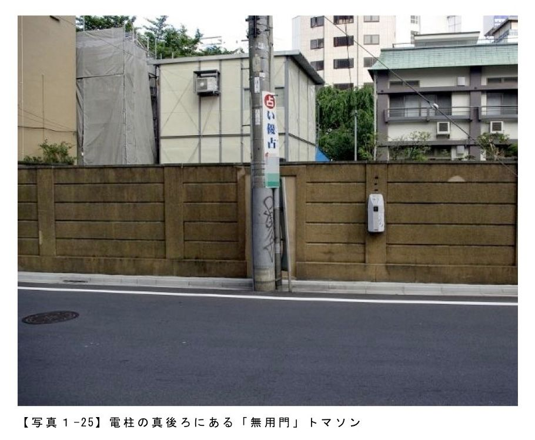
電柱の陰に隠れていて目立たないのですが、これは門の前に電柱を設置するという荒業によって塞がれたのでしょうか。それとももともと使わなくなって塞がれたところに電柱を立てたのでしょうか。そのような推測をしていくと、なんともものすごいところに電柱がありますね、と感心してしまいます。
ただ事象を見て「ああ面白いな」と思えるものと、一体どのような変遷を経てトマソン化していったのか、と考えると面白くなっていくもの。いろいろな物件があると思いますので、普段見過ごしているものをちょっと立ち止まって観察して、そこから形状の美を愛でるも、トマソンを持つ建物の変遷を考えるも、どちらも楽しいと思いますよ。
【写真１‐21】 大崎無用門 東京都品川区大崎
【写真１‐22】 同右
【写真１‐23】 盛岡無用門 岩手県盛岡市
【写真１‐24】 同右
【写真１‐25】 西新宿無用門 東京都新宿西新宿
【写真１‐26】 同右
７ 何の役にも立たない門、それ即ち無用門。
前節は無用門というものについてご紹介しました。前節でご紹介したのは、「通ろうとしても通れない」という変わった門についてでした。今回は
「何のための門だかわからない」
という門について、です。門というのは、敷地の入り口にあるのが当たり前なのですが、そんな常識をひっくり返すような門の数々をご紹介していきます。
【写真１‐21】 大崎無用門 東京都品川区大崎
【写真１‐22】 同右
【写真１‐23】 盛岡無用門 岩手県盛岡市
【写真１‐24】 同右
【写真１‐25】 西新宿無用門 東京都新宿西新宿
【写真１‐26】 同右
７ 何の役にも立たない門、それ即ち無用門。
前節は無用門というものについてご紹介しました。前節でご紹介したのは、「通ろうとしても通れない」という変わった門についてでした。今回は
「何のための門だかわからない」
という門について、です。門というのは、敷地の入り口にあるのが当たり前なのですが、そんな常識をひっくり返すような門の数々をご紹介していきます。
早速一枚の写真から本節の話題に入りますが、門です。正確には門柱です。これだけなら一軒家なんかにもあるのですが、この門柱がある場所が問題。
はい、路上です。歩道です。道です。何の変哲もない歩道が、この門柱のおかげでずいぶんと難しい道路になっております。
加えてこの門柱、一体何のために存在しているのかなんて、こりゃもう全然分からないのです。
おそらくは、昔はこの門柱までどなたかのお家があったのだと思います。それがどういう因果からか、この一画を歩道として提供したのだけれどもその際にこの門柱だけが残されたのではないか、と思います。
加えてこの門柱、一体何のために存在しているのかなんて、こりゃもう全然分からないのです。
おそらくは、昔はこの門柱までどなたかのお家があったのだと思います。それがどういう因果からか、この一画を歩道として提供したのだけれどもその際にこの門柱だけが残されたのではないか、と思います。
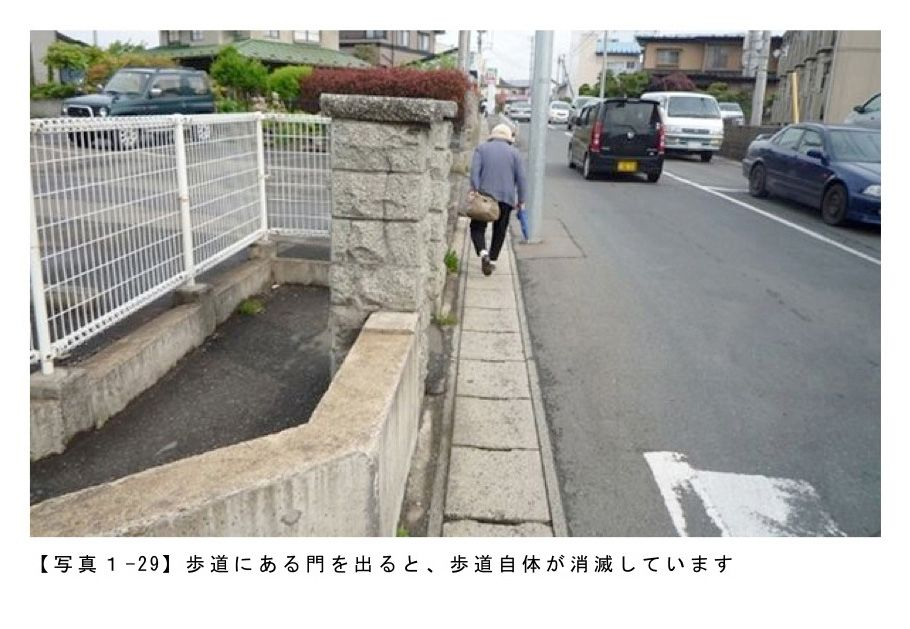
その甲斐あって、今ではこのように市民の方々が普通に通行するなんだかさっぱり意味がわからない門柱になっているのです。
この物件は岩手県盛岡市にあって、現地在住の友人から教えてもらったのですが、この何事もない感じとよくよく考えるとけっこうおかしな事になっているというギャップが実にトマソンらしい逸品です。
続いての無用門はこちら。東京都中央区銀座にあります。
この物件は岩手県盛岡市にあって、現地在住の友人から教えてもらったのですが、この何事もない感じとよくよく考えるとけっこうおかしな事になっているというギャップが実にトマソンらしい逸品です。
続いての無用門はこちら。東京都中央区銀座にあります。
１節目の『トマソンとは？』にも掲載した物件なのですが、こちらは
「せっかく門（扉）があるのに何の役にもたっていない」
という実に哀愁漂う物件です。
「せっかく門（扉）があるのに何の役にもたっていない」
という実に哀愁漂う物件です。
ここは時間貸駐車場なのですが、なんでこんなところに扉があるのか。お察しの良い方は見た途端にお分かりになるかと思いますが、元々は駐車場ではなくビルが建っていたのだと思います。この扉はビルとビルの境によくある目隠しの扉だったのです。
それが、ビルがなくなってしまったのだけれどもこの扉は元々が写真奥に見えるビルにくっついていたものだったので残され、もう何の役にも立たない扉のみがそこにあり続ける事となった、というわけです。
それが、ビルがなくなってしまったのだけれどもこの扉は元々が写真奥に見えるビルにくっついていたものだったので残され、もう何の役にも立たない扉のみがそこにあり続ける事となった、というわけです。
駐車場側から眺めてみると、頭の部分がしっかりとビルに接合されていてますます
「何のためにこんなにしっかりしているのですかあなたという扉は！何の意味もないというのに！」
という気持ちを高めてくれています。
続いてこちら。東京都港区、浜松町駅そばの空き地です。これのどこに無用門があるのかな？ と言いますと......
「何のためにこんなにしっかりしているのですかあなたという扉は！何の意味もないというのに！」
という気持ちを高めてくれています。
続いてこちら。東京都港区、浜松町駅そばの空き地です。これのどこに無用門があるのかな？ と言いますと......
先程のタイプとは異なって一般家庭タイプの門がぽつねんとあります。これがまたキモで、都心のオフィス街になんでこんな一般住宅用にしか見えない門が据え付けられたのか、今となってはビルの跡形もないので余計にわかりません。浪漫です。
最後にご紹介するのはこちら。極めてノーマルな門です。
しかし、この門が実に不思議なのは。
「この門の先には何もない」
というところです。
最後にご紹介するのはこちら。極めてノーマルな門です。
しかし、この門が実に不思議なのは。
「この門の先には何もない」
というところです。
つまり、この門は誰も通さないとか、誰でも通すとかではなく、
「門なのだけれどもその門の先には何もない」
という凄さがあるのです。
「門なのだけれどもその門の先には何もない」
という凄さがあるのです。
分かりづらいと思いますので若干の説明を加えますが、ぴたりと閉ざされたこの門、仮にくぐることができたとしても、その先には全く本当に、何もないのです。
住宅街なので詳しい場所の説明は控えますが、この門の先は植え込みと斜面です。仮に斜面を登れたとしても、そこには月極駐車場があるのみ、です。
住宅街なので詳しい場所の説明は控えますが、この門の先は植え込みと斜面です。仮に斜面を登れたとしても、そこには月極駐車場があるのみ、です。
位置関係を分かりやすくするために門の裏側から撮影してみますと、高台にある駐車場から門を見て、繁みの先に門がぽつんとあるばかり、という何ともフリーダムな状態が保持されております。
本節は今までより更にニッチな記事を書きましたが、実はみちくさついでに見つかるトマソンには、一体これは何なのだろう、と首をかしげつつも妙にかわいげのあるものが大変多いのです。
僕たちが何も意識しないままに日々を過ごしているのだけれども、少しだけ見方を変えてみると、こんなにいびつで愛らしい物たちが我々を待ち受けていてくれるのだなぁ、としみじみ思います。
門のようで門ではないもの、２節にわたってお送りしてきましたが、いかがであったでしょうか。僕はもっと、いろんな無用門が見たいので「こんなものもあるよ」という物件をご存知の方、是非ともご連絡頂きたい！ というのが本望です。
【写真１‐27】 盛岡無用門２ 岩手県盛岡市
【写真１‐28】 同右
【写真１‐29】 同右
【写真１‐30】 銀座無用門 東京都中央区銀座
【写真１‐31】 同右
【写真１‐32】 同右
【写真１‐33】 浜松町無用門 東京都港区浜松町
【写真１‐34】 同右
【写真１‐35】 同右
【写真１‐36】 大森無用門 東京都大田区大森
【写真１‐37】 同右
【写真１‐38】 同右
８ え？ それただのかべに見えますか？ ～ヌリカベトマソン～
町を歩いていると、ふとした瞬間に「あれ、これってちょっと妙じゃないか？」と意識したり、無意識ではありながらも何かひっかかりを感じる。そんな感覚の根底にあるもののひとつがトマソンなのですが、今回ご紹介するタイプはまさしくそういった「あれ？」という感覚に訴えかけるものです。
本節は今までより更にニッチな記事を書きましたが、実はみちくさついでに見つかるトマソンには、一体これは何なのだろう、と首をかしげつつも妙にかわいげのあるものが大変多いのです。
僕たちが何も意識しないままに日々を過ごしているのだけれども、少しだけ見方を変えてみると、こんなにいびつで愛らしい物たちが我々を待ち受けていてくれるのだなぁ、としみじみ思います。
門のようで門ではないもの、２節にわたってお送りしてきましたが、いかがであったでしょうか。僕はもっと、いろんな無用門が見たいので「こんなものもあるよ」という物件をご存知の方、是非ともご連絡頂きたい！ というのが本望です。
【写真１‐27】 盛岡無用門２ 岩手県盛岡市
【写真１‐28】 同右
【写真１‐29】 同右
【写真１‐30】 銀座無用門 東京都中央区銀座
【写真１‐31】 同右
【写真１‐32】 同右
【写真１‐33】 浜松町無用門 東京都港区浜松町
【写真１‐34】 同右
【写真１‐35】 同右
【写真１‐36】 大森無用門 東京都大田区大森
【写真１‐37】 同右
【写真１‐38】 同右
８ え？ それただのかべに見えますか？ ～ヌリカベトマソン～
町を歩いていると、ふとした瞬間に「あれ、これってちょっと妙じゃないか？」と意識したり、無意識ではありながらも何かひっかかりを感じる。そんな感覚の根底にあるもののひとつがトマソンなのですが、今回ご紹介するタイプはまさしくそういった「あれ？」という感覚に訴えかけるものです。
神奈川県横浜市、横浜駅近くにあるビルの裏側にあるのが、一面を白く塗られた壁。ただ通り過ぎているとその通りの壁なのですが、よく観察してみると、どうも単なる壁ではないようです。
その理由として
(1)壁ではあるのだけれども何かが、まるでドアか何かがあったかのような縁取りのような痕跡がある。
(2)足元に階段というにはおおげさだけど、まるで入口段差のようなものがある。
という点から、これは単なる壁ではなくかつて入口があった跡なのではないか、と考えることができます。
そしてこれが、「超芸術トマソン」 （ちくま文庫）で論じられるところの「ヌリカベ」タイプのトマソンです。
その理由として
(1)壁ではあるのだけれども何かが、まるでドアか何かがあったかのような縁取りのような痕跡がある。
(2)足元に階段というにはおおげさだけど、まるで入口段差のようなものがある。
という点から、これは単なる壁ではなくかつて入口があった跡なのではないか、と考えることができます。
そしてこれが、「超芸術トマソン」 （ちくま文庫）で論じられるところの「ヌリカベ」タイプのトマソンです。
まるで水木しげる先生が描く妖怪みたいな名前ですが、何かと言いますと前節でご紹介した無用門とはちょっと異なり、壁だしその差異は微妙なんだけど、実は普通の壁ではないんですよ、というものを「ヌリカベ」トマソンと称します。見た目は地味だけど面白い街角の微妙な異物、といった趣があります。
東京駅の隣、ＪＲ有楽町駅のガード下にも、ヌリカベがあります。駅の新橋側に、東西を繋ぐアーチ型をした通路があるのですが、その中ほどに人が一人通れるかなという程度の穴があります。正確には「かつて穴であったもの」があります。つまりここも塞がれてしまっている、小型のヌリカベがあるのです。
東京駅の隣、ＪＲ有楽町駅のガード下にも、ヌリカベがあります。駅の新橋側に、東西を繋ぐアーチ型をした通路があるのですが、その中ほどに人が一人通れるかなという程度の穴があります。正確には「かつて穴であったもの」があります。つまりここも塞がれてしまっている、小型のヌリカベがあるのです。
こう書くと、「無用の長物＝トマソン」という式にのっとった清く正しいトマソンだ、と言えるのですが実はここはちょっと違う。反対側から観察してみると、塞がれた空間を物入れとして使っているのか、ごくごく小さな扉がついています。
逆にこの扉がクセ物で、なんだかとっても小さいのです。どうせ使うのならもっと大きくしたほうが使いやすいだろうに、とても小さい。実はこれ設計ミスで使いづらいからもう使うのをやめちゃったりしてないかい？ と問いかけたくなるような出来。これはこれで無用の長物。結構謎です。有楽町に出かけられた際には是非ご覧あれ。
東京都品川区大崎、百反通りという通り沿いにあるのは、茶色く綺麗に塗られた壁。しかし一部分がちょっと変。
東京都品川区大崎、百反通りという通り沿いにあるのは、茶色く綺麗に塗られた壁。しかし一部分がちょっと変。
どこかと言いますと、真ん中あたりの足元が少し下がっているのです。幅はちょうどドア１枚分くらい。
つまりこれもおそらくはかつてドアがあったであろう痕跡、ヌリカベ。綺麗にお化粧されているけど、トマソンを追い求める人々、トマソニアンには分かってしまうんですよ、と微笑みかけてしまいたくなるようなかわいいトマソンです、ってそんなこと思うのは私だけでしょうか？
そして今回の白眉は、東京都港区海岸にある建物。
つまりこれもおそらくはかつてドアがあったであろう痕跡、ヌリカベ。綺麗にお化粧されているけど、トマソンを追い求める人々、トマソニアンには分かってしまうんですよ、と微笑みかけてしまいたくなるようなかわいいトマソンです、ってそんなこと思うのは私だけでしょうか？
そして今回の白眉は、東京都港区海岸にある建物。
コンクリート素地のまるで箱のような建物なのですが、数箇所がブロック塀でできています。そしてそこはまるで窓があったかのようになっているのです。
写真をご覧になった建設業界の人は「あれ？」となるかもしれません。まるで※臥梁（がりょう）のような構造なので
「これって単なる臥梁なんじゃないの？」
と思う人もいるかと思います。
※臥梁とは、
煉瓦造り・ブロック造りなどの組積造で、壁の頂部をかためる水平のはり。鉄筋コンクリートで作り、階の継ぎ目、屋根の下などに設ける。（三省堂 大辞林より）
というものです。
写真をご覧になった建設業界の人は「あれ？」となるかもしれません。まるで※臥梁（がりょう）のような構造なので
「これって単なる臥梁なんじゃないの？」
と思う人もいるかと思います。
※臥梁とは、
煉瓦造り・ブロック造りなどの組積造で、壁の頂部をかためる水平のはり。鉄筋コンクリートで作り、階の継ぎ目、屋根の下などに設ける。（三省堂 大辞林より）
というものです。
しかし、そもそもこの建物は明らかな鉄筋コンクリート造で、組積造に適用される臥梁は必要ないし、建物正面に回ってみると無用庇と共に大きな開口であったところを一面ブロック塀で塞いでいるのでやはり先ほどの数箇所塞がれていたブロック塀のところも窓であったものを塞いだヌリカベではないか、と見るのが妥当だと思います。
無機質なコンクリートの塊の中に点在するブロック塀。狙ってこうした訳ではないのだろうけども、これでなんか妙に表情のある建物になっているな、と思います。
ヌリカベタイプのトマソンは、例えば高所ドアのように「一階より上、変なところにドアがある」といったような明確な定義はし辛いのですが、何でもかんでも定義しておけばいいや、ということでもないし、建物の中の僅かなほつれとして楽しめる無意識なアクセントになっていると思います。
特に築年数が経ったビルにおいて見かけることができると思いますので、散策ついでに見つけてみると面白いですよ。
【写真１‐39】 横浜ヌリカベトマソン 神奈川県横浜市西区
【写真１‐40】 同右
【写真１‐41】 有楽町ヌリカベトマソン 東京都千代田区有楽町
【写真１‐42】 同右
【写真１‐43】 百反通りヌリカベトマソン 東京都品川区大崎
【写真１‐44】 海岸ヌリカベトマソン 東京都港区海岸
【写真１‐45】 同右
９ 通勤通学でトマソンに出会う
みちくさや路上観察をする上で重要なのが、天気。晴天の下、街歩きをしながら新たな発見に出会うというのはとっても楽しいものです。
しかし、いつもいつも晴れわたった日に路上観察が出来るか、というとそうではないと思います。折角の休日、さあ出かけようとカーテンを開けると外は生憎の天気。でも心の中は出歩く気満点。仕方ないから雨でも出かけよう、という事もあるかと思います。
雨の中傘をさして、カメラを持って、何か面白いものはないだろうかとそぞろ歩く、というのはなかなかに億劫なものです。カメラが水に濡れたりレンズに水滴がついたりしてしまうのも困りもの。
そういう時にぴったりなのが、通勤や通学の途中で何か面白い物はないだろうか、という作業。みちくさではないのだけれども、日常風景の中に少し変わった物を見つける、という作業はお手軽でいい気分転換になるのではないでしょうか。
そんな都合の良い話があるのか？ これが実はあるのです。電車の駅やホーム、車中から見える風景の中には意外や意外、トマソンがかなり多くあるのです。
無機質なコンクリートの塊の中に点在するブロック塀。狙ってこうした訳ではないのだろうけども、これでなんか妙に表情のある建物になっているな、と思います。
ヌリカベタイプのトマソンは、例えば高所ドアのように「一階より上、変なところにドアがある」といったような明確な定義はし辛いのですが、何でもかんでも定義しておけばいいや、ということでもないし、建物の中の僅かなほつれとして楽しめる無意識なアクセントになっていると思います。
特に築年数が経ったビルにおいて見かけることができると思いますので、散策ついでに見つけてみると面白いですよ。
【写真１‐39】 横浜ヌリカベトマソン 神奈川県横浜市西区
【写真１‐40】 同右
【写真１‐41】 有楽町ヌリカベトマソン 東京都千代田区有楽町
【写真１‐42】 同右
【写真１‐43】 百反通りヌリカベトマソン 東京都品川区大崎
【写真１‐44】 海岸ヌリカベトマソン 東京都港区海岸
【写真１‐45】 同右
９ 通勤通学でトマソンに出会う
みちくさや路上観察をする上で重要なのが、天気。晴天の下、街歩きをしながら新たな発見に出会うというのはとっても楽しいものです。
しかし、いつもいつも晴れわたった日に路上観察が出来るか、というとそうではないと思います。折角の休日、さあ出かけようとカーテンを開けると外は生憎の天気。でも心の中は出歩く気満点。仕方ないから雨でも出かけよう、という事もあるかと思います。
雨の中傘をさして、カメラを持って、何か面白いものはないだろうかとそぞろ歩く、というのはなかなかに億劫なものです。カメラが水に濡れたりレンズに水滴がついたりしてしまうのも困りもの。
そういう時にぴったりなのが、通勤や通学の途中で何か面白い物はないだろうか、という作業。みちくさではないのだけれども、日常風景の中に少し変わった物を見つける、という作業はお手軽でいい気分転換になるのではないでしょうか。
そんな都合の良い話があるのか？ これが実はあるのです。電車の駅やホーム、車中から見える風景の中には意外や意外、トマソンがかなり多くあるのです。
最初にご紹介するのはＪＲ南武線の宿河原駅。具体的には下りホーム最後方。そこには見事な高所ドアがあります。
上りと下りのホームがずれているため、上りホーム側から確認するのは至難の業なのですが、下りホームからはそれこそ目の前に、高所ドアが２枚あるのが見えます。
シンメトリーとなっていて非常に美しい物件ですが、何より不思議なのはかつてこの高所ドアへの昇降階段があった痕跡もなく、何故ここにドアが作られたのかが全く分からないことです。
南武線で立川方面に向かわれる際には、是非ご覧頂きたい秀逸なトマソンです。上り方面にご乗車の際は目をじっと凝らしてみて下さい。不思議な２枚のドアが満員電車の苦痛を和らげてくれます。
二件目のトマソンはＪＲ京浜東北線／横浜線の東神奈川駅。ここのホームには地味ながらもトマソンの集合体があります。
シンメトリーとなっていて非常に美しい物件ですが、何より不思議なのはかつてこの高所ドアへの昇降階段があった痕跡もなく、何故ここにドアが作られたのかが全く分からないことです。
南武線で立川方面に向かわれる際には、是非ご覧頂きたい秀逸なトマソンです。上り方面にご乗車の際は目をじっと凝らしてみて下さい。不思議な２枚のドアが満員電車の苦痛を和らげてくれます。
二件目のトマソンはＪＲ京浜東北線／横浜線の東神奈川駅。ここのホームには地味ながらもトマソンの集合体があります。
場所は上りホームのやはり後方。駅長室という表示があります。まずこの建物にそって設置されている自販機の裏には無用庇トマソンがあります。
建物側面にまわってみると、堂々たるヌリカベトマソン。なんて見事にのっぺりしているのでしょう。本来なら窓や出入り口だったのに、問答無用と言わんばかりに塞がれてしまっています。こんなに塞ぐのなら最初から開けなければよかったのに！ 人生とトマソンは不条理に満ち溢れているのですね。
建物側面にまわってみると、堂々たるヌリカベトマソン。なんて見事にのっぺりしているのでしょう。本来なら窓や出入り口だったのに、問答無用と言わんばかりに塞がれてしまっています。こんなに塞ぐのなら最初から開けなければよかったのに！ 人生とトマソンは不条理に満ち溢れているのですね。
乗客数でいくとあまりここを使う人はいないのでしょうが、今回敢えて紹介するのがＪＲ鶴見線。海芝浦で工場を眺めたり、様々な支線を乗り潰したり、はたまた国道駅でレトロな駅舎に鼻息荒くしてみたり、南関東のＪＲ各線の中で電車自体を気軽に「みちくさ」という用途に使う上では非常に重要な路線です。
無人駅が多いのですが、比例しているかのようにトマソンも多いです。
まずは安善駅。ホームの真正面に見える駅舎には無用庇とヌリカベが連なって存在しています。
無人駅が多いのですが、比例しているかのようにトマソンも多いです。
まずは安善駅。ホームの真正面に見える駅舎には無用庇とヌリカベが連なって存在しています。
しかも昼間なら滅多に閉まらない踏切の上から、はたまたホームから、イヤというほどにトマソン鑑賞が出来ます。この駅舎を買い取ってしまいたくなるくらいに素敵。
続いて鶴見小野駅。こちらもホームから駅舎を眺めるとヌリカベヌリカベまたヌリカベ。トマソン中心で考えると相当にダイナミックな建物です。壁一面にトマソンが展開される風景、ナイスったらありゃしないのです。
今回の物件、駅のホームから見つける事が出来るトマソンとしてはほんの一例です。前述したとおり、ホームだけでなく駅舎や駅構内などを騙されたと思ってあちこち見回してみて下さい。意外にあるものですよ、トマソン。
そして誰も目に留めないものを「あ、トマソンだ」と認識して見つける事が出来るのはこの記事を読んでくれたトマソニアンだけなのです。
【写真１‐46】 宿河原駅高所ドアトマソン 神奈川県川崎市多摩区宿河原
【写真１‐47】 同右
【写真１‐48】 同右
【写真１‐49】 東神奈川駅ヌリカベトマソン群 神奈川県横浜市神奈川区東神奈川
【写真１‐50】 同右
【写真１‐51】 安善駅ヌリカベトマソン 神奈川県横浜市鶴見区安善町
【写真１‐52】 鶴見小野駅ヌリカベトマソン 神奈川県横浜市鶴見区小野町
10 トマソンから感じる強い生命力
いままでとは赴きが異なる写真から始まりましたが、最後は頑張っているトマソンをご紹介します。「頑張っている無用の長物」、強烈に無駄っぽいけど、でも頑張っている姿をどうぞ。
今回の物件、駅のホームから見つける事が出来るトマソンとしてはほんの一例です。前述したとおり、ホームだけでなく駅舎や駅構内などを騙されたと思ってあちこち見回してみて下さい。意外にあるものですよ、トマソン。
そして誰も目に留めないものを「あ、トマソンだ」と認識して見つける事が出来るのはこの記事を読んでくれたトマソニアンだけなのです。
【写真１‐46】 宿河原駅高所ドアトマソン 神奈川県川崎市多摩区宿河原
【写真１‐47】 同右
【写真１‐48】 同右
【写真１‐49】 東神奈川駅ヌリカベトマソン群 神奈川県横浜市神奈川区東神奈川
【写真１‐50】 同右
【写真１‐51】 安善駅ヌリカベトマソン 神奈川県横浜市鶴見区安善町
【写真１‐52】 鶴見小野駅ヌリカベトマソン 神奈川県横浜市鶴見区小野町
10 トマソンから感じる強い生命力
いままでとは赴きが異なる写真から始まりましたが、最後は頑張っているトマソンをご紹介します。「頑張っている無用の長物」、強烈に無駄っぽいけど、でも頑張っている姿をどうぞ。
建物の塀と木。というと良くある街角の風景なのですが、ところがどっこい全然違う。良く見ると違う。
どう違うのかといいますと、木が塀を押しのけて、食い込んでいるのです。
どう違うのかといいますと、木が塀を押しのけて、食い込んでいるのです。
庭に生えた木がコンクリートの塀を押しのけ、フェンスを根に食い込ませ、それでもしっかりと元気に大地に根を生やして隆々たる姿を誇っている。
生命力の強さを感じさせるこのような物件を植物系トマソンと称します。特にこのように無機物にくっついたものを「もの喰う木」と呼びます。無駄なんだけど、とても元気。ちなみにこの物件、東京都大田区、都営浅草線西馬込駅のそばにあります。
続いては街路樹。歩道に等間隔に植えられた樹木は、日陰を作ってくれたり我々の眼を楽しませてくれたりするのですが、トマソン的な街路樹となるとそれに加えてちょっと変わった風景を見せてくれます。
生命力の強さを感じさせるこのような物件を植物系トマソンと称します。特にこのように無機物にくっついたものを「もの喰う木」と呼びます。無駄なんだけど、とても元気。ちなみにこの物件、東京都大田区、都営浅草線西馬込駅のそばにあります。
続いては街路樹。歩道に等間隔に植えられた樹木は、日陰を作ってくれたり我々の眼を楽しませてくれたりするのですが、トマソン的な街路樹となるとそれに加えてちょっと変わった風景を見せてくれます。
この物件も先程と同じく東京都大田区ですが場所は異なり東京モノレールの新整備場駅近くにあります。
街路樹の回りにある柵に、木ががっちりと食い込んでいます。１つ目の物件とはやや異なる状態ではありますが、分類としてはこちらも「もの喰う木」というトマソンに分類されます。
街路樹の回りにある柵に、木ががっちりと食い込んでいます。１つ目の物件とはやや異なる状態ではありますが、分類としてはこちらも「もの喰う木」というトマソンに分類されます。
これまでにご紹介してきたトマソンとは大きく異なるのですが、逆にこういった植物系トマソンは見かける機会が多いかと思います。
都心部では都市計画の一環として、公園や緑地、建物内のビオトープといった形で計画的に樹木が配置されてきている傾向にあるので、郊外の方が見つけやすいと思います。例えば築年数が経っている一軒家と近接している樹木などは、トマソン化している可能性が比較的高いと思われます。
最後は「もの喰う木」ではないのですが、植物によってトマソン化した、という意味ではとても面白い物件です。場所は東京都新宿区、東京メトロ丸の内線新宿御苑駅の近くにあります。
都心部では都市計画の一環として、公園や緑地、建物内のビオトープといった形で計画的に樹木が配置されてきている傾向にあるので、郊外の方が見つけやすいと思います。例えば築年数が経っている一軒家と近接している樹木などは、トマソン化している可能性が比較的高いと思われます。
最後は「もの喰う木」ではないのですが、植物によってトマソン化した、という意味ではとても面白い物件です。場所は東京都新宿区、東京メトロ丸の内線新宿御苑駅の近くにあります。
住宅の扉の目の前に木が生い茂っています。どういうことでか分かりませんが、扉の目の前に、木が生えているのです。
つまりこの扉から出入りしようとすると、木をかきわけて、それでも邪魔だからきっとえいやと枝を脇にはねのけて、やっとのことで入るということになるのですが、実際問題一日に何回もそんなことはしてられない。なのでこの扉を使わず、その脇にあるドアから出入りするのですが、じゃあこの引き戸はなんなんだ、ということになります。ああ無駄。
つまりこの扉から出入りしようとすると、木をかきわけて、それでも邪魔だからきっとえいやと枝を脇にはねのけて、やっとのことで入るということになるのですが、実際問題一日に何回もそんなことはしてられない。なのでこの扉を使わず、その脇にあるドアから出入りするのですが、じゃあこの引き戸はなんなんだ、ということになります。ああ無駄。
この物件に関しては都会の中にいきなり木があった上に、我関せずといった風情で生き生きとしているのがとても楽しい。見ているこっちも「無駄だけど元気な木だなぁ」と感心します。
町はその景色を変えていくのだけれども、その中で木々はしっかりと根を生やして、切られることもなくしっかりとそこに存在している。そんな強い姿は、生命力の確かな強さを感じさせてくれるのです。
まだまだご紹介したいトマソンは沢山あるのですが、今回はここまで。これでトマソンに興味をもたれた方が、赤瀬川原平氏の名著「超芸術トマソン」（ちくま文庫）とカメラを手に街へと繰り出すトマソニアンとなっていただけることを願ってやみません。
見慣れた街を新鮮に感じたり、旅先の全ての風景を発見の場に変えてくれるのが、超芸術トマソンなのだ、と強く僕は思っています。
【写真１‐53】 西馬込もの喰う木 東京都大田区西馬込
【写真１‐54】 同右
【写真１‐55】 羽田もの喰う木 東京都大田区羽田空港
【写真１‐56】 同右
【写真１‐57】 新宿無用化の木 東京都新宿区新宿
【写真１‐58】 同右
【写真１‐59】 同右
町はその景色を変えていくのだけれども、その中で木々はしっかりと根を生やして、切られることもなくしっかりとそこに存在している。そんな強い姿は、生命力の確かな強さを感じさせてくれるのです。
まだまだご紹介したいトマソンは沢山あるのですが、今回はここまで。これでトマソンに興味をもたれた方が、赤瀬川原平氏の名著「超芸術トマソン」（ちくま文庫）とカメラを手に街へと繰り出すトマソニアンとなっていただけることを願ってやみません。
見慣れた街を新鮮に感じたり、旅先の全ての風景を発見の場に変えてくれるのが、超芸術トマソンなのだ、と強く僕は思っています。
【写真１‐53】 西馬込もの喰う木 東京都大田区西馬込
【写真１‐54】 同右
【写真１‐55】 羽田もの喰う木 東京都大田区羽田空港
【写真１‐56】 同右
【写真１‐57】 新宿無用化の木 東京都新宿区新宿
【写真１‐58】 同右
【写真１‐59】 同右
タモリさんが「日本に一人しかいない趣味」と太鼓判を押した、換気口講師の前川さんは、ある日電車の車窓から見える換気口の配列に美を見出し、研究を始めたそうです。
換気口を「目」と見る。換気口を「鼻」と見る。そうすると、ビルのカベが顔に見えてきた。いや、遠くから見たら、周りの建物や街路樹とのコラボレーションもできそうだ。そうやって、今まで見えなかった景色が、星座のように立ち上がってくる。そんな換気口鑑賞のヒントを教授いただきます。
著者：前川ヤス
１９７２年生まれ北海道出身。２００７年春頃、電車の車窓から見える換気口配列の美に魅せられ、「日本に一人しかいない趣味（タモリさん認定）」換気口鑑賞を始める。一児の父。
１ 換気口を鑑賞するとは
「私は換気口を鑑賞しています」と目の前の私が言ったとして、あなたはピンと来るだろうか。
殆どの人は「換気口？」と怪訝そうな顔をし、「あーあれね」と答えた人は大抵違うものを頭に浮かべている。「ダイナミックでいいですよねー」などと答える人がいたら何と勘違いしているのかさえわからない。
私の鑑賞する「換気口」とは、ビルの壁面にポツポツとリズムよく配置されている換気口のことである。
換気口を「目」と見る。換気口を「鼻」と見る。そうすると、ビルのカベが顔に見えてきた。いや、遠くから見たら、周りの建物や街路樹とのコラボレーションもできそうだ。そうやって、今まで見えなかった景色が、星座のように立ち上がってくる。そんな換気口鑑賞のヒントを教授いただきます。
著者：前川ヤス
１９７２年生まれ北海道出身。２００７年春頃、電車の車窓から見える換気口配列の美に魅せられ、「日本に一人しかいない趣味（タモリさん認定）」換気口鑑賞を始める。一児の父。
１ 換気口を鑑賞するとは
「私は換気口を鑑賞しています」と目の前の私が言ったとして、あなたはピンと来るだろうか。
殆どの人は「換気口？」と怪訝そうな顔をし、「あーあれね」と答えた人は大抵違うものを頭に浮かべている。「ダイナミックでいいですよねー」などと答える人がいたら何と勘違いしているのかさえわからない。
私の鑑賞する「換気口」とは、ビルの壁面にポツポツとリズムよく配置されている換気口のことである。
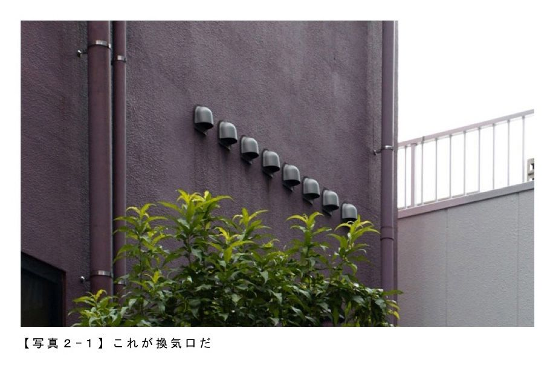
大規模なタワーマンションや、一軒家ではなく、中層の何の変哲もないビルやマンションの壁面にそれはある。ときには競り上がるように、ときには不規則な並び方で、ときには数えきれないほどの数量で換気口は壁に並ぶ。そして、その配置、種類、高さ、壁との調和、など様々な観点からそこに素晴らしきを見出す。私のやっているのはそういうことだ。
一部の例外はあるものの、もともと換気口は「鑑賞に堪え得るようなもの」として、意図的に配置されたものではない。建築に携わる人が、建物の内部を設計し、法律で決められた範囲で換気システムを配置し、外に出す口を設置してみた結果として、壁に配置されて「しまう」ものだ。つまりそこに意図はない。
一部の例外はあるものの、もともと換気口は「鑑賞に堪え得るようなもの」として、意図的に配置されたものではない。建築に携わる人が、建物の内部を設計し、法律で決められた範囲で換気システムを配置し、外に出す口を設置してみた結果として、壁に配置されて「しまう」ものだ。つまりそこに意図はない。
女性が意図してつくるアヒル口が媚びでしかないように、私は意図的に設置された「かっこいい配置でしょ」的換気口は好きではない（大概それはコンクリート打ちっぱなしの壁だ）。いや、好きではないは言いすぎかもしれないが、意図的なものには超えられない限界があると思うのだ。
よく「子供と動物には勝てない」と言うように、いくら意図的に何かをしても、無邪気・無意識から偶々生み出される天才的な反応を超えることは難しい。私は換気口にそんな「無意識の美」を見出している。
この写真を見たのち、是非、街に出てみて欲しい、必ずあなたはビルの壁面の換気口が気になるようになっているはずだ。そして、今まで目に入りながら見ていないものがこれほど街にあふれているということに驚くはずだ。
現在のところ、日本で唯一、いや世界で唯一私しかやっていない趣味、換気口鑑賞。門戸はいつでも開いている。
【写真２‐１】 これが換気口だ
【写真２‐２】 換気口の配置は無意識の美である
２ 換気口鑑賞は昆虫採集である
屋外のものを鑑賞する趣味は、大きく分けて２種類ある。
ひとつはダムや工場など、特定の場所に行けば目的のものが観られることがわかっているもの。
もうひとつは、観たいものは明確なのに、どこに目的のものがあるかはっきりとわからないもの。
このみちくさ学会で取り上げられている題材は殆どが後者だが、その中でも換気口は群を抜いてどこに行けば観られるのかよくわからない。
「どこでそんなの見つけてくるんですか」という質問を受けることがあるが、長らく鑑賞している私でさえ、思いもよらない場所でハイレベルな換気口群を見つけることもあれば、期待に胸膨らませて訪れた土地で空振りに終わることもある。
空振りが何度か続くと、ついブログで「あなたの家の近くで良い換気口物件はありませんか」と呼びかけてしまうが、たいてい反応は殆ど返ってこない。それはそうだ。この趣味、私しかやっていないんだから。
よく「子供と動物には勝てない」と言うように、いくら意図的に何かをしても、無邪気・無意識から偶々生み出される天才的な反応を超えることは難しい。私は換気口にそんな「無意識の美」を見出している。
この写真を見たのち、是非、街に出てみて欲しい、必ずあなたはビルの壁面の換気口が気になるようになっているはずだ。そして、今まで目に入りながら見ていないものがこれほど街にあふれているということに驚くはずだ。
現在のところ、日本で唯一、いや世界で唯一私しかやっていない趣味、換気口鑑賞。門戸はいつでも開いている。
【写真２‐１】 これが換気口だ
【写真２‐２】 換気口の配置は無意識の美である
２ 換気口鑑賞は昆虫採集である
屋外のものを鑑賞する趣味は、大きく分けて２種類ある。
ひとつはダムや工場など、特定の場所に行けば目的のものが観られることがわかっているもの。
もうひとつは、観たいものは明確なのに、どこに目的のものがあるかはっきりとわからないもの。
このみちくさ学会で取り上げられている題材は殆どが後者だが、その中でも換気口は群を抜いてどこに行けば観られるのかよくわからない。
「どこでそんなの見つけてくるんですか」という質問を受けることがあるが、長らく鑑賞している私でさえ、思いもよらない場所でハイレベルな換気口群を見つけることもあれば、期待に胸膨らませて訪れた土地で空振りに終わることもある。
空振りが何度か続くと、ついブログで「あなたの家の近くで良い換気口物件はありませんか」と呼びかけてしまうが、たいてい反応は殆ど返ってこない。それはそうだ。この趣味、私しかやっていないんだから。
とはいえ、全く傾向がないかといえばそうでもない。
そもそも私の期待する換気口は、中層のオフィスビルあるいはマンション、高さ的にいえば８階～12階建てくらいの建物にある。それより低いビルは高さ的に物足りないし、それより高いビルは壁面に換気口がないものが多い（タワーマンションあたりが典型）。
そもそも私の期待する換気口は、中層のオフィスビルあるいはマンション、高さ的にいえば８階～12階建てくらいの建物にある。それより低いビルは高さ的に物足りないし、それより高いビルは壁面に換気口がないものが多い（タワーマンションあたりが典型）。
ならば、そういった中層の建物が密集した場所を探せばよい。
東京でいえば渋谷・六本木・お台場といった誰が見ても繁華街という場所には私の求めるものはなく、一戸建ての住宅ばかりが立ち並ぶ地域にもない。みんなの住みたいまちアンケートで上位に入るようなおしゃれな街にもない。
五反田、大森、新高円寺、中野坂上、駒込、といった（失礼ながら）どちらかというと中途半端に栄えている地域にこそ、換気口はある。
週末、ｇｏｏｇｌｅ ｅａｒｔｈで中層の建物がありそうな地域に目星をつけ、そこに行っては換気口を探す。
この作業は「くぬぎの樹が生えている森」に向かい、カブトムシを探す昆虫採集に似ている。
行ってもそこに目的のものがあるかはわからない。しかし、まだ見ぬカブトムシはきっといる。
麦わら帽子を目深にかぶり、虫カゴを肩に下げる小学生のように、私は今日もカメラを下げて中途半端な都会へ向かう。
【写真２‐３】 換気口はこういうところにある
【写真２‐４】 中層のオフィスビルが狙い目
３ 丸型換気口の魅力
こうして換気口鑑賞をしていると、よく換気口専門メーカーの人からお便りをいただく。換気口を鑑賞するという発想の珍しさもあってか、パンフレットを送っていただいたり、社内報に掲載いただいたりといろいろと特典を頂戴している。ありがたいことだ。
さて、今、私の目の前に某換気口専門メーカーからいただいた換気口カタログがある。
換気口にカタログにするほど種類があるの？ と思ったあなたは甘い。あまりご存じないかもしれないが（そしてご興味もないかもしれないが）換気口にはすさまじく種類がある。
東京でいえば渋谷・六本木・お台場といった誰が見ても繁華街という場所には私の求めるものはなく、一戸建ての住宅ばかりが立ち並ぶ地域にもない。みんなの住みたいまちアンケートで上位に入るようなおしゃれな街にもない。
五反田、大森、新高円寺、中野坂上、駒込、といった（失礼ながら）どちらかというと中途半端に栄えている地域にこそ、換気口はある。
週末、ｇｏｏｇｌｅ ｅａｒｔｈで中層の建物がありそうな地域に目星をつけ、そこに行っては換気口を探す。
この作業は「くぬぎの樹が生えている森」に向かい、カブトムシを探す昆虫採集に似ている。
行ってもそこに目的のものがあるかはわからない。しかし、まだ見ぬカブトムシはきっといる。
麦わら帽子を目深にかぶり、虫カゴを肩に下げる小学生のように、私は今日もカメラを下げて中途半端な都会へ向かう。
【写真２‐３】 換気口はこういうところにある
【写真２‐４】 中層のオフィスビルが狙い目
３ 丸型換気口の魅力
こうして換気口鑑賞をしていると、よく換気口専門メーカーの人からお便りをいただく。換気口を鑑賞するという発想の珍しさもあってか、パンフレットを送っていただいたり、社内報に掲載いただいたりといろいろと特典を頂戴している。ありがたいことだ。
さて、今、私の目の前に某換気口専門メーカーからいただいた換気口カタログがある。
換気口にカタログにするほど種類があるの？ と思ったあなたは甘い。あまりご存じないかもしれないが（そしてご興味もないかもしれないが）換気口にはすさまじく種類がある。
同じ形でも防音機能がついていたり、ほぼ同じ形に見えてもちょっと角度が違ったり大きさが違ったり、正直素人目には何だかよくわからないのも事実だが、とにかく建物の特性やクライアントニーズに合わせるため多くの種類を持っている。
鑑賞にあたってそこまで細かく違いを分類することはしないが、大まかな形についてはやはり気になる。四角い奴がいいのか、丸い奴がいいのか、表に向いている奴がいいのか、奥ゆかしいのがいいのか。ぱっと見で分かるそれくらいの分類はしてみたうえで、私が好きな換気口の形は、何といっても丸型だ。
丸型と言ってもピンとこない方は、写真でみていただくのがよいだろう。この形である。
鑑賞にあたってそこまで細かく違いを分類することはしないが、大まかな形についてはやはり気になる。四角い奴がいいのか、丸い奴がいいのか、表に向いている奴がいいのか、奥ゆかしいのがいいのか。ぱっと見で分かるそれくらいの分類はしてみたうえで、私が好きな換気口の形は、何といっても丸型だ。
丸型と言ってもピンとこない方は、写真でみていただくのがよいだろう。この形である。
妙に可愛らしいこの形は、当然ながらもともと機能重視でつくられている。換気口というのは、空気は通さねばならないが、上から降る雨はしのがなければならないため、上だけにカバーがかかったような形になっている。
しかしできあがったこの形は、換気口という枠を超え、昔の潜水服や宇宙服を思わせる独特のフォルムになっている。何の予備知識もなく単体でこれを見せられたとき、恐らく空気を吸ったり吐いたりする口だとは多くの人が思わないに違いない。
そして、それが壁に複数ちりばめられる様は、深海に潜むダイバーの群れか、あるいは宇宙を遊泳するアストロノーツの集団か。私はそんなことを夢想しながら、街を歩くロマンチストだ。笑わば笑え。
しかしできあがったこの形は、換気口という枠を超え、昔の潜水服や宇宙服を思わせる独特のフォルムになっている。何の予備知識もなく単体でこれを見せられたとき、恐らく空気を吸ったり吐いたりする口だとは多くの人が思わないに違いない。
そして、それが壁に複数ちりばめられる様は、深海に潜むダイバーの群れか、あるいは宇宙を遊泳するアストロノーツの集団か。私はそんなことを夢想しながら、街を歩くロマンチストだ。笑わば笑え。
【写真２‐５】 換気口には様々な種類がある
【写真２‐６】 丸形換気口
【写真２‐７】 複数にちりばめられる換気口
４ コインパーキングと換気口の蜜月
換気口鑑賞と切っては切れないものとしてコインパーキングがある。
あまりに切っては切れないものなので、一時期換気口そっちのけでコインパーキングの料金精算機を撮るのにはまってしまったくらいである。それくらい換気口にとって都市型駐車場は重要なものなのだ。
【写真２‐６】 丸形換気口
【写真２‐７】 複数にちりばめられる換気口
４ コインパーキングと換気口の蜜月
換気口鑑賞と切っては切れないものとしてコインパーキングがある。
あまりに切っては切れないものなので、一時期換気口そっちのけでコインパーキングの料金精算機を撮るのにはまってしまったくらいである。それくらい換気口にとって都市型駐車場は重要なものなのだ。
なぜ、コインパーキングと換気口に関係があるのか。それは世間の日蔭者換気口の成り立ちと関係がある。
そもそも換気口を壁に配置する際、設計者は、まず間違いなく「なるべく目立たないところに配置しよう」と考える。例えば隣に建物があったら、土地の後ろに線路があったら、川があったら、換気口が配置されるのは、いつも表舞台から見えないほうの壁である。
中には例外的に元々表通りに換気口が配置されているものもあるのだが、それはやむなくそうしたに過ぎない。換気口はいつも陰に配置されるのが常なのだ。
しかし、街の風景は必ず変わる。一見、全く変わっていないように見える街でも、建物は日々建てられ、そして壊されていく。すると、建てた時は目立たない壁に配置したつもりだった換気口が、隣の建物が壊されることで白日のもとにさらされてしまうことがあるのだ。
もちろん、またすぐに新たな建物が建つ場合もあるのだが、昨今の不景気、そう簡単に土地の用途は見つからない。結果、またひとつまたひとつと都市型コインパーキングになっていく。
結果的に都会においては、コインパーキングあるところ換気口あり、という構図ができあがるのだ。
そもそも換気口を壁に配置する際、設計者は、まず間違いなく「なるべく目立たないところに配置しよう」と考える。例えば隣に建物があったら、土地の後ろに線路があったら、川があったら、換気口が配置されるのは、いつも表舞台から見えないほうの壁である。
中には例外的に元々表通りに換気口が配置されているものもあるのだが、それはやむなくそうしたに過ぎない。換気口はいつも陰に配置されるのが常なのだ。
しかし、街の風景は必ず変わる。一見、全く変わっていないように見える街でも、建物は日々建てられ、そして壊されていく。すると、建てた時は目立たない壁に配置したつもりだった換気口が、隣の建物が壊されることで白日のもとにさらされてしまうことがあるのだ。
もちろん、またすぐに新たな建物が建つ場合もあるのだが、昨今の不景気、そう簡単に土地の用途は見つからない。結果、またひとつまたひとつと都市型コインパーキングになっていく。
結果的に都会においては、コインパーキングあるところ換気口あり、という構図ができあがるのだ。
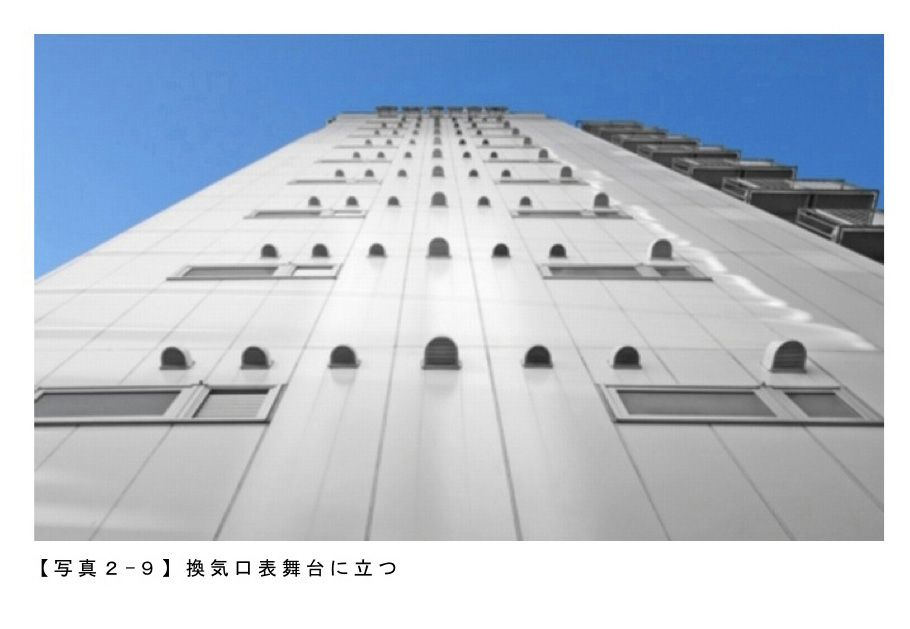
最近、私は新しい街に換気口散策に行く前には、必ず、某社のコインパーキング地図を見るようにしている。これは、地図をドラッグしていくと表示されている範囲にあるコインパーキングをすべて表示してくれるすぐれものだ。
お目当ての駅周辺を検索した結果、黄色い看板のマークが凄い勢いで表示されたとき。私はにやりとして、期待を胸にその駅へ向かうのだ。
お目当ての駅周辺を検索した結果、黄色い看板のマークが凄い勢いで表示されたとき。私はにやりとして、期待を胸にその駅へ向かうのだ。
【写真２‐８】 コインパーキング精算機も面白い
【写真２‐９】 換気口表舞台に立つ
【写真２‐10】 コインパーキングを目指そう
５ ラブホテルと換気口の意外な関係
前回、換気口と切っても切れないものとしてコインパーキングを紹介したが、もうひとつ換気口鑑賞に欠かせないものを紹介したい。何を隠そうラブホテルである。
【写真２‐９】 換気口表舞台に立つ
【写真２‐10】 コインパーキングを目指そう
５ ラブホテルと換気口の意外な関係
前回、換気口と切っても切れないものとしてコインパーキングを紹介したが、もうひとつ換気口鑑賞に欠かせないものを紹介したい。何を隠そうラブホテルである。
実はラブホテルは良い換気口物件である確率がひじょうに高い。恐らく稼働率や人件費の関係だろうが、地上30階などという超高層ラブホテルは基本的に存在せず、大体が６～10階建てという換気口鑑賞的にはジャストサイズの高さ。
また（例外はあるものの）ラブホテルには大抵窓が無い。恐らくのぞき防止、あるいは趣味人の方が他人に見えるようなところで営むことを防ぐという意味なのだろうが、これにより室内の換気は必然的に換気口に頼らねばならなくなる。その結果、尋常ではない量の換気口がついたラブホテルがそこかしこに見受けられるようになる。
更には都会の真ん中のラブホテルであっても駐車場が併設されているケースが多く、撮影ポイントにも事欠かない。ラブホテルは極めて優良でハズレの少ない換気口物件なのだ。
良い換気口物件というのはお台場や幕張のような近年開発された地域には無く、また雑司ヶ谷など住宅街にも無い。五反田、日暮里、大森、新横浜といった中層のビルやマンションの立ち並ぶ中途半端な都会にこそそれはあり、そしてそのような地域には、付き物のようにラブホテル街がある。
ラブホテルというのは、条例等の立地規制の関係で、一定区域内にいわゆるラブホテル街を形成することが多く、郊外においては幹線道路沿い、ターミナル駅に於いては駅から少しはずれたあたり、中途半端な都会では駅前に、ラブホテルが密集する地域が存在する。
中途半端な都会で、ラブホテル街をうろつけば、一網打尽で良い換気口物件が見つかると言う方程式である。
しかし、換気口を鑑賞してまわるということ自体が、常に建物を下からキョロキョロ見渡す作業で怪しいことこの上ないところ、ラブホテル街をカメラ片手にうろつくのは不審者以外の何物でもない。自分でもよく今まで無事に趣味を遂行できていると思う（もしかして探偵だと思われているのだろうか。ただ大っぴらにカメラ持った探偵はいないと思うが）。
最近はデートホテルやカップルズホテルなどというしゃらくさいネーミングで開かれたイメージが強調されつつあるが、まだまだ歩いていて後ろめたい気持ちになることの多いラブホテル街。私が連行されぬよう無事を祈っていてほしい。
また（例外はあるものの）ラブホテルには大抵窓が無い。恐らくのぞき防止、あるいは趣味人の方が他人に見えるようなところで営むことを防ぐという意味なのだろうが、これにより室内の換気は必然的に換気口に頼らねばならなくなる。その結果、尋常ではない量の換気口がついたラブホテルがそこかしこに見受けられるようになる。
更には都会の真ん中のラブホテルであっても駐車場が併設されているケースが多く、撮影ポイントにも事欠かない。ラブホテルは極めて優良でハズレの少ない換気口物件なのだ。
良い換気口物件というのはお台場や幕張のような近年開発された地域には無く、また雑司ヶ谷など住宅街にも無い。五反田、日暮里、大森、新横浜といった中層のビルやマンションの立ち並ぶ中途半端な都会にこそそれはあり、そしてそのような地域には、付き物のようにラブホテル街がある。
ラブホテルというのは、条例等の立地規制の関係で、一定区域内にいわゆるラブホテル街を形成することが多く、郊外においては幹線道路沿い、ターミナル駅に於いては駅から少しはずれたあたり、中途半端な都会では駅前に、ラブホテルが密集する地域が存在する。
中途半端な都会で、ラブホテル街をうろつけば、一網打尽で良い換気口物件が見つかると言う方程式である。
しかし、換気口を鑑賞してまわるということ自体が、常に建物を下からキョロキョロ見渡す作業で怪しいことこの上ないところ、ラブホテル街をカメラ片手にうろつくのは不審者以外の何物でもない。自分でもよく今まで無事に趣味を遂行できていると思う（もしかして探偵だと思われているのだろうか。ただ大っぴらにカメラ持った探偵はいないと思うが）。
最近はデートホテルやカップルズホテルなどというしゃらくさいネーミングで開かれたイメージが強調されつつあるが、まだまだ歩いていて後ろめたい気持ちになることの多いラブホテル街。私が連行されぬよう無事を祈っていてほしい。
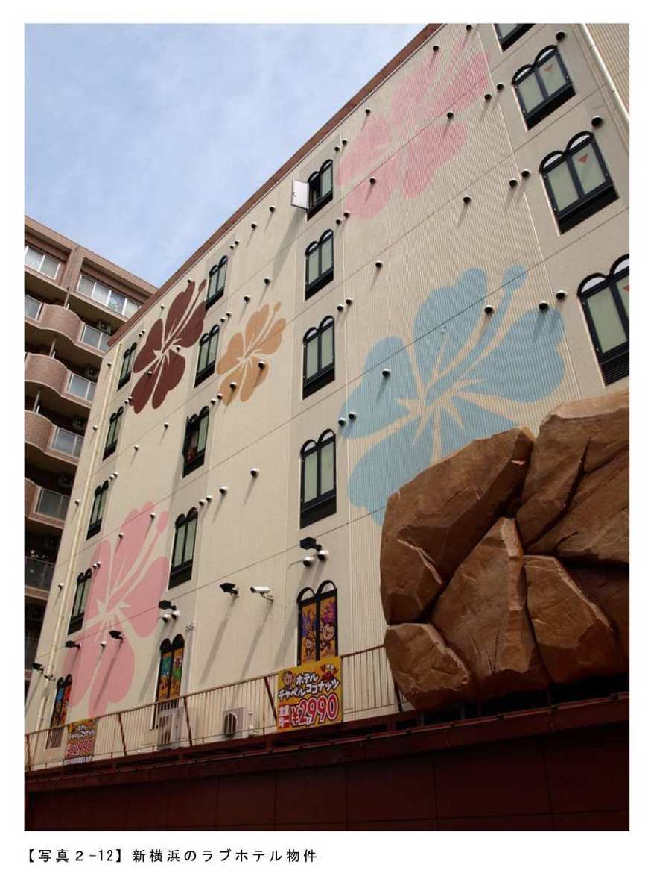
【写真２‐11】 もうひとつの換気口鑑賞に欠かせないものラブホテル
【写真３‐12】 新横浜のラブホテル物件
６ 換気口とわびさびの世界
「換気口といえば煤とかタレが気になりますよね」
これは換気口の件で某テレビ朝日系の番組に出演した際、出演者から問いかけられた疑問だ。
確かに古い建物の換気口からは何やらよくわからない汚れが黒く垂れていることが多い。そして、これらの煤汚れは多くの人が、風呂の水垢のように落とすべきものと考えている。
しかし、どうだろう。谷崎潤一郎を引用するまでもなく、日本には不完全なものや朽ちかけたものをわびさびとしてとらえ評価する文化がある。
【写真３‐12】 新横浜のラブホテル物件
６ 換気口とわびさびの世界
「換気口といえば煤とかタレが気になりますよね」
これは換気口の件で某テレビ朝日系の番組に出演した際、出演者から問いかけられた疑問だ。
確かに古い建物の換気口からは何やらよくわからない汚れが黒く垂れていることが多い。そして、これらの煤汚れは多くの人が、風呂の水垢のように落とすべきものと考えている。
しかし、どうだろう。谷崎潤一郎を引用するまでもなく、日本には不完全なものや朽ちかけたものをわびさびとしてとらえ評価する文化がある。
また、軍艦島や廃墟ブームをみてもわかるように、滅びゆくものを鑑賞し、そこに美や無常を見出す人も数多い。
このような日本で、換気口から出た煤をわびさびと解釈できぬ理由はあるまい。
むしろ、私は、縦に流れ落ちる黒い汚れを水墨画の滝に見立てることで、ビルの壁に雪舟の筆を観ることさえできる。
あるいは、上記タイトル写真。ティム・バートン監督作品の１シーンと言われればそうかな、と思う人もいるのではないだろうか。横からジョニー・デップが顔色の悪いメイクで出てきてもおかしくないかなと、そう思えるのではないだろうか。このような写真が撮れるのも換気口から汚れがダラダラと垂れ流されているからと思えば、そこに意義を見出すこともできよう。
古仏像の緑青が落とされ、黄金色に復元されたとき却ってありがたみがなくなってしまうように、さびにはさびの、煤には煤の味がある。
これからもタレも含めて換気口鑑賞していこうと思う。
みちくさ学会で取り上げられているものの多くは、その経年劣化も含めて楽しめるものが多い。
日本人ならばその劣化も含めて、味と捉える心を忘れないようにしたい。
このような日本で、換気口から出た煤をわびさびと解釈できぬ理由はあるまい。
むしろ、私は、縦に流れ落ちる黒い汚れを水墨画の滝に見立てることで、ビルの壁に雪舟の筆を観ることさえできる。
あるいは、上記タイトル写真。ティム・バートン監督作品の１シーンと言われればそうかな、と思う人もいるのではないだろうか。横からジョニー・デップが顔色の悪いメイクで出てきてもおかしくないかなと、そう思えるのではないだろうか。このような写真が撮れるのも換気口から汚れがダラダラと垂れ流されているからと思えば、そこに意義を見出すこともできよう。
古仏像の緑青が落とされ、黄金色に復元されたとき却ってありがたみがなくなってしまうように、さびにはさびの、煤には煤の味がある。
これからもタレも含めて換気口鑑賞していこうと思う。
みちくさ学会で取り上げられているものの多くは、その経年劣化も含めて楽しめるものが多い。
日本人ならばその劣化も含めて、味と捉える心を忘れないようにしたい。
【写真２‐13】 換気口のわびさび その１
【写真２‐14】 換気口のわびさび その２
７ 「換気口、下から撮るか？ 横から撮るか？」
何度も言っているように換気口鑑賞というのは日本で私しかやっていない趣味である。
しかも斯様にプチプチとした換気口が存在するのは日本だけなので、必然的に世界で私しかやっていない趣味でもある。
私自身は、決してそれを誇らしくなど思っておらず、むしろもっとこの趣味を広めたいと思っているのだが、世間というのはあまり変人には同調してくれないものである。「半年早かったかもしれない」と言われ続けてもう３年くらい経つ。
【写真２‐14】 換気口のわびさび その２
７ 「換気口、下から撮るか？ 横から撮るか？」
何度も言っているように換気口鑑賞というのは日本で私しかやっていない趣味である。
しかも斯様にプチプチとした換気口が存在するのは日本だけなので、必然的に世界で私しかやっていない趣味でもある。
私自身は、決してそれを誇らしくなど思っておらず、むしろもっとこの趣味を広めたいと思っているのだが、世間というのはあまり変人には同調してくれないものである。「半年早かったかもしれない」と言われ続けてもう３年くらい経つ。
ただ、一人しかやっていない趣味であるがゆえの利点もある。
例えば、あなたが写真をはじめて間もなく、花とか山とかを撮り始めたとする。とくにこだわりもなく好き勝手に撮っているうちは良いのだが「どうせならもう少しちゃんと勉強しようかな」などと思い始めると罠にはまる。誰もが撮っている被写体は、それだけ大勢の人が一家言持っている。
ちょっと詳しそうな人に相談しようものなら、やれ露出がどうだ、絞りがどうだ、このレンズがいい、この作例をご覧なさい、これ買うくらいならニコンのこれ買いなよ、などと矢継ぎ早にいろいろとアドバイスを押し売りされてしまう。
その点、換気口は撮っているのが私しかいないのだ。私が「これが一番美しい撮り方だ」といえば、それが正解になる。
私は、換気口は建物に正対し真下から撮るのが最も美しいと考えている。できる限り正面から撮ることにより、換気口の高さが最も強調され、夜の滑走路にまたたく誘導灯のように見える。
例えば、あなたが写真をはじめて間もなく、花とか山とかを撮り始めたとする。とくにこだわりもなく好き勝手に撮っているうちは良いのだが「どうせならもう少しちゃんと勉強しようかな」などと思い始めると罠にはまる。誰もが撮っている被写体は、それだけ大勢の人が一家言持っている。
ちょっと詳しそうな人に相談しようものなら、やれ露出がどうだ、絞りがどうだ、このレンズがいい、この作例をご覧なさい、これ買うくらいならニコンのこれ買いなよ、などと矢継ぎ早にいろいろとアドバイスを押し売りされてしまう。
その点、換気口は撮っているのが私しかいないのだ。私が「これが一番美しい撮り方だ」といえば、それが正解になる。
私は、換気口は建物に正対し真下から撮るのが最も美しいと考えている。できる限り正面から撮ることにより、換気口の高さが最も強調され、夜の滑走路にまたたく誘導灯のように見える。
そして一人で決められるのは撮り方だけではない。理想の建物の色から、換気口の形、換気口のメッカは新横浜だというところまで、全部自分で決められる。
だが内心では、こんな私を脅かす若人が出てくることを密かに期待している。正面派の私に対して、横から撮ることを是とするイキのいい若者が噛みついてくるのを待っている。
なんだか全盛期の千代の富士みたいなコメントだが、これは換気口の話である。
【写真２‐15】 下からみた換気口 その１
【写真２‐16】 下からみた換気口 その２
８ 換気口、夢の共演
世の中には様々な分野で「共演もの」というジャンルがある。
とくに芸能の分野では、古くからドラマや映画で「夢の共演」と煽られるケースがよくあり、戦後の映画会社専属制度が残っていた時代は、この人とこの人が同じスクリーンに、というのはまさに夢であった。
また、スポーツの分野でも野球のオールスター戦が「夢の球宴」と称されるように、普段実現できない対決を楽しめるのはひとつの醍醐味になっている。
近年、どの分野でも誰もがわくわくするような「夢の共演」は減りつつあるが、大スター同士の火の出るようなつばぜり合いはいつの世も我々を魅了するものである。
ところで換気口である。
私個人としては被写体としての換気口は、単体でも十分スター性のある素材だと思っているのだが、どうも世間の人はそう考えていないのではないかと最近とみに感じる。
だが内心では、こんな私を脅かす若人が出てくることを密かに期待している。正面派の私に対して、横から撮ることを是とするイキのいい若者が噛みついてくるのを待っている。
なんだか全盛期の千代の富士みたいなコメントだが、これは換気口の話である。
【写真２‐15】 下からみた換気口 その１
【写真２‐16】 下からみた換気口 その２
８ 換気口、夢の共演
世の中には様々な分野で「共演もの」というジャンルがある。
とくに芸能の分野では、古くからドラマや映画で「夢の共演」と煽られるケースがよくあり、戦後の映画会社専属制度が残っていた時代は、この人とこの人が同じスクリーンに、というのはまさに夢であった。
また、スポーツの分野でも野球のオールスター戦が「夢の球宴」と称されるように、普段実現できない対決を楽しめるのはひとつの醍醐味になっている。
近年、どの分野でも誰もがわくわくするような「夢の共演」は減りつつあるが、大スター同士の火の出るようなつばぜり合いはいつの世も我々を魅了するものである。
ところで換気口である。
私個人としては被写体としての換気口は、単体でも十分スター性のある素材だと思っているのだが、どうも世間の人はそう考えていないのではないかと最近とみに感じる。
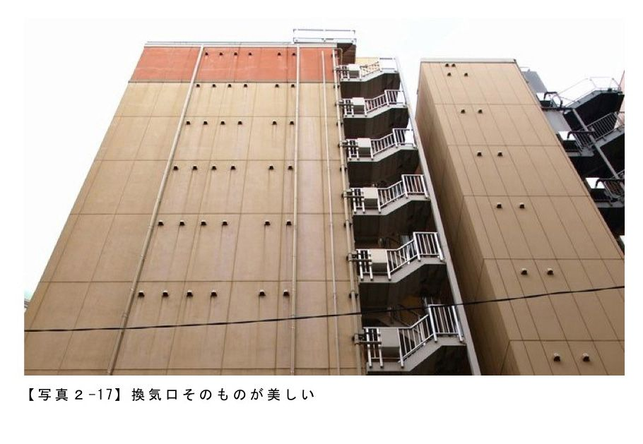
少し人気の落ちてきたスターが別のスターの力を借りて違う魅力を引き出すように、あるいは映画のバディものでベテランスターにわざと新人を当てお互いに刺激を与える様に、換気口も共演者次第ではもっと輝くのかもしれない。
そういった思いから撮ってみたのが教会とのコラボレーションである。
そういった思いから撮ってみたのが教会とのコラボレーションである。
ちょっと換気口、控えめすぎだろうか。これでは共演と言うよりバックダンサーである。
後ろからのぞくような換気口もこれはこれで味があるが、どうせならもっとしっかりと共演したい。それも横浜の教会のような中途半端なスポットではなく、大スターとの共演が欲しい。
そして撮ったのがこの写真である。
後ろからのぞくような換気口もこれはこれで味があるが、どうせならもっとしっかりと共演したい。それも横浜の教会のような中途半端なスポットではなく、大スターとの共演が欲しい。
そして撮ったのがこの写真である。
どうだろう。がっぷり四つではないだろうか。
スカイツリーの登場で、だんだん影が薄くなりつつある東京タワー。換気口の力を借りて、その魅力を再発見できるのではないだろうか。
何さまなのか私。
【写真２‐17】 換気口そのものが美しい
【写真２‐18】 教会とのコラボレーション
【写真２‐19】 大スターとの共演
９ 換気口見立ての世界
古来日本には「見立て」という文化がある。
御存じのとおり「見立て」は、あるモノを別なモノを使って表現する遊びであって、有名なところでは水を使わず水流を表現する枯山水庭園などが典型である。身近な例でいえば、ウインナーでタコを作るなんていうのも一種の見立てといえるであろう。
また、「見立て」は能動的にＡを使ってＢを表現する、という場合だけでなく、Ａの中にＢを見出すような場合も使われる。例えば、各地の山がそれぞれ富士になぞらえられているようなケースがこれである。
今回は、換気口についてもひとつの鑑賞法として「見立て」を取り入れてみたい。
以前にも説明した通り、換気口の配列というのは「こう並べよう」と思って配置されているわけではない。法律上、特定の容積あたりこれくらい換気しなくてはならないという決まりがあり、それを建物の配管だの何だのと場所の折り合いをつけながら、何とか外に出しているのが換気口である。したがって、そこにはデザイン要素も芸術的意図も基本的にはない。
しかし、その無意識から生まれた美を鑑賞に足るものとして解釈することこそ、この趣味である。
数多くの換気口を鑑賞する中で、中には様々なものに見立てられる換気口も確かに存在する。
例えばこの換気口。これは、屋根の瓦と相まっておばちゃんパーマに見立てられる。
スカイツリーの登場で、だんだん影が薄くなりつつある東京タワー。換気口の力を借りて、その魅力を再発見できるのではないだろうか。
何さまなのか私。
【写真２‐17】 換気口そのものが美しい
【写真２‐18】 教会とのコラボレーション
【写真２‐19】 大スターとの共演
９ 換気口見立ての世界
古来日本には「見立て」という文化がある。
御存じのとおり「見立て」は、あるモノを別なモノを使って表現する遊びであって、有名なところでは水を使わず水流を表現する枯山水庭園などが典型である。身近な例でいえば、ウインナーでタコを作るなんていうのも一種の見立てといえるであろう。
また、「見立て」は能動的にＡを使ってＢを表現する、という場合だけでなく、Ａの中にＢを見出すような場合も使われる。例えば、各地の山がそれぞれ富士になぞらえられているようなケースがこれである。
今回は、換気口についてもひとつの鑑賞法として「見立て」を取り入れてみたい。
以前にも説明した通り、換気口の配列というのは「こう並べよう」と思って配置されているわけではない。法律上、特定の容積あたりこれくらい換気しなくてはならないという決まりがあり、それを建物の配管だの何だのと場所の折り合いをつけながら、何とか外に出しているのが換気口である。したがって、そこにはデザイン要素も芸術的意図も基本的にはない。
しかし、その無意識から生まれた美を鑑賞に足るものとして解釈することこそ、この趣味である。
数多くの換気口を鑑賞する中で、中には様々なものに見立てられる換気口も確かに存在する。
例えばこの換気口。これは、屋根の瓦と相まっておばちゃんパーマに見立てられる。
「ちょっと聞いた？ 向かいの節子さん家の娘、離婚したんだって」みたいな雰囲気である。
丸型換気口自体がもともと目のようなフォルムをしているため、何かが加わると途端に顔化してしまうのも一因かもしれない。
そしてこれはどうだろう。やはりこれも丸型換気口が目に見える物件だ。
丸型換気口自体がもともと目のようなフォルムをしているため、何かが加わると途端に顔化してしまうのも一因かもしれない。
そしてこれはどうだろう。やはりこれも丸型換気口が目に見える物件だ。
この三つ連なる様子はトーテムポールに見立てられる。
そして、最後にこれである。
枯れ木に咲く換気口の花である。
そして、最後にこれである。
枯れ木に咲く換気口の花である。
おばちゃんパーマとか言っていたときは自分でもどうなることかと思ったが、最後に風流なところにオチを持ってこられて本当によかったと思う。
【写真２‐20】 おばちゃんパーマ換気口
【写真２‐21】 換気口三兄弟
【写真２‐22】 枯れ木も換気口の賑わい
10 さらば愛しの換気口
自分で言うのも何ではあるが、換気口鑑賞は「誰も見ていないもの」「建てる人が隠そうとしているもの」をわざわざ鑑賞する、というところに肝がある、いわば究極の出オチである。
そんな出オチのネタを長々続けるのもジャンプの連載漫画のようで風情に欠けるというもので、スパッと今回で終わらせたいとこういうわけである。
【写真２‐20】 おばちゃんパーマ換気口
【写真２‐21】 換気口三兄弟
【写真２‐22】 枯れ木も換気口の賑わい
10 さらば愛しの換気口
自分で言うのも何ではあるが、換気口鑑賞は「誰も見ていないもの」「建てる人が隠そうとしているもの」をわざわざ鑑賞する、というところに肝がある、いわば究極の出オチである。
そんな出オチのネタを長々続けるのもジャンプの連載漫画のようで風情に欠けるというもので、スパッと今回で終わらせたいとこういうわけである。
最後に語りたいのは、私が換気口鑑賞という趣味を続けている理由である。
趣味というのは、続いてはじめて趣味になる。昨日ヨガを始めた人がヨガが趣味ですとは言わない。いや厚顔な人は言うかもしれないが、まあ普通の人は言わない。
生来の飽き症の私が、こうしてせっせとカメラ片手に自転車を走らせ続けているのは、換気口鑑賞に意義と楽しさを見出しているからだ。
換気口で対象となる建物は、何の変哲もない中層のビルやマンションだ。名のある建築家が建てたものでもなければ、歴史的価値があるほど旧い建物でもない。ましてや天高くそびえるような高層建築でもないし、バブルの遺産でもない。中小企業がちょこまかと入っている雑居ビルや、布団が常に干されているデザインレスなマンションにこそ良質の換気口がある。
これまで「建築鑑賞」というカテゴリの中で誰も見向きもしなかった建物を鑑賞足るものとして自分が見出し世間に紹介できていること。これはとても意義がある。
趣味というのは、続いてはじめて趣味になる。昨日ヨガを始めた人がヨガが趣味ですとは言わない。いや厚顔な人は言うかもしれないが、まあ普通の人は言わない。
生来の飽き症の私が、こうしてせっせとカメラ片手に自転車を走らせ続けているのは、換気口鑑賞に意義と楽しさを見出しているからだ。
換気口で対象となる建物は、何の変哲もない中層のビルやマンションだ。名のある建築家が建てたものでもなければ、歴史的価値があるほど旧い建物でもない。ましてや天高くそびえるような高層建築でもないし、バブルの遺産でもない。中小企業がちょこまかと入っている雑居ビルや、布団が常に干されているデザインレスなマンションにこそ良質の換気口がある。
これまで「建築鑑賞」というカテゴリの中で誰も見向きもしなかった建物を鑑賞足るものとして自分が見出し世間に紹介できていること。これはとても意義がある。
喩えるなら、地元の漁師が捨てていたどんな調理方法でもまずい魚が、１か月ほど灰の中で置き去りにされていたのを偶然私が拾い、食べてみたら熟成されていて素晴らしく美味しかったような話である。ちなみにこの話はピータンの製造方法発見時の実話だ。そんな灰の中で数カ月も経った卵を食べてみようと思う人の勇気はナマコを初めて食べた人なんかの比ではない。最初はイジメだったのではないだろうか。ジャイアンがのび太に「鼻からスパゲティ食え」と言ったみたいな。何の話でしたっけ？
また、私を突き動かすのは使命感だけではない。換気口鑑賞には楽しさがある。
以前昆虫採集に喩えたことがあったが、いつどこで素晴らしい物件に会えるかはわからない意外性。そして今日あった物件が明日には無くなっているかもしれない（逆もしかり）という希少性。写真を撮っていていつ怒られるかわからないゲーム性。いずれをとっても趣味の王道である。
しかも私一人しかやっていないので私一人がルールを決められるのだ。何て自由。何て王様気分。
こうして私は趣味としての換気口鑑賞を今も続けている。
これで換気口の紹介は終わりだが、私が換気口を撮り続ける旅は終わらない。
誰かが私を追い抜くまではきっと。
まあそれ以前に追って来てくれる人を待つのが先なんだけど。
また、私を突き動かすのは使命感だけではない。換気口鑑賞には楽しさがある。
以前昆虫採集に喩えたことがあったが、いつどこで素晴らしい物件に会えるかはわからない意外性。そして今日あった物件が明日には無くなっているかもしれない（逆もしかり）という希少性。写真を撮っていていつ怒られるかわからないゲーム性。いずれをとっても趣味の王道である。
しかも私一人しかやっていないので私一人がルールを決められるのだ。何て自由。何て王様気分。
こうして私は趣味としての換気口鑑賞を今も続けている。
これで換気口の紹介は終わりだが、私が換気口を撮り続ける旅は終わらない。
誰かが私を追い抜くまではきっと。
まあそれ以前に追って来てくれる人を待つのが先なんだけど。
【写真２‐23】 愛しの換気口鑑賞
【写真２‐24】 自分で見出し世間に紹介
【写真２‐25】 明日にはなくなっているかもしえれない希少性
【写真２‐24】 自分で見出し世間に紹介
【写真２‐25】 明日にはなくなっているかもしえれない希少性
私（大谷）のマンホール原体験は、東京大学本郷キャンパスで、帝大時代のマンホールをふと見つけた時。周囲の路面は何度となく舗装し直されていたのでしょうが、キミここでずっと残っていたのか！ と感動してしまいました。
厚生労働省によれば、日本人（成人）は、毎日６，０００～７，０００歩と言われています。しかし、普段忙しいみなさんは、路面を見ながら歩いたりしないのではないでしょうか。本章では、そんな"足元"に潜む、私達が毎日毎日も踏んでしまっている芸術、マンホールの魅力を森本さんに解説していただきます。もしかすると、これからは気になって足元を見ながら歩くようになってしまうかも。
著者：森本庄治
奈良井宿のマンホール蓋を今はなきPhoto共有サービスにアップしたところ反響があったのに驚き興味をもつ。マンホール蓋界の中ではまだ新参者。
ソーシャルソフトを使った趣味の展開にはまっており、Twitter上のハッシュタグを使ったマンホール蓋ネタ #manhotalkやガンダムメカネタ#msvtalk。
ブログではマンホール蓋の#Manhotalk、土産物 おもに!!「出張みやげ日記」。ソーシャルソフトのサービス マンホールマップなどを実施中
１ 大人の宝探し マンホール蓋の魅力
生まれ故郷のマンホールの蓋の柄を思い出せますか？
普段この話題を振るとしばらく考え込んで「うーん。わかんないなぁ。」とほとんどの人が答えます。それが、今住んでいるところのマンホールの蓋でも、勤務先や学校のそばの蓋について聞いても、「覚えていないなぁ」と同じような答えがかえってくるのです。
厚生労働省によれば、日本人（成人）は、毎日６，０００～７，０００歩と言われています。しかし、普段忙しいみなさんは、路面を見ながら歩いたりしないのではないでしょうか。本章では、そんな"足元"に潜む、私達が毎日毎日も踏んでしまっている芸術、マンホールの魅力を森本さんに解説していただきます。もしかすると、これからは気になって足元を見ながら歩くようになってしまうかも。
著者：森本庄治
奈良井宿のマンホール蓋を今はなきPhoto共有サービスにアップしたところ反響があったのに驚き興味をもつ。マンホール蓋界の中ではまだ新参者。
ソーシャルソフトを使った趣味の展開にはまっており、Twitter上のハッシュタグを使ったマンホール蓋ネタ #manhotalkやガンダムメカネタ#msvtalk。
ブログではマンホール蓋の#Manhotalk、土産物 おもに!!「出張みやげ日記」。ソーシャルソフトのサービス マンホールマップなどを実施中
１ 大人の宝探し マンホール蓋の魅力
生まれ故郷のマンホールの蓋の柄を思い出せますか？
普段この話題を振るとしばらく考え込んで「うーん。わかんないなぁ。」とほとんどの人が答えます。それが、今住んでいるところのマンホールの蓋でも、勤務先や学校のそばの蓋について聞いても、「覚えていないなぁ」と同じような答えがかえってくるのです。
そう、私も以前はそうでした。あの蓋に出会うまでは......。
数年前に木曽路旅行でよった奈良井宿で、「単純にきれいなだなぁ」と、ほとんど何も考えずに反射的に写真を撮ってしまったのです。帰宅後に他の木曽路旅行の写真といっしょにＰｈｏｔｏ共有サービスにアップしたところ、いくつかのコメントがよせられて、あらためてマンホールの蓋なんだよなぁというのを再認識したぐらいでした。
そんなことも忘れかけていたその翌月に松本市に訪れる機会があり、信号待ちをしていたとき、ふと下を見て衝撃をうけました。なんと蓋に色がついていたんです。しかも特産品の松本手鞠が見事なデザインで描かれています。
そんなことも忘れかけていたその翌月に松本市に訪れる機会があり、信号待ちをしていたとき、ふと下を見て衝撃をうけました。なんと蓋に色がついていたんです。しかも特産品の松本手鞠が見事なデザインで描かれています。
衝撃をうけた私は、松本の市内を散策しました。
すると......でるわでるわ......小さい蓋、色なしの蓋、古い蓋、違う色目の蓋......、一気にマニア心に火がついてしまいました。大きさや色の違いだけではなく、よーく見ると同じ種類の蓋でもそれぞれの個体で状態の違いがあり、きれいな蓋と痛んでいる蓋があったりと、作られた当時は同じ状態だった蓋がたどってきた年月も感じられました。探している課程も楽しく、まるで子供時代によく遊んだ遊び「宝探し」のような感じでした。
今まで気にもとめなかったマンホール蓋が宝物になった瞬間です。そう地面には宝物が埋まっていたのです。その後、訪れる土地のマンホール蓋撮影が、旅行の大きな楽しみになりました。
意外に知られていないのですが、実はマンホール蓋にも各自治体の水道局、消防、ＮＴＴ系、電力系などの管理母体があります。特に水道系は市町村ごとに違い各地の地域色がコンパクトに詰まった魅力のあるものが多く、ネットを調べるとたくさんの愛好家が情報を発信されています。
私のコーナーではそんなマンホール蓋の魅力について語っていきたいと思います。皆様も散歩の途中に自分の足下を見てみてくださいね。
【写真３‐１】 奈良井宿の蓋（２００７年６月）
【写真３‐２】 奈良井宿の蓋（２００７年６月）
【写真３‐３】 松本市の色蓋（２００７年７月）
【写真３‐４】 松本市の蓋 （２００７年７月）
２ 知らない街でマンホール蓋を探索するには!?
訪れたことのない街......そこにはどんな道があるのか？ 他にはない面白いものがあるのか？ 何に出会えるのか？ そして美しいマンホール蓋に出会えるのか？ とてもわくわくしますよね。知らない街を歩きいろんなものを発見し素直に楽しむ......これこそ「みちくさ」の醍醐味です。
とはいえ、知らない街なので、少しでも効率よく蓋に出会えるように、マンホール蓋の探索の基礎知識を語っていきましょう。何かの用事で知らない街に行っても、この原則を覚えていると効率よく蓋を探すことが可能です。
今まで気にもとめなかったマンホール蓋が宝物になった瞬間です。そう地面には宝物が埋まっていたのです。その後、訪れる土地のマンホール蓋撮影が、旅行の大きな楽しみになりました。
意外に知られていないのですが、実はマンホール蓋にも各自治体の水道局、消防、ＮＴＴ系、電力系などの管理母体があります。特に水道系は市町村ごとに違い各地の地域色がコンパクトに詰まった魅力のあるものが多く、ネットを調べるとたくさんの愛好家が情報を発信されています。
私のコーナーではそんなマンホール蓋の魅力について語っていきたいと思います。皆様も散歩の途中に自分の足下を見てみてくださいね。
【写真３‐１】 奈良井宿の蓋（２００７年６月）
【写真３‐２】 奈良井宿の蓋（２００７年６月）
【写真３‐３】 松本市の色蓋（２００７年７月）
【写真３‐４】 松本市の蓋 （２００７年７月）
２ 知らない街でマンホール蓋を探索するには!?
訪れたことのない街......そこにはどんな道があるのか？ 他にはない面白いものがあるのか？ 何に出会えるのか？ そして美しいマンホール蓋に出会えるのか？ とてもわくわくしますよね。知らない街を歩きいろんなものを発見し素直に楽しむ......これこそ「みちくさ」の醍醐味です。
とはいえ、知らない街なので、少しでも効率よく蓋に出会えるように、マンホール蓋の探索の基礎知識を語っていきましょう。何かの用事で知らない街に行っても、この原則を覚えていると効率よく蓋を探すことが可能です。
場所のあたりをつけましょう！
まず大原則は、「人の生活しているところに蓋はある。」ということです。この原則は欠かせません。マンホール蓋の下には、雨水管、汚水管、貯水槽、電気、電話などの生活に必要なインフラがありますので、人が多いところほど必要になります。そのため蓋の数も多くなるのです。特にコスト高なカラー蓋は、ほぼ１００％といっていいと思いますが、人が集まるところにあります。
たとえば以下のようなところです。
駅前：必須のチェック場所です。その自治体にカラーの蓋がある場合は高確率であります。
商店街の中：やはり人が集まる場所ですので商店街も押さえる場所です。店の方が清掃をされていることが多いので、蓋にあまり汚れがついていないような気もします。
観光名所のそば：マンホーラーにとっては、最高の場所ですね。私は撮ったことはありませんが、うまくいけば本物をバックにデザインマンホールが撮れるかも！
まずは駅前の例から......花小金井駅前。もう一種類の色蓋もありました。
まず大原則は、「人の生活しているところに蓋はある。」ということです。この原則は欠かせません。マンホール蓋の下には、雨水管、汚水管、貯水槽、電気、電話などの生活に必要なインフラがありますので、人が多いところほど必要になります。そのため蓋の数も多くなるのです。特にコスト高なカラー蓋は、ほぼ１００％といっていいと思いますが、人が集まるところにあります。
たとえば以下のようなところです。
駅前：必須のチェック場所です。その自治体にカラーの蓋がある場合は高確率であります。
商店街の中：やはり人が集まる場所ですので商店街も押さえる場所です。店の方が清掃をされていることが多いので、蓋にあまり汚れがついていないような気もします。
観光名所のそば：マンホーラーにとっては、最高の場所ですね。私は撮ったことはありませんが、うまくいけば本物をバックにデザインマンホールが撮れるかも！
まずは駅前の例から......花小金井駅前。もう一種類の色蓋もありました。
次は商店街の例 確か高松駅駅前にはなかったと記憶していますが、商店街の方に大量にありました。
次は観光地の例 こちらも駅前には色蓋は見当たりませんでしたが、小諸城址 懐古園の入り口に１枚だけありました。
まずはこの３つ「駅前」、「商店街」、「観光名所」を押さえると、ぐっと効率があがります。
意外なところも穴場です。
そうなんです。意外なところが穴場になっています。もし訪れる場所のそばにこのような施設があればぜひよってみてください。
市町村の役所 ：水道課によってみてください。蓋の展示をしているところもあります。
港 ：港湾局管轄の蓋があったりします。
農地 ：農業集落排水事業で配備された蓋があったりします。
まずは、役所の中の例から......。
こんな感じで蓋が飾ってあることがあります。上下水道局を管轄しているのが役所であることや、地場の企業のプロモーションで飾ってあるようです。色蓋があることも。
意外なところも穴場です。
そうなんです。意外なところが穴場になっています。もし訪れる場所のそばにこのような施設があればぜひよってみてください。
市町村の役所 ：水道課によってみてください。蓋の展示をしているところもあります。
港 ：港湾局管轄の蓋があったりします。
農地 ：農業集落排水事業で配備された蓋があったりします。
まずは、役所の中の例から......。
こんな感じで蓋が飾ってあることがあります。上下水道局を管轄しているのが役所であることや、地場の企業のプロモーションで飾ってあるようです。色蓋があることも。
次は港のそばの蓋ですね。港湾は国土交通省港湾局や地方公共団体の港湾局が管理しており、その関係で蓋もオリジナルなものがあるのです。
農地の例 あまり人が集まりそうのない農地ですが、実は「農業集落の形態に適した小規模分散型の汚水処理システムの構築」を農林水産省が推進しているそうで、その関係でこちらもユニークな蓋があったりします。
ということで、穴場のスポットを３つほど紹介いたしました。そのほか「幹線道路に注目」などまだまだ書きたいネタはありますが、今回はこの辺にしておきます。皆様も「みちくさ」しながら効率的に蓋を探してみて下さいね。
【写真３‐５】 広島市の色蓋（２０１０年９月）
【写真３‐６】 小平市の色蓋（２００９年４月）
【写真３‐７】 高松市の色蓋（２００９年４月）
【写真３‐８】 小諸市の色蓋（２０１０年７月）
【写真３‐９】 綾瀬市の蓋 （２０１０年８月）
【写真３‐10】 広島市の色蓋（２０１０年６月）
【写真３‐11】 長野県飯山市の蓋（２０１０年５月）
３ マンホール蓋の基礎知識
さて今回は、より深くマンホール蓋の世界を知っていただきたいと思いますので、用語の解説をおこなってみます。
【写真３‐５】 広島市の色蓋（２０１０年９月）
【写真３‐６】 小平市の色蓋（２００９年４月）
【写真３‐７】 高松市の色蓋（２００９年４月）
【写真３‐８】 小諸市の色蓋（２０１０年７月）
【写真３‐９】 綾瀬市の蓋 （２０１０年８月）
【写真３‐10】 広島市の色蓋（２０１０年６月）
【写真３‐11】 長野県飯山市の蓋（２０１０年５月）
３ マンホール蓋の基礎知識
さて今回は、より深くマンホール蓋の世界を知っていただきたいと思いますので、用語の解説をおこなってみます。
マンホール蓋の正しい定義とは
まずマンホールという言葉から定義していきましょう。マンホールは、マン（人間の男性）が入るホールという意味です。最近は女性も入ることがあるだろうとのことで、他の呼び方をつけようという動きもあります。私の記事では、この世界を知っていただきたいということもあり一般的な名称であるマンホールに統一させていただいております。
このマンホールという筒状の部分は当然地面の中にありますので、普段私たちは見ることができません。そう私たちが普段よく見ているのは、地面の部分にある金属の部分です。正しくはマンホールの蓋というべきなのです。
ではこのような蓋はなんというのでしょうか？
比較する対象がないので、ちょっとわかりづらいですが、10 ｃｍ前後だったと記憶しています。
まずマンホールという言葉から定義していきましょう。マンホールは、マン（人間の男性）が入るホールという意味です。最近は女性も入ることがあるだろうとのことで、他の呼び方をつけようという動きもあります。私の記事では、この世界を知っていただきたいということもあり一般的な名称であるマンホールに統一させていただいております。
このマンホールという筒状の部分は当然地面の中にありますので、普段私たちは見ることができません。そう私たちが普段よく見ているのは、地面の部分にある金属の部分です。正しくはマンホールの蓋というべきなのです。
ではこのような蓋はなんというのでしょうか？
比較する対象がないので、ちょっとわかりづらいですが、10 ｃｍ前後だったと記憶しています。
さすがにこの蓋の中には人間ははいりませんよね。そう、これは正しい意味ではマンホールの蓋ではありません。おそらく汚水升（家庭からの排水管と下水道の間にある升）の蓋だと思われます（一部では、ハンドホールの蓋と呼ばれる事もあるそうです）。
上下水道関係の蓋に書かれている言葉の意味
さて次におさえておきたい用語は、マンホールの蓋に書かれている文字です。
うすい：これは分流式下水道で雨水を流す管を管理するための蓋です。
上下水道関係の蓋に書かれている言葉の意味
さて次におさえておきたい用語は、マンホールの蓋に書かれている文字です。
うすい：これは分流式下水道で雨水を流す管を管理するための蓋です。
おすい：これは分流式下水道で汚水を流す管を管理するための蓋です。
前の二枚の新座市のマンホール蓋 雨水と汚水をよーく見て下さい。
何か違いますね......。そう、穴が開いているか？開いていないかの違いがあります。雨水の方の蓋には、大量の水が流れ込んだ時に、下水道管内の圧力を逃がし、蓋がなるべく外れないようにするため、穴が開いているのです。
合流 ：これは、雨水と汚水をまとめて流す合流式下水道で用いられる蓋になります。
何か違いますね......。そう、穴が開いているか？開いていないかの違いがあります。雨水の方の蓋には、大量の水が流れ込んだ時に、下水道管内の圧力を逃がし、蓋がなるべく外れないようにするため、穴が開いているのです。
合流 ：これは、雨水と汚水をまとめて流す合流式下水道で用いられる蓋になります。
仕切弁：上水道の管の整備をおこなうときに、整備をおこなう管の前後の流れを止めてメンテナンスをおこないます。そのための仕切をおこなう弁を仕切り弁といいます。
空気弁：上水道の管の中にたまった空気を抜くための弁です。空気がたまると気圧の関係で水がうまく流れなくなりますので、調整します。
仕切り弁と空気弁は上水道の蓋になっています。
さて最後は、蓋に書かれているわけではないのですが、たまに見る二重蓋をご紹介します。
二重蓋：親子蓋ともいいます。これはマンホールポンプなどの大型の機材が格納されています。普段は必要ないため、中の小さな蓋（といっても通常のサイズが多い）を利用し、必要なときだけ外側の蓋をあけるのです。
さて最後は、蓋に書かれているわけではないのですが、たまに見る二重蓋をご紹介します。
二重蓋：親子蓋ともいいます。これはマンホールポンプなどの大型の機材が格納されています。普段は必要ないため、中の小さな蓋（といっても通常のサイズが多い）を利用し、必要なときだけ外側の蓋をあけるのです。
そのほかの蓋
上下水関係の蓋以外にも、街にはいろんな蓋があふれています。
よく見かける物としては、消火栓の蓋、電気関係の蓋、電話関係の蓋、ガス関係の蓋、警察関係の蓋などがあります。正しくは人間がはいるという意味でのマンホール蓋とはいえない物もありますが、私の記事ではまとめてマンホール蓋と記載させていただきます。
と今回は、ちょっとだけ学会っぽく内容をまとめてみましたが、何気なく見ている蓋にもこんなに種類がありますので、ぜひ散歩の途中で探してみて下さいね。
【写真３‐12】 岡山市の色蓋（２０１０年９月）
【写真３‐13】 旧佐敷町の汚水弁の蓋（２００８年８月）
【写真３‐14】 新座市のマンホール蓋 雨水（２００８年６月）
【写真３‐15】 新座市のマンホール蓋 雨水（２００８年６月）
【写真３‐16】 東京23区の蓋（２００９年８月）
【写真３‐17】 相模原市の蓋（２００９年８月）
【写真３‐18】 札幌市の蓋（２００７年11月）
【写真３‐19】 二宮町の色蓋（２０１０年８月）
４ マンホール蓋から学ぶその土地の歴史と想い
自然、風景、動植物、人物、出来事、サイン......など日本には本当に多くのマンホール蓋が存在します。そのデザインを読み解くことによって土地の魅力をより深く理解することができるのも、マンホール蓋鑑賞の魅力なんです。
上下水関係の蓋以外にも、街にはいろんな蓋があふれています。
よく見かける物としては、消火栓の蓋、電気関係の蓋、電話関係の蓋、ガス関係の蓋、警察関係の蓋などがあります。正しくは人間がはいるという意味でのマンホール蓋とはいえない物もありますが、私の記事ではまとめてマンホール蓋と記載させていただきます。
と今回は、ちょっとだけ学会っぽく内容をまとめてみましたが、何気なく見ている蓋にもこんなに種類がありますので、ぜひ散歩の途中で探してみて下さいね。
【写真３‐12】 岡山市の色蓋（２０１０年９月）
【写真３‐13】 旧佐敷町の汚水弁の蓋（２００８年８月）
【写真３‐14】 新座市のマンホール蓋 雨水（２００８年６月）
【写真３‐15】 新座市のマンホール蓋 雨水（２００８年６月）
【写真３‐16】 東京23区の蓋（２００９年８月）
【写真３‐17】 相模原市の蓋（２００９年８月）
【写真３‐18】 札幌市の蓋（２００７年11月）
【写真３‐19】 二宮町の色蓋（２０１０年８月）
４ マンホール蓋から学ぶその土地の歴史と想い
自然、風景、動植物、人物、出来事、サイン......など日本には本当に多くのマンホール蓋が存在します。そのデザインを読み解くことによって土地の魅力をより深く理解することができるのも、マンホール蓋鑑賞の魅力なんです。
蓋にデザインされた想い
広島市のマンホール蓋といえば、そのインパクトから前述したカープ坊やの蓋が有名ですが、他にもすばらしいデザインの蓋があります。まずは見てみましょう！
広島市のマンホール蓋といえば、そのインパクトから前述したカープ坊やの蓋が有名ですが、他にもすばらしいデザインの蓋があります。まずは見てみましょう！
平和都市広島市にふさわしい色鮮やかな折り鶴がデザインされた蓋です。はじめて見たときは「千羽鶴を表現しているんだろうなぁ。広島らしい蓋だなぁ」と思ったのですが、実はもう少し深い理由がありました。このデザインは、右より広島市内を流れる猿候川、京橋川、元安川、本川（旧太田川）、天満川、太田川放水路を表すために６本の線になっているというのです。
広島市は、もともと太田川と支流によってつくられたデルタ地帯の上に発展した都市であり、戦中には高潮、豪雨、台風とかなりの被害があったそうです。そして誰もが知っている悲劇１９４５年８月の原爆の投下、翌９月には昭和の三大台風の一つである枕崎台風による被害で、広島市内は壊滅状態に陥ったのです。戦後の復旧活動の中、市内のインフラ整備とともに、１９６７年に太田川放水路（一番左の折り鶴の列）が完成し、現在の広島市の治水ができあがったのです。
私の想像かもしれませんが、この６本の折り鶴の列には、平和への祈りと復興への強い意志を感じてしまうのです。
さて次は福井市です。
広島市は、もともと太田川と支流によってつくられたデルタ地帯の上に発展した都市であり、戦中には高潮、豪雨、台風とかなりの被害があったそうです。そして誰もが知っている悲劇１９４５年８月の原爆の投下、翌９月には昭和の三大台風の一つである枕崎台風による被害で、広島市内は壊滅状態に陥ったのです。戦後の復旧活動の中、市内のインフラ整備とともに、１９６７年に太田川放水路（一番左の折り鶴の列）が完成し、現在の広島市の治水ができあがったのです。
私の想像かもしれませんが、この６本の折り鶴の列には、平和への祈りと復興への強い意志を感じてしまうのです。
さて次は福井市です。
こちらもはじめて出会った時は鳥ということ以外まったくわかりませんでした。マンホール蓋のデザインは、その市町村の木、市町村の花、市町村の鳥などをモチーフにすることがよくありますが、撮影しながらなんとなく「本物の鳥じゃないだろうなぁ、手塚治虫の漫画にでてくるフェニックスのようだなぁ」と思ってシャッターをきったのです。
帰って調べてみると。やはり不死鳥（フェニックス）を表したものでした。福井市は「不死鳥のまち」を宣言していたのです。
福井市の歴史を調べてみると１９４５年の福井空襲では、市街地の損壊率８４．８％という大規模な爆撃をうけました。さらに１９４８年に復興間もない街を福井地震が襲ったのです。福井地震は戦後では阪神・淡路大震災の次に死傷数をだした地震で、この地震を契機に震度７（激震）ができたほどの大きな直下型地震でした。
この大きな悲劇を乗り越えた福井市で１９５２年 災害復興を祝う復興博覧会が開催。この会のシンボルマークが不死鳥であったようです。以来 不死鳥のねがい（福井市市民憲章）にはじまり、フェニックス通りや、フェニックス・プラザ、フェニックスまつりなど、想像上の鳥「不死鳥」は広くシンボルとして市民に親しまれており、蓋にもデザインされたのです。
想像上の鳥である「不死鳥」がマンホールの蓋に描かれ、福井の街を見守っている......。そんな想いが伝わってくるデザインで、私のお気に入りの蓋の一つです。
蓋にデザインされた意外な事実
さてどんどんいきましょう。次は昭島市の蓋です。
帰って調べてみると。やはり不死鳥（フェニックス）を表したものでした。福井市は「不死鳥のまち」を宣言していたのです。
福井市の歴史を調べてみると１９４５年の福井空襲では、市街地の損壊率８４．８％という大規模な爆撃をうけました。さらに１９４８年に復興間もない街を福井地震が襲ったのです。福井地震は戦後では阪神・淡路大震災の次に死傷数をだした地震で、この地震を契機に震度７（激震）ができたほどの大きな直下型地震でした。
この大きな悲劇を乗り越えた福井市で１９５２年 災害復興を祝う復興博覧会が開催。この会のシンボルマークが不死鳥であったようです。以来 不死鳥のねがい（福井市市民憲章）にはじまり、フェニックス通りや、フェニックス・プラザ、フェニックスまつりなど、想像上の鳥「不死鳥」は広くシンボルとして市民に親しまれており、蓋にもデザインされたのです。
想像上の鳥である「不死鳥」がマンホールの蓋に描かれ、福井の街を見守っている......。そんな想いが伝わってくるデザインで、私のお気に入りの蓋の一つです。
蓋にデザインされた意外な事実
さてどんどんいきましょう。次は昭島市の蓋です。
愛嬌のある鯨がデザインされた蓋をはじめて見たときには意味がわかりませんでした。昭島市は東京の多摩地区に位置する市で、海からはかなりの距離があります。そんな土地に、なぜ鯨があるのでしょうか？
疑問は撮影中にすぐにとけました。私が撮影していたら地元のご年配の二人組のご婦人が声をかけ、「昭島くじらっていうの。昔この辺は海だったのよ！その時代の鯨の化石がでてきて、市役所にかざってあるのよ。」と楽しそうに語ってくれたのです。
この愛嬌のある鯨は「昭島くじら」と命名された鯨で、１９６１年にほぼ完全なすがたで発掘されたそうです。そう今から１６０万年前には昭島市は鯨が泳ぐ海だったんですね......。
残念ながら、全身の化石は国立科学博物館新宿分館に保存され、市役所には一部分のみ展示されているそうですが......昭島くじらは、昭島市民くじら祭、くじら運動公園など市民生活に深く根付いて愛されているようです。
さて最後の蓋は......小布施町の蓋です。
疑問は撮影中にすぐにとけました。私が撮影していたら地元のご年配の二人組のご婦人が声をかけ、「昭島くじらっていうの。昔この辺は海だったのよ！その時代の鯨の化石がでてきて、市役所にかざってあるのよ。」と楽しそうに語ってくれたのです。
この愛嬌のある鯨は「昭島くじら」と命名された鯨で、１９６１年にほぼ完全なすがたで発掘されたそうです。そう今から１６０万年前には昭島市は鯨が泳ぐ海だったんですね......。
残念ながら、全身の化石は国立科学博物館新宿分館に保存され、市役所には一部分のみ展示されているそうですが......昭島くじらは、昭島市民くじら祭、くじら運動公園など市民生活に深く根付いて愛されているようです。
さて最後の蓋は......小布施町の蓋です。
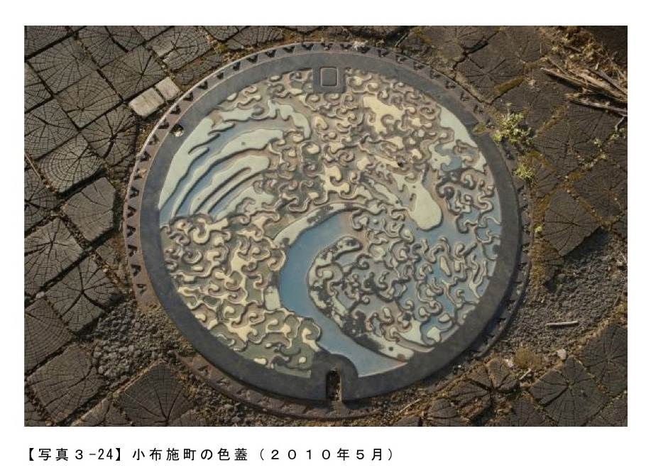
そう皆様もうおわかりですね。このタッチは葛飾北斎のタッチです。
小布施町は長野県の北東にある町で栗が有名な観光地ですので、てっきり栗がデザインされているのかと思っていたのですが、葛飾北斎の「怒涛図の男浪」が描かれていました。
北斎はその生涯の中でパトロンあった豪商・高井鴻山の住む小布施に訪れており、その際に見事な天井画を描いています。その天井画はとても86歳で書かれたとは思えない迫力です。
まさか百数十年後に地面に自分の絵が飾られるとは思ってはいなかったでしょうが、その迫力のあるデザインの蓋は小布施の地を彩っているのです。
今回ご紹介した４つの蓋......様々な歴史や、事実などがデザインされていました。
もちろん他の土地のマンホール蓋も、デザインされたそれぞれの理由があります。
蓋から見えてくる地元の歴史や誇り、そして想いを考えながら蓋を鑑賞する。そんな想像が蓋探索の楽しみをさらに広げてくれるのです。
【写真３‐20】 広島市の蓋（２０１０年９月）
【写真３‐21】 広島市の色蓋（２００９年６月）
【写真３‐22】 福井市の色蓋（２００８年10月）
【写真３‐23】 昭島市の色蓋（２０１０年６月）
【写真３‐24】 小布施町の色蓋（２０１０年５月）
５ 美は細部にやどる！ マンホール蓋に描かれた美しい世界
さて今回は、「みずかん」（滋賀県立水環境科学館）に展示されていた素晴らしいマンホール蓋達のディテールをご紹介していきましょう。
小布施町は長野県の北東にある町で栗が有名な観光地ですので、てっきり栗がデザインされているのかと思っていたのですが、葛飾北斎の「怒涛図の男浪」が描かれていました。
北斎はその生涯の中でパトロンあった豪商・高井鴻山の住む小布施に訪れており、その際に見事な天井画を描いています。その天井画はとても86歳で書かれたとは思えない迫力です。
まさか百数十年後に地面に自分の絵が飾られるとは思ってはいなかったでしょうが、その迫力のあるデザインの蓋は小布施の地を彩っているのです。
今回ご紹介した４つの蓋......様々な歴史や、事実などがデザインされていました。
もちろん他の土地のマンホール蓋も、デザインされたそれぞれの理由があります。
蓋から見えてくる地元の歴史や誇り、そして想いを考えながら蓋を鑑賞する。そんな想像が蓋探索の楽しみをさらに広げてくれるのです。
【写真３‐20】 広島市の蓋（２０１０年９月）
【写真３‐21】 広島市の色蓋（２００９年６月）
【写真３‐22】 福井市の色蓋（２００８年10月）
【写真３‐23】 昭島市の色蓋（２０１０年６月）
【写真３‐24】 小布施町の色蓋（２０１０年５月）
５ 美は細部にやどる！ マンホール蓋に描かれた美しい世界
さて今回は、「みずかん」（滋賀県立水環境科学館）に展示されていた素晴らしいマンホール蓋達のディテールをご紹介していきましょう。
想像以上にカラフルな「みずかん」のマンホール蓋達
まずは、外人受けしそうな蓋からご紹介です。
まずは、外人受けしそうな蓋からご紹介です。
忍者が走りながら手裏剣を投げる瞬間を切りとった躍動感あふれるデザインです。ハードなイメージのある忍者ですが、シンメトリーに配置された忍び装束の忍者、こちらに向かって投げられたような手裏剣、そして「ツツジ」がポップな色づかいで、なんだかファンシーな感じに仕上がっています。
日本好きな外人の方がＴシャツにしちゃいそうな蓋ですね。もちろんこの蓋は甲賀市（旧甲賀町）の蓋です。
全体像は、こちら
日本好きな外人の方がＴシャツにしちゃいそうな蓋ですね。もちろんこの蓋は甲賀市（旧甲賀町）の蓋です。
全体像は、こちら
次は、豊郷町の蓋です。
「江州音頭を踊る女性」と町の花である「ツツジ」がデザインされています。江州音頭とは、滋賀県を中心に盆踊りに用いられる音頭で、発祥の地の一つが豊郷町とされています。
シンプルな線で優雅に踊る女性を表現しているのは見事としかいいようがありません。たまたまだと思いますが、凹凸で女性に影ができており、まるで夏祭りの灯りに照らされ踊り続けているようで、今にも江州音頭が聞こえてきそうです。
またこの写真ではうつっていませんが、ツツジの外側が提灯なのもポイントが高いです。全体像は、こちら
シンプルな線で優雅に踊る女性を表現しているのは見事としかいいようがありません。たまたまだと思いますが、凹凸で女性に影ができており、まるで夏祭りの灯りに照らされ踊り続けているようで、今にも江州音頭が聞こえてきそうです。
またこの写真ではうつっていませんが、ツツジの外側が提灯なのもポイントが高いです。全体像は、こちら
さてお次は、高島市（旧高島町）の蓋です。
だれがどう見ても、ガリヴァー旅行記にでてくるレミュエル・ガリヴァーですね......。まわりを囲っているのは、町の木の「松」と町の花の「菊」のようです。わからなかったのは、なぜ「ガリヴァー」なのか？
てっきり、姉妹都市ネタだと思ったら、「冒険とチャレンジ」をテーマにしたガリバーチャレンジタウンという構想が旧高島町にあったことからきている様子です。「ガリバー青少年旅行村」という「ガリバー気分が味わえる、おとぎの国のキャンプ場」があるみたいですので、がぜん行ってみたくなりました。
全体像は、こちら
てっきり、姉妹都市ネタだと思ったら、「冒険とチャレンジ」をテーマにしたガリバーチャレンジタウンという構想が旧高島町にあったことからきている様子です。「ガリバー青少年旅行村」という「ガリバー気分が味わえる、おとぎの国のキャンプ場」があるみたいですので、がぜん行ってみたくなりました。
全体像は、こちら
さてどんどん行きましょう。次は高島市（旧安曇川町）の蓋です。
今度は扇子です。正確には、「扇骨」をデザインしたもののようですね。
旧安曇川町は三百年以上の伝統を誇る竹の扇骨産地と知られているそうで、全国生産量の90％がこの地で生産されているそうです。生産された扇骨は、京都等に出荷され仕上げられるそうです。
これは私の推測ですが、あえて鮮やかに色づけされた扇子ではなく、「扇骨」を目立たせるよう白でまとめているのは、扇骨作りへのプライドが表現されているように感じます。
全体像は、こちら
旧安曇川町は三百年以上の伝統を誇る竹の扇骨産地と知られているそうで、全国生産量の90％がこの地で生産されているそうです。生産された扇骨は、京都等に出荷され仕上げられるそうです。
これは私の推測ですが、あえて鮮やかに色づけされた扇子ではなく、「扇骨」を目立たせるよう白でまとめているのは、扇骨作りへのプライドが表現されているように感じます。
全体像は、こちら
次は、長浜市（旧湖北町）の蓋です。
琵琶湖の水面で羽を広げている２羽の「コハクチョウ」と鮮やかな「サルビア」の花が描かれています。大胆に象徴化された「コハクチョウ」が優雅で美しい一蓋です。
全体像は、こちら
全体像は、こちら
次は米原町（旧伊吹町）の蓋です。
描かれているのは、「伊吹山」と「うぐいす」、そして町の花である「ツツジ」です。ツツジが黒かったりと、色調がかなり独特な感じですね。全体像をぜひ見ていただきたいのですが、レゲエレコードのジャケットにありそうな素晴らしいデザインです。
（残念なのは撮影時の私の構図センスがたりず......。この蓋の魅力は全体像で見てみて下さい。）
全体像は、こちら
（残念なのは撮影時の私の構図センスがたりず......。この蓋の魅力は全体像で見てみて下さい。）
全体像は、こちら
さて最後は大津市の蓋です。実は「みずかん」がなくなる前にこの蓋を撮りたくて、閉館直前に滋賀まで行ってきたのです。
市の木「山桜」、市の花「叡山すみれ」、市の鳥「ゆりかもめ」を中心に有名な「大津絵」がデザインされている蓋です。「大津絵」とは仏絵から始まった民画で、東海道の一大宿であった大津宿で旅人に土産物・護符として売られていた絵です。
左に艶やかな「藤娘」、右に「鬼の寒念仏」という大津絵界の二大スターの共演と、なんだか絵柄が違う「ゆりかもめ」の愛らしさも魅力的です。
さらに全体像を見ていただくと、琵琶湖と日本三大名橋のひとつである「瀬田の唐橋」も描かれている大津市オールスター的な一蓋になっています。思った以上の素晴らしい蓋で、片道４００ｋｍ以上をかけて見に行った甲斐がありました。
全体像は、こちら
左に艶やかな「藤娘」、右に「鬼の寒念仏」という大津絵界の二大スターの共演と、なんだか絵柄が違う「ゆりかもめ」の愛らしさも魅力的です。
さらに全体像を見ていただくと、琵琶湖と日本三大名橋のひとつである「瀬田の唐橋」も描かれている大津市オールスター的な一蓋になっています。思った以上の素晴らしい蓋で、片道４００ｋｍ以上をかけて見に行った甲斐がありました。
全体像は、こちら
マンホール蓋の上の小宇宙
今回はあえて、全体像ではなく、細部を中心にご紹介させていただきました。どれも細かいところまで、素晴らしい仕事がされた蓋達です。その繊細なタッチや大胆なデザイン、そして鮮やかな色づかいは、マンホール蓋の上に一つの世界を描ききっています。使い古された言い方ですが、マンホール蓋の上に一つの小宇宙があるようですね。
なかなか路上に設置している蓋では、近くによってみることはできませんが、デジイチなどで、拡大して見ることもできますので、機会があったら見てみて下さいね！
【写真３‐25】 旧土山町の蓋（２０１１年３月）
【写真３‐26】 旧甲賀町の色蓋（２０１１年３月）
【写真３‐26‐１】 旧甲賀町の色蓋 全体像
【写真３‐27】 豊郷町の色蓋（２０１１年３月）
【写真３‐27‐１】 豊郷町の色蓋 全体像
【写真３‐28】 旧高島町の色蓋（２０１１年３月）
【写真３‐28‐１】 旧高島町の色蓋 全体像
【写真３‐29】 旧安曇川町の色蓋（２０１１年３月）
【写真３‐29‐１】 旧安曇川町の色蓋 全体像
【写真３‐30】 旧湖北町の色蓋（２０１１年３月）
【写真３‐31】 旧伊吹町の色蓋（２０１１年３月）
【写真３‐31‐１】 旧伊吹町の色蓋 全体像
【写真３‐32】 大津市の色蓋（２０１１年３月）
【写真３‐32‐１】 大津市の色蓋 全体像
６ 目立ってなんぼの消火栓の蓋
さて今回はマンホール蓋界の一大勢力である消火栓の蓋を取り上げてみます。
今回はあえて、全体像ではなく、細部を中心にご紹介させていただきました。どれも細かいところまで、素晴らしい仕事がされた蓋達です。その繊細なタッチや大胆なデザイン、そして鮮やかな色づかいは、マンホール蓋の上に一つの世界を描ききっています。使い古された言い方ですが、マンホール蓋の上に一つの小宇宙があるようですね。
なかなか路上に設置している蓋では、近くによってみることはできませんが、デジイチなどで、拡大して見ることもできますので、機会があったら見てみて下さいね！
【写真３‐25】 旧土山町の蓋（２０１１年３月）
【写真３‐26】 旧甲賀町の色蓋（２０１１年３月）
【写真３‐26‐１】 旧甲賀町の色蓋 全体像
【写真３‐27】 豊郷町の色蓋（２０１１年３月）
【写真３‐27‐１】 豊郷町の色蓋 全体像
【写真３‐28】 旧高島町の色蓋（２０１１年３月）
【写真３‐28‐１】 旧高島町の色蓋 全体像
【写真３‐29】 旧安曇川町の色蓋（２０１１年３月）
【写真３‐29‐１】 旧安曇川町の色蓋 全体像
【写真３‐30】 旧湖北町の色蓋（２０１１年３月）
【写真３‐31】 旧伊吹町の色蓋（２０１１年３月）
【写真３‐31‐１】 旧伊吹町の色蓋 全体像
【写真３‐32】 大津市の色蓋（２０１１年３月）
【写真３‐32‐１】 大津市の色蓋 全体像
６ 目立ってなんぼの消火栓の蓋
さて今回はマンホール蓋界の一大勢力である消火栓の蓋を取り上げてみます。
なぜ消火栓蓋の蓋は派手なのか？
消火栓は、放水ホースと接続し上水道の水を使って火事を消火するための重要な設備です。
屋外に設置されている地下式消火栓や、地上に管をたてたタイプの地上式消火栓があります。
消火栓は、放水ホースと接続し上水道の水を使って火事を消火するための重要な設備です。
屋外に設置されている地下式消火栓や、地上に管をたてたタイプの地上式消火栓があります。
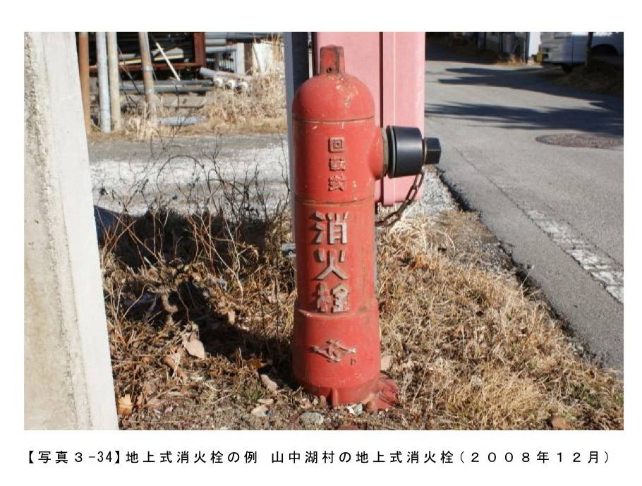
地下式消火栓の蓋は、その特徴の一つとして、色に特徴があるのです。
水道関係のマンホールの蓋は基本は色なしで、一部の蓋で色がついているのが原則ですが、消火栓の蓋は基本は色つきで、まれに色なしの蓋があるんです。
特にオレンジと赤色の派手なデザインの物が多く遠くからでもわかります。蓋が派手なだけではすまず、周りを線で囲んでいることも多いですね。理由は簡単で目立つ必要があるのです。
水道関係のマンホールの蓋は基本は色なしで、一部の蓋で色がついているのが原則ですが、消火栓の蓋は基本は色つきで、まれに色なしの蓋があるんです。
特にオレンジと赤色の派手なデザインの物が多く遠くからでもわかります。蓋が派手なだけではすまず、周りを線で囲んでいることも多いですね。理由は簡単で目立つ必要があるのです。
その形状から上にものを置けない地上式消火栓と違い、自動車や物を置かれないように、その存在をだれが見ても見落とさないように地面に誇示しているのです。
デザインも豊富です！
水道関係の蓋と同じように、消火栓の蓋も様々なデザインがあります。ただし、あまりこっていない自治体も多く、違うのは市町村章だけという蓋も多いんです。
まずはこの蓋をみていただきましょう。
デザインも豊富です！
水道関係の蓋と同じように、消火栓の蓋も様々なデザインがあります。ただし、あまりこっていない自治体も多く、違うのは市町村章だけという蓋も多いんです。
まずはこの蓋をみていただきましょう。
蓋の周りの処理は違いますが、同じデザインですよね......。そう違うのは、右上の市町村章が違うんです。この二つの蓋のベースになるデザインは一緒なのです。
ちなみにこのようなベースデザインは数種類存在しており、日本各地で見ることができるのです。まれにベースデザインをアレンジした物もあるので、この辺の話題はまた記事にしたいと思っています。
さて、もちろんベースデザイン以外にもいっぱいありますので、いくつか紹介していきましょう。
ちなみにこのようなベースデザインは数種類存在しており、日本各地で見ることができるのです。まれにベースデザインをアレンジした物もあるので、この辺の話題はまた記事にしたいと思っています。
さて、もちろんベースデザイン以外にもいっぱいありますので、いくつか紹介していきましょう。
まだまだあります消火栓の蓋
みちくさ中に注意深く地面を見ていると、結構な数の消火栓の蓋を発見するのではないかと思います。消火栓の蓋だけでも相当な種類がありますので、今後定期的にご紹介していきますね。
【写真３‐33】 東京都の消火栓蓋（２０１０年11月）
【写真３‐34】 山中湖村の地上式消火栓（２００８年12月）
【写真３‐35】 宮代町の消火栓の蓋（２０１０年９月）
【写真３‐36】 裾野市の消火栓の蓋（２０１０年９月）
【写真３‐37】 三郷市の消火栓の蓋（２０１０年９月）
【写真３‐38】 川越市の消火栓の蓋（２００８年６月）
【写真３‐39】 高崎市の消火栓の蓋（２００８年５月）
【写真３‐40】 静岡市の消火栓の蓋（２０１０年３月）
【写真３‐41】 勝沼町の消火栓の蓋（２００９年１月）
７ 火の用心！ 路上の消防士からのメッセージ
冬はとても空気が乾燥する季節です。この乾燥は、マンホール蓋撮影には最高で、まさにベストシーズン到来という感じなのですが、乾燥が進めば進むほど怖いのが火事です。ということで前節に引き続き消防関係の蓋を取り上げます。
みちくさ中に注意深く地面を見ていると、結構な数の消火栓の蓋を発見するのではないかと思います。消火栓の蓋だけでも相当な種類がありますので、今後定期的にご紹介していきますね。
【写真３‐33】 東京都の消火栓蓋（２０１０年11月）
【写真３‐34】 山中湖村の地上式消火栓（２００８年12月）
【写真３‐35】 宮代町の消火栓の蓋（２０１０年９月）
【写真３‐36】 裾野市の消火栓の蓋（２０１０年９月）
【写真３‐37】 三郷市の消火栓の蓋（２０１０年９月）
【写真３‐38】 川越市の消火栓の蓋（２００８年６月）
【写真３‐39】 高崎市の消火栓の蓋（２００８年５月）
【写真３‐40】 静岡市の消火栓の蓋（２０１０年３月）
【写真３‐41】 勝沼町の消火栓の蓋（２００９年１月）
７ 火の用心！ 路上の消防士からのメッセージ
冬はとても空気が乾燥する季節です。この乾燥は、マンホール蓋撮影には最高で、まさにベストシーズン到来という感じなのですが、乾燥が進めば進むほど怖いのが火事です。ということで前節に引き続き消防関係の蓋を取り上げます。
路上の消防士
消火栓蓋も相当な種類があり、蓋にいろんなキャラが描かれています。いろものキャラの紹介は、またそのうちに取り上げてみたいと思いますが、今回は消防士さんに注目してみたいと思います。
まずは都内でたまに見かける消火栓から、ご紹介しましょう
消火栓蓋も相当な種類があり、蓋にいろんなキャラが描かれています。いろものキャラの紹介は、またそのうちに取り上げてみたいと思いますが、今回は消防士さんに注目してみたいと思います。
まずは都内でたまに見かける消火栓から、ご紹介しましょう
なんとなく「ちびっ子消防隊！」って感じです。思わず和んでしまいます。
ちびっ子つながりで。
ちびっ子つながりで。
前節でも取り上げた宮代町の蓋です。どことなく、アフロな感じの消防士さんがラテンでいいですね。
次は、ちょっとだけ、年齢があがったのか？ シュールな感じの消防士蓋です。
次は、ちょっとだけ、年齢があがったのか？ シュールな感じの消防士蓋です。
どこを見ているのか？ この構図がなんともいえないですね。もしかして、消火が終わってほっとしたところなのかもしれません。
でもシュールと言えば......。私が知る限り一番シュールな消防士蓋はこれかなぁと思っています。
でもシュールと言えば......。私が知る限り一番シュールな消防士蓋はこれかなぁと思っています。
サイズがかなり小さい蓋なのですが、これを見たときはちょっと衝撃的でしたね。どう見ても消防士だと思いますが、なんだかロボットのような。どことなくロシア・アヴァンギャルド風なデザインで美術の教科書に載りそうな感じです。
次はロボットのような正確な仕事をするゴルゴ13のような消防士の蓋です。
次はロボットのような正確な仕事をするゴルゴ13のような消防士の蓋です。
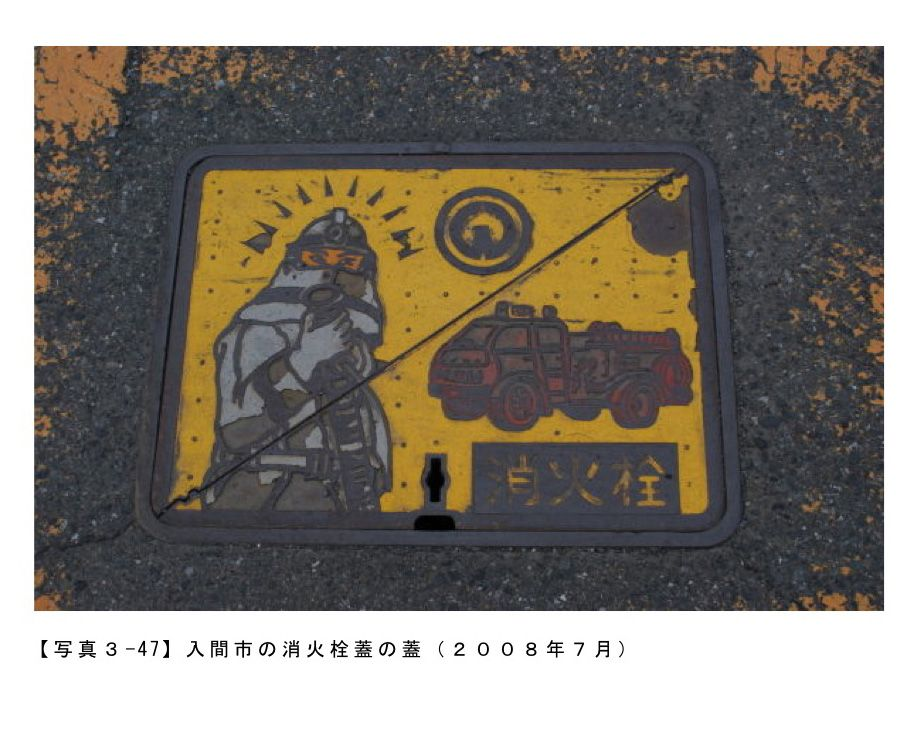
この消防士のするどい眼光！ まるで獲物を狙うゴルゴ１３のようです。きっと背後にたつと放水されるに違いありません。もちろん消火も一発できめてくれるはずです。頭部を見ると後光がさしているし、まさに消防のプロという感じですね。頼りがいがあります......。それにくらべ、後方の消防車の緩さもこの蓋の魅力を高めてくれています。
消防のプロといえば、この蓋もご紹介せねばなりません。
消防のプロといえば、この蓋もご紹介せねばなりません。
職務に忠実な消防士。体を呈して現場を仕切っているのはもちろん、なんと自分の顔まで駐禁マークになってしまっているのです。そう消火栓蓋の大敵、車の路駐を防ぐため、全力でアピールしているのです。まさにプロ中のプロ。思わず敬礼したくなります。
この消防士のメッセージのように、消火栓の近くでは路駐をしないよう気をつけたいものですね。
ということで、最後の消防士蓋はこれでしめましょう。
この消防士のメッセージのように、消火栓の近くでは路駐をしないよう気をつけたいものですね。
ということで、最後の消防士蓋はこれでしめましょう。
コミカル系の消防士が敬礼をしています。どこか誇らしげなところがいい感じです。火災から守ってくれる全国の消防士に敬礼したい気持ちになりますね。
小ネタですが、この所沢市の蓋と武蔵野市の蓋のヘルメットにはそれぞれの市章が入っていますね。
消防士に敬礼！
ということで、空気が乾燥する季節、皆様も火の元には充分ご注意くださいね。
今回ご紹介した消防士蓋以外にも、消防車をメインにした蓋もありますし。今回はトップの写真だけでしたが、防火水槽もいろいろなものがありますので、これまた機会があればご紹介していきたいとおもいます。
【写真３‐42】 松本市の消火栓蓋（２０１０年11月）
【写真３‐43】 東京23区の消火栓の蓋（２００９年２月）
【写真３‐44】 宮代町の消火栓の蓋（２０１０年９月）
【写真３‐45】 川越市の消火栓の蓋（２００８年６月）
【写真３‐46】 広島市の消火栓の蓋（２０１０年６月）
【写真３‐47】 入間市の消火栓蓋の蓋（２００８年７月）
【写真３‐48】 武蔵野市の消火栓の蓋（２００９年４月）
【写真３‐49】 所沢市の消火栓の蓋（２００９年４月）
８ 色気はないけど魅せる蓋
さて今回は、色なしのマンホール蓋の世界にご案内したいと思います。今までご紹介してきたカラーのマンホール蓋と比べると一見地味なのですが、これまた楽しい世界なんです。
小ネタですが、この所沢市の蓋と武蔵野市の蓋のヘルメットにはそれぞれの市章が入っていますね。
消防士に敬礼！
ということで、空気が乾燥する季節、皆様も火の元には充分ご注意くださいね。
今回ご紹介した消防士蓋以外にも、消防車をメインにした蓋もありますし。今回はトップの写真だけでしたが、防火水槽もいろいろなものがありますので、これまた機会があればご紹介していきたいとおもいます。
【写真３‐42】 松本市の消火栓蓋（２０１０年11月）
【写真３‐43】 東京23区の消火栓の蓋（２００９年２月）
【写真３‐44】 宮代町の消火栓の蓋（２０１０年９月）
【写真３‐45】 川越市の消火栓の蓋（２００８年６月）
【写真３‐46】 広島市の消火栓の蓋（２０１０年６月）
【写真３‐47】 入間市の消火栓蓋の蓋（２００８年７月）
【写真３‐48】 武蔵野市の消火栓の蓋（２００９年４月）
【写真３‐49】 所沢市の消火栓の蓋（２００９年４月）
８ 色気はないけど魅せる蓋
さて今回は、色なしのマンホール蓋の世界にご案内したいと思います。今までご紹介してきたカラーのマンホール蓋と比べると一見地味なのですが、これまた楽しい世界なんです。
色気は無いけど、魅せるものがある
前節までは、意識して色つきの蓋をご紹介してきました。カラフルな彩色はマンホール蓋の魅力を倍増させますが、当然コストの関係でそうそう多くは配置されません。そう日本全国に多数あるマンホールの蓋のほとんどが色なしの蓋なんです。そんな色なしの蓋も何かの偶然で、カラー蓋以上の魅力を発揮することがあるんです。
まずはご紹介していきましょう。
前節までは、意識して色つきの蓋をご紹介してきました。カラフルな彩色はマンホール蓋の魅力を倍増させますが、当然コストの関係でそうそう多くは配置されません。そう日本全国に多数あるマンホールの蓋のほとんどが色なしの蓋なんです。そんな色なしの蓋も何かの偶然で、カラー蓋以上の魅力を発揮することがあるんです。
まずはご紹介していきましょう。
この蓋には、複数のカラーバージョンがあるのですが、これは通常蓋です。にもかかわらず見事な２トーンです。
なぜ２トーンなのかというと、へこんでいる部分に砂があるからなんです。
なぜ２トーンなのかというと、へこんでいる部分に砂があるからなんです。
この砂があることによって凸部の部分がさらに浮き上がってくるのです。このパターンを砂パターンと名付けたいと思います。
なぜこんなに砂があるのかが謎なのですが、もしかしたらこの蓋が配置されている道路の工事が終わったばかりで、新品の蓋であったのがヒントになるかもしれません。その状況から仮説をたてると、工事中に何らかの原因で砂が蓋の上にばらまかれたのではないかと思います。
さて次は乾燥パターンです。
冬になるととても空気が乾燥しますので、そのときによく見られるパターンです。
なぜこんなに砂があるのかが謎なのですが、もしかしたらこの蓋が配置されている道路の工事が終わったばかりで、新品の蓋であったのがヒントになるかもしれません。その状況から仮説をたてると、工事中に何らかの原因で砂が蓋の上にばらまかれたのではないかと思います。
さて次は乾燥パターンです。
冬になるととても空気が乾燥しますので、そのときによく見られるパターンです。
すばらしい乾燥具合で、ユーモラスな魚が配置されたデザインが引き立っています。
カラー蓋の方も色合いが綺麗な蓋なのですが、この乾いた蓋の魅力も捨てがたいですね。
お次も乾燥パターンですね。
カラー蓋の方も色合いが綺麗な蓋なのですが、この乾いた蓋の魅力も捨てがたいですね。
お次も乾燥パターンですね。
こちらはつくば市の蓋です。筑波山にスペースシャトルと土星？ がデザインされたＳＦチックな蓋です。カラー版は空が黄色というかなり色彩感覚がユニークな蓋なので、この蓋の方が自然に感じるかもしれません。
お次は錆パターンです。海辺の蓋に見られます。
お次は錆パターンです。海辺の蓋に見られます。
今は市町村合併で消滅し、南城市になってしまった知念村の蓋です。
水平線に消えそうな太陽......。空と海が真っ赤に染まっていく瞬間を錆がうまく表現してくれています。デザインした人が錆ができることを予想してデザインされていたりするとすごいことになりますね。
次は、雨が降った後の蓋です。
水平線に消えそうな太陽......。空と海が真っ赤に染まっていく瞬間を錆がうまく表現してくれています。デザインした人が錆ができることを予想してデザインされていたりするとすごいことになりますね。
次は、雨が降った後の蓋です。
三隅川の名物の鵜飼いがデザインされた蓋です。
通常は雨が降った後の蓋は撮影しないのですが、この蓋は別でした。見事にへこんでいる部分にだけ水がのこり、凸部は乾いていたのです。そのおかげで見事なコントラストで鵜飼い漁のシーンが浮かびあがりました。
ちょっととぼけた感じの鵜飼いや鵜が何ともいい感じを醸し出していますね。
色なし蓋も奥深い
ということで「砂」、「乾き」、「さび」、「雨」の４つのパターンを見てみました。遭遇する可能性が高いのは、やはり「乾き」のパターンです。乾燥した日が続いたら皆様も蓋探しのみちくさに出かけてみて下さい。きっとこんな笑顔の蓋がまっているはずです。
通常は雨が降った後の蓋は撮影しないのですが、この蓋は別でした。見事にへこんでいる部分にだけ水がのこり、凸部は乾いていたのです。そのおかげで見事なコントラストで鵜飼い漁のシーンが浮かびあがりました。
ちょっととぼけた感じの鵜飼いや鵜が何ともいい感じを醸し出していますね。
色なし蓋も奥深い
ということで「砂」、「乾き」、「さび」、「雨」の４つのパターンを見てみました。遭遇する可能性が高いのは、やはり「乾き」のパターンです。乾燥した日が続いたら皆様も蓋探しのみちくさに出かけてみて下さい。きっとこんな笑顔の蓋がまっているはずです。
【写真３‐50】 八王子の蓋（２０１０年12月）
【写真３‐51】 八王子の蓋（２０１０年12月）
【写真３‐52】 八王子の蓋（２０１０年12月）
【写真３‐53】 小平市の蓋（２００９年１月）
【写真３‐54】 つくば市の蓋（２０１０年１月）
【写真３‐55】 知念村の蓋（２０１０年12月）
【写真３‐56】 日田市の蓋（２０１０年12月）
【写真３‐57】 松茂町の蓋（２００８年３月）
９ 男は黙ってＪＩＳマンホール!! めちゃ地味なＪＩＳ型マンホールの世界
さて、今回はＪＩＳ型マンホール蓋を取り上げてみたいと思います。
【写真３‐51】 八王子の蓋（２０１０年12月）
【写真３‐52】 八王子の蓋（２０１０年12月）
【写真３‐53】 小平市の蓋（２００９年１月）
【写真３‐54】 つくば市の蓋（２０１０年１月）
【写真３‐55】 知念村の蓋（２０１０年12月）
【写真３‐56】 日田市の蓋（２０１０年12月）
【写真３‐57】 松茂町の蓋（２００８年３月）
９ 男は黙ってＪＩＳマンホール!! めちゃ地味なＪＩＳ型マンホールの世界
さて、今回はＪＩＳ型マンホール蓋を取り上げてみたいと思います。
ＪＩＳ型マンホール蓋とは
マンホール蓋と言われて、ほとんどの人が思い浮かべるのは、このＪＩＳ規格模様のマンホール蓋（以下ＪＩＳ型マンホール）の派生系ではないかと思います。
マンホール蓋と言われて、ほとんどの人が思い浮かべるのは、このＪＩＳ規格模様のマンホール蓋（以下ＪＩＳ型マンホール）の派生系ではないかと思います。
うっかり逆向きに撮ってしまいましたが、私の中ではザ・マンホール蓋、マンホール蓋の中のマンホール蓋。そう「キング・オブ・マンホール」でしょうか（といっても都内在中の人限定ですが）。マンホーラーになるまでは、この蓋しかないと思い込んでいました。
そう、これが、典型的なＪＩＳ型マンホールです。
今まで私の記事でご紹介してきた絵柄が入っているマンホール蓋とは違い、地味ではありますが日本中どこにでもある蓋です。数も多く日本のマンホール蓋のデファクトスタンダードと言っても過言ではありません。
ではそもそもＪＩＳ型マンホールとは何なんでしょうか？
ＪＩＳはもちろん日本工業規格の事ですが、この標準規格で１９５８年にＪＩＳ Ａ ５５０６「下水道マンホールふた」として後述する東京市型をベースとしたマンホール蓋の規格が決められたのです。
日本工業標準調査会のホームページＪＩＳＡ５５０６
http://www.jisc.go.jp/app/pager?id=5048
この規格の参考としてつけられた図面に描かれたのがＪＩＳ型マンホールと呼ばれているものなんです。
話は脱線しますが、この規格を決めた人達が偉かった、規格を定めた図面の備考に「模様、紋章座及びガス抜き孔は、参考として示したもので規格の一部ではない。」と記載してくれたのです。そう、この一文のおかげで日本には魅力的なマンホール蓋があふれることになったのです。
では話を元に戻して、いくつかＪＩＳ型マンホールを見てみていきましょう。
そう、これが、典型的なＪＩＳ型マンホールです。
今まで私の記事でご紹介してきた絵柄が入っているマンホール蓋とは違い、地味ではありますが日本中どこにでもある蓋です。数も多く日本のマンホール蓋のデファクトスタンダードと言っても過言ではありません。
ではそもそもＪＩＳ型マンホールとは何なんでしょうか？
ＪＩＳはもちろん日本工業規格の事ですが、この標準規格で１９５８年にＪＩＳ Ａ ５５０６「下水道マンホールふた」として後述する東京市型をベースとしたマンホール蓋の規格が決められたのです。
日本工業標準調査会のホームページＪＩＳＡ５５０６
http://www.jisc.go.jp/app/pager?id=5048
この規格の参考としてつけられた図面に描かれたのがＪＩＳ型マンホールと呼ばれているものなんです。
話は脱線しますが、この規格を決めた人達が偉かった、規格を定めた図面の備考に「模様、紋章座及びガス抜き孔は、参考として示したもので規格の一部ではない。」と記載してくれたのです。そう、この一文のおかげで日本には魅力的なマンホール蓋があふれることになったのです。
では話を元に戻して、いくつかＪＩＳ型マンホールを見てみていきましょう。
大きな鎌倉の文字が印象的ですね。
そうお気づきですね、基本的なデザインはほぼ一緒で、真ん中の市町村章の部分や、外帯と内帯の始点、書かれた文字が違うのです。
これらがＪＩＳ型マンホール蓋なんです（厳密には、外枠の90度と２７０度の部分を見ると鎌倉市、相模原市の蓋はＪＩＳ型マンホールにとても近いが真のＪＩＳ型マンホールとはいえないという見方もあります）。
ＪＩＳ型マンホール蓋にそっくりな蓋達
おや、「うちの地区のマンホール蓋は、似ているけど何かが違う!?」そう思われた人も多いのではないかと思います。
日本の各地には「東京市型」をベースに規格されたＪＩＳ型マンホールによく似た、「名古屋市型」と呼ばれるものも広く設置されているのです。
「東京市型」と「名古屋市型」は１９８４年に販売された林丈二さんの「マンホールのふた 日本篇」（サイエンティスト社）で提唱された分類です。
時代は日本に下水道が整備されはじめた明治後期から大正初期頃にさかのぼりますが、当時の東京市には東京市下水改良事務所、名古屋市には名古屋市水道敷設事務所という組織があったそうです。「東京市型」は東京市下水改良事務所の仕様に基づいて各地に広がっていった蓋を、「名古屋市型」は名古屋市水道敷設事務所を中心に広がっていった蓋のことを指しているのです。
では、「名古屋市型」をご紹介します。
そうお気づきですね、基本的なデザインはほぼ一緒で、真ん中の市町村章の部分や、外帯と内帯の始点、書かれた文字が違うのです。
これらがＪＩＳ型マンホール蓋なんです（厳密には、外枠の90度と２７０度の部分を見ると鎌倉市、相模原市の蓋はＪＩＳ型マンホールにとても近いが真のＪＩＳ型マンホールとはいえないという見方もあります）。
ＪＩＳ型マンホール蓋にそっくりな蓋達
おや、「うちの地区のマンホール蓋は、似ているけど何かが違う!?」そう思われた人も多いのではないかと思います。
日本の各地には「東京市型」をベースに規格されたＪＩＳ型マンホールによく似た、「名古屋市型」と呼ばれるものも広く設置されているのです。
「東京市型」と「名古屋市型」は１９８４年に販売された林丈二さんの「マンホールのふた 日本篇」（サイエンティスト社）で提唱された分類です。
時代は日本に下水道が整備されはじめた明治後期から大正初期頃にさかのぼりますが、当時の東京市には東京市下水改良事務所、名古屋市には名古屋市水道敷設事務所という組織があったそうです。「東京市型」は東京市下水改良事務所の仕様に基づいて各地に広がっていった蓋を、「名古屋市型」は名古屋市水道敷設事務所を中心に広がっていった蓋のことを指しているのです。
では、「名古屋市型」をご紹介します。
名古屋市の市章は、八をデザインした市章ですので、中央は名古屋市の市章ではありませんが、これが典型的な名古屋市型マンホール蓋です。東京市型と同じ「二つの帯」と「扇形」そして「円」で構成されるデザインですが、後述するように明らかに違う点があります。
中央に伊東市の市章とその中に、下水をイメージしたデザインが描かれています。
この伊東市なんですが、なんと東京市型のマンホールのふた 日本篇型マンホールもありました。
この伊東市なんですが、なんと東京市型のマンホールのふた 日本篇型マンホールもありました。
この伊東市の蓋で見比べて見ながら、それぞれの特徴をまとめてみます。
東京市型：内帯８分割（半円で４分割）、外帯14分割（半円で７分割）の扇形で構成 扇の中T字型の文様が入っている。
名古屋市型：内帯８分割（半円で４分割）、外帯12分割（半円で６分割）の扇形で構成。扇の中には、T字型の文様は無い。
「東京市型」と「名古屋市型」には含まれない蓋
実は上記の分類に含まれない蓋も発見されています。これらは「東京市型」や「名古屋市型」のバリエーションと考えてもよいのではないかと思います。
東京市型：内帯８分割（半円で４分割）、外帯14分割（半円で７分割）の扇形で構成 扇の中T字型の文様が入っている。
名古屋市型：内帯８分割（半円で４分割）、外帯12分割（半円で６分割）の扇形で構成。扇の中には、T字型の文様は無い。
「東京市型」と「名古屋市型」には含まれない蓋
実は上記の分類に含まれない蓋も発見されています。これらは「東京市型」や「名古屋市型」のバリエーションと考えてもよいのではないかと思います。
扇の中は東京市型に似ているが、よく見ると内帯は形も違う。そして数も独特。
一見すると名古屋市型かと思いきや、外帯の扇の数は半円で８個となってオリジナル度が高いですね。
これも名古屋市型かと思いきや、内帯の数がちがいます。しかも、穴があるべき場所のところに、金具がついていますね。不明ですがこれで引っ張るのかもしれません。
と、ここまでマンホールのふた 日本篇型マンホール蓋の世界を見てきましたが、一見すると似ている蓋も、よく調べていくとそれぞれに特徴があり、奥が深い世界です。また遠く離れた市町村でもデザインの相似性が見られるなど、離れた土地の関連性を想像することも楽しめます。
さらにご興味のある方は、ＪＩＳ型マンホール研究の第一人者ｙａｎａｐｏｎｇさんがサイト「街を読む」（ http://sites.google.com/site/machiyomi/tetsubuta）で、詳細に考察されていますので、ぜひ覗いてみて下さい。
参考
マンホール図鑑 マンホール研究所 ＪＩＳ規格模様って何？
http://www.jgma.gr.jp/mame/history/main.htm">
日本グランドマンホール工業会 下水道用マンホールふたの歴史
http://www.jgma.gr.jp/mame/history/main.htm
【写真３‐58】 東京23区のマンホール蓋（２００９年８月）
【写真３‐59】 東京23区のマンホール蓋（２００９年８月）
【写真３‐60】 諏訪市の蓋（２０１０年５月）
【写真３‐61】 相模原市の蓋（２００９年８月）
【写真３‐62】 瑞穂町の蓋（２０１０年１月）
【写真３‐63】 鎌倉市の蓋（２００８年４月）
【写真３‐64】 名古屋市の蓋（２０１１年２月）
【写真３‐65】 伊東市の蓋 名古屋市型（２００９年３月）
【写真３‐66】 伊東市の蓋 東京市型（２００９年３月）
【写真３‐67】 金沢市の蓋 （２０１０年５月）
【写真３‐68】 奈良市の蓋（２０１１年９月）
【写真３‐69】 長崎市の蓋（２００７年10月）
10 マンホール蓋でお花見を！
春の暖かい陽気の中、みんなで花見をすることは何よりの楽しみですね。
今回は一年中いつでも満開の桜の花が見られる桜のマンホール蓋をご紹介します。
と、ここまでマンホールのふた 日本篇型マンホール蓋の世界を見てきましたが、一見すると似ている蓋も、よく調べていくとそれぞれに特徴があり、奥が深い世界です。また遠く離れた市町村でもデザインの相似性が見られるなど、離れた土地の関連性を想像することも楽しめます。
さらにご興味のある方は、ＪＩＳ型マンホール研究の第一人者ｙａｎａｐｏｎｇさんがサイト「街を読む」（ http://sites.google.com/site/machiyomi/tetsubuta）で、詳細に考察されていますので、ぜひ覗いてみて下さい。
参考
マンホール図鑑 マンホール研究所 ＪＩＳ規格模様って何？
http://www.jgma.gr.jp/mame/history/main.htm">
日本グランドマンホール工業会 下水道用マンホールふたの歴史
http://www.jgma.gr.jp/mame/history/main.htm
【写真３‐58】 東京23区のマンホール蓋（２００９年８月）
【写真３‐59】 東京23区のマンホール蓋（２００９年８月）
【写真３‐60】 諏訪市の蓋（２０１０年５月）
【写真３‐61】 相模原市の蓋（２００９年８月）
【写真３‐62】 瑞穂町の蓋（２０１０年１月）
【写真３‐63】 鎌倉市の蓋（２００８年４月）
【写真３‐64】 名古屋市の蓋（２０１１年２月）
【写真３‐65】 伊東市の蓋 名古屋市型（２００９年３月）
【写真３‐66】 伊東市の蓋 東京市型（２００９年３月）
【写真３‐67】 金沢市の蓋 （２０１０年５月）
【写真３‐68】 奈良市の蓋（２０１１年９月）
【写真３‐69】 長崎市の蓋（２００７年10月）
10 マンホール蓋でお花見を！
春の暖かい陽気の中、みんなで花見をすることは何よりの楽しみですね。
今回は一年中いつでも満開の桜の花が見られる桜のマンホール蓋をご紹介します。
日本各地の桜が描かれているマンホール蓋達
マンホール蓋には、「市の花」が描かれていることが多いので、当然日本全国に桜のマンホール蓋も多数存在します。さっそくいろいろご紹介していきましょう。
まず一枚目は、桜の全体が描かれている蓋です。
マンホール蓋には、「市の花」が描かれていることが多いので、当然日本全国に桜のマンホール蓋も多数存在します。さっそくいろいろご紹介していきましょう。
まず一枚目は、桜の全体が描かれている蓋です。
こちらには、蓋にわざわざ「さくら」と書かれています。市の名前「こがねい」が姓、「さくら」が名としてマンホーラーの間では、「小金井さくら」ちゃんの蓋として、人気の蓋ですね。そのうち誰かが擬人化キャラを作ってくれるかも！。
次は桜の花びらをメインにしたデザインです。
次は桜の花びらをメインにしたデザインです。
こちらは、花びらを中心としたデザインです、市の花「しばざくら」が描かれています。
次は、風景の中に溶け込む桜です。
次は、風景の中に溶け込む桜です。
大阪市下水道事業着手百周年記念で公募されたデザイン。大阪城をバックに市の花桜が咲いています。
市の花は「卯の花」、市の木は「欅」なのですが、左上のピンクの木が桜を表しています。これは、景勝地である摂津峡の春を表しているからです。
高槻市グラウンドマンホール性能規定書（PDF：970.2KB）の15 Ｐ ふたの表面模様（カラーデザイン）（2012/03/25現在）に規定されています。
（ http://www.city.takatsuki.osaka.jp/ikkrwebBrowse/material/files/group/73/07seinoukiteisyo.pdf）
高槻市グラウンドマンホール性能規定書（PDF：970.2KB）の15 Ｐ ふたの表面模様（カラーデザイン）（2012/03/25現在）に規定されています。
（ http://www.city.takatsuki.osaka.jp/ikkrwebBrowse/material/files/group/73/07seinoukiteisyo.pdf）
奈良公園の鹿と八重桜が描かれています。人気の蓋でTwitterでもよくつぶやかれているのを見かけます。
とっても芸術的な蓋で、私も好きな蓋の一つなのですが、この蓋にまつわるいい話があるのです。興味がある方はtogetter のまとめ #manhotalk お父さんへのプレゼントに奈良市のマンホール蓋!?
（ http://togetter.com/li/103121）を見てみて下さい。あまりのクオリティの高さといい話に感動してしまいます。
とっても芸術的な蓋で、私も好きな蓋の一つなのですが、この蓋にまつわるいい話があるのです。興味がある方はtogetter のまとめ #manhotalk お父さんへのプレゼントに奈良市のマンホール蓋!?
（ http://togetter.com/li/103121）を見てみて下さい。あまりのクオリティの高さといい話に感動してしまいます。
荒川の中には、熊谷でしか生息されていないと言われている県の魚「ムサシトミヨ」、そして背景には荒川で行われる代表的なまつり「さくらまつり」「花火大会」が配置された賑やかな蓋です。こちらも市役所のホームページ（ http://www.city.kumagaya.lg.jp/kurashi/kankyo_sumai/gesuidou/manhorusyoukai.html）に詳細なデザインがのっています。
羽村市を流れる多摩川の堰。羽村取水堰と市の花「さくら」をデザインした蓋。デザインはとても好きなのですが、色あいがあまり桜っぽくないと感じるのは私だけでしょうか。
さて最後の蓋をご紹介します。この蓋は桜と並ぶぐらい日本人の心にある富士山とのコラボレーション蓋です。
さて最後の蓋をご紹介します。この蓋は桜と並ぶぐらい日本人の心にある富士山とのコラボレーション蓋です。
壮大な富士山をバックに、市の花「富士桜」、市の木「白樺」、市の鳥「アカゲラ」が描かれています。以前ご紹介した富士山の描かれているマンホール蓋では丸いバージョンをご紹介しました。富士山と桜の組み合わせは、やはり絵になるようでこの富士吉田市の蓋の他にも先の記事では、御殿場市や大月市の蓋もご紹介しています。
日本全国の桜のマンホール蓋達
いろんな桜のマンホール蓋を見てきました。他にも日本全国には多数の桜が描かれているマンホール蓋が存在します。古来より日本人は、長い冬を耐えて華やかに咲く桜の花を愛し、春の訪れを満開の桜の下で鑑賞する事を楽しみにしてきました（花見の風習が広まったのは、江戸時代からといわれています）。
毎年各地で花見がおこなわれると思います、その際にはいっしょに桜のマンホール蓋も見てみて下さいね。きっと楽しめると思います。
【写真３‐70】 大月市の色蓋（２０１０年12月）
【写真３‐71】 小金井市の色蓋（２００９年４月）
【写真３‐72】 柏市の色蓋（２０１１年７月）
【写真３‐73】 大阪市の色蓋（２０１１年８月）
【写真３‐74】 高槻市の色蓋（２０１２年２月）
【写真３‐75】 奈良市の色蓋（２０１１年９月）
【写真３‐76】 熊谷市の色蓋（２０１２年１月）
【写真３‐77】 羽村市の色蓋（２０１１年８月）
【写真３‐78】 羽村市の色蓋（２０１１年８月）
【写真３‐79】 富士吉田市の色蓋（２０１０年12月）
日本全国の桜のマンホール蓋達
いろんな桜のマンホール蓋を見てきました。他にも日本全国には多数の桜が描かれているマンホール蓋が存在します。古来より日本人は、長い冬を耐えて華やかに咲く桜の花を愛し、春の訪れを満開の桜の下で鑑賞する事を楽しみにしてきました（花見の風習が広まったのは、江戸時代からといわれています）。
毎年各地で花見がおこなわれると思います、その際にはいっしょに桜のマンホール蓋も見てみて下さいね。きっと楽しめると思います。
【写真３‐70】 大月市の色蓋（２０１０年12月）
【写真３‐71】 小金井市の色蓋（２００９年４月）
【写真３‐72】 柏市の色蓋（２０１１年７月）
【写真３‐73】 大阪市の色蓋（２０１１年８月）
【写真３‐74】 高槻市の色蓋（２０１２年２月）
【写真３‐75】 奈良市の色蓋（２０１１年９月）
【写真３‐76】 熊谷市の色蓋（２０１２年１月）
【写真３‐77】 羽村市の色蓋（２０１１年８月）
【写真３‐78】 羽村市の色蓋（２０１１年８月）
【写真３‐79】 富士吉田市の色蓋（２０１０年12月）
多くの人に知られた坂、はたまた、ひっそりと、土地の人だけが知っている坂。「坂道」には、タモリさんを始め、多くのファンの方がいます。人はなぜ、これほどまでに坂道に惹かれるのでしょうか？ かつて息を切らして坂を上っていった人たち、坂の上から見えたであろう景色に思いを馳せながら、雲本らてさんと一緒に、坂道を踏みしめて歩いてみましょう。町は実に起伏に富んでいます。坂道にも、人生と同じく刻みこまれた歴史があります。人々によって、いつの間にか坂道に名前が付いてしまう理由も見えてくるのではないでしょうか。
著者：雲本らて
１９７３年７月、兵庫県（神戸あたり）生まれ。世田谷区在住。 現在は「東京坂道さんぽ」というブログを運営しながら、坂道観察などを続けています。
■１ 勾配があるだけの普通の道を歩くおもしろみ
ひとたび視点を変えて坂道を眺めてみると街の違った風景が見えてきます。
坂道、というとしんどくて歩くだけでも気苦労が多く、雨の日はころびそうで危ないし、一昔前なら坂道発進でエンストしてちょっとへこんでみたりと、そんなことを想像してしまう人も多いのかもしれませんが、ひとたび視点を変えて坂を眺めてみると街の違った風景が見えてきておもしろいんです。
著者：雲本らて
１９７３年７月、兵庫県（神戸あたり）生まれ。世田谷区在住。 現在は「東京坂道さんぽ」というブログを運営しながら、坂道観察などを続けています。
■１ 勾配があるだけの普通の道を歩くおもしろみ
ひとたび視点を変えて坂道を眺めてみると街の違った風景が見えてきます。
坂道、というとしんどくて歩くだけでも気苦労が多く、雨の日はころびそうで危ないし、一昔前なら坂道発進でエンストしてちょっとへこんでみたりと、そんなことを想像してしまう人も多いのかもしれませんが、ひとたび視点を変えて坂を眺めてみると街の違った風景が見えてきておもしろいんです。
まず【写真４‐１】を見てください。港区で見つけたとある坂道の風景です。ご覧のとおり、かなりの急勾配の坂道です（まわりの建物と高さを比べるなどしてみるとわかりやすいです）。
そして、この坂道の所在地は東京都港区六本木、わかりやすくいえば六本木ヒルズにほど近い場所にあります。六本木の繁華街から徒歩数分の場所にこんな急勾配で長い坂道があるということ自体が驚きなんですが、それに加えて道沿いを木々におおわれた閑静なたたずまいの場所があるというのは、なにか異次元の世界に迷いこんだような気分におちいるほどで、そのゾッとするほどの変化がおもしろいかもしれません。
そして、この坂道の所在地は東京都港区六本木、わかりやすくいえば六本木ヒルズにほど近い場所にあります。六本木の繁華街から徒歩数分の場所にこんな急勾配で長い坂道があるということ自体が驚きなんですが、それに加えて道沿いを木々におおわれた閑静なたたずまいの場所があるというのは、なにか異次元の世界に迷いこんだような気分におちいるほどで、そのゾッとするほどの変化がおもしろいかもしれません。
また、今回の坂道をてくてく歩いていると、途中に上の写真のような木製の立派な坂名の由来を記した案内板が設置してあるのを発見しました【写真４‐２】。ですので、この坂道は「鳥居坂」とよぶそうです（後で調べたところによると、別名で鳥井坂ともいうそうです）。
写真では、ちょっと見にくいかもしれませんので案内板の文章を引用すると"とりいざか 江戸時代のなかばまで、坂の東側に大名鳥居家の屋敷があった。元禄年間（一六八八～一七〇三）ごろ開かれた道である。"と書かれてありました。詳しい史実については置いておくとしても、説明によればこの鳥居坂は１７００年（約３１０年前ですね）にはすでにあったということですから、これまた驚きという感じです。
このように、都内には名前のつけられている坂道がほかにも７００以上あり、そのうちの７割ほどがすでに江戸時代につけられたということだそうで、坂道周辺にはまだまだ僕たちが知らない歴史や物語が埋れているのかもしれません。
写真では、ちょっと見にくいかもしれませんので案内板の文章を引用すると"とりいざか 江戸時代のなかばまで、坂の東側に大名鳥居家の屋敷があった。元禄年間（一六八八～一七〇三）ごろ開かれた道である。"と書かれてありました。詳しい史実については置いておくとしても、説明によればこの鳥居坂は１７００年（約３１０年前ですね）にはすでにあったということですから、これまた驚きという感じです。
このように、都内には名前のつけられている坂道がほかにも７００以上あり、そのうちの７割ほどがすでに江戸時代につけられたということだそうで、坂道周辺にはまだまだ僕たちが知らない歴史や物語が埋れているのかもしれません。
また、坂道歩きをしながら、周辺の景色をぼんやりと眺めるのも坂道散歩の醍醐味のひとつといえるのかもしれないですね。
【写真４‐３】は、坂下の鳥居坂下交差点から、六本木ヒルズのほうを眺めたものです。坂上あたりの落ち着いた雰囲気とは対照的といっていいくらいの近未来的な風景がひろがり、遠目には六本木ヒルズのあの銀色の高層ビルなどがど～んと見えていました。
うまくはいえないですけど、坂道散歩のときは恥ずかしがらず（笑）、まわりをキョロキョロしながらいろんなものを観察してみると、これまたおもしろい発見がいくつも見えてきたりしますので、坂道散歩ではこのキョロキョロするということを忘れないでくださいね。
【写真４‐１】 キョロキョロしてみよう 港区「鳥居坂」
【写真４‐２】 坂道の名前の７割が江戸時代につけられた 港区「鳥居坂」
【写真４‐３】 坂道歩きをしながら、周辺の景色をぼんやり眺めてみよう。 鳥居坂下交差点
■２ ポップな坂道を歩いてみる
ポップな坂道は若者が集まる場所にあることもあれば大人の街にあることも。
東京にある坂道で名前がついているものはたいてい昔から存在していて歴史が古いというようなことを前回ふれましたが、実はそんな坂道ばかりではないというのがこの節のお話です。
【写真４‐３】は、坂下の鳥居坂下交差点から、六本木ヒルズのほうを眺めたものです。坂上あたりの落ち着いた雰囲気とは対照的といっていいくらいの近未来的な風景がひろがり、遠目には六本木ヒルズのあの銀色の高層ビルなどがど～んと見えていました。
うまくはいえないですけど、坂道散歩のときは恥ずかしがらず（笑）、まわりをキョロキョロしながらいろんなものを観察してみると、これまたおもしろい発見がいくつも見えてきたりしますので、坂道散歩ではこのキョロキョロするということを忘れないでくださいね。
【写真４‐１】 キョロキョロしてみよう 港区「鳥居坂」
【写真４‐２】 坂道の名前の７割が江戸時代につけられた 港区「鳥居坂」
【写真４‐３】 坂道歩きをしながら、周辺の景色をぼんやり眺めてみよう。 鳥居坂下交差点
■２ ポップな坂道を歩いてみる
ポップな坂道は若者が集まる場所にあることもあれば大人の街にあることも。
東京にある坂道で名前がついているものはたいてい昔から存在していて歴史が古いというようなことを前回ふれましたが、実はそんな坂道ばかりではないというのがこの節のお話です。
ポップな坂道とは、筆者がかつてに名付けたものですが、これらの坂は若者が集まる場所にあることもあれば大人の街にあることもあります。
そんなポップの匂いのする坂道が多く存在する場所といえば、やっぱり渋谷界隈が一番です。【写真４‐４】もそんな渋谷の繁華街の真ん中にある坂道の一つで、知っている人も多いとは思いますが、「スペイン坂」とよばれています。坂上には東京ＦＭの渋谷スペイン坂スタジオ（＝パルコの建物内にあります）やミニシアター系の映画館などがあり、せまい路地でもある坂道沿いにはポップな広告がいたるところに見られ、若者向けのカラフルな店頭のお店が軒をつらねています。
そんなポップの匂いのする坂道が多く存在する場所といえば、やっぱり渋谷界隈が一番です。【写真４‐４】もそんな渋谷の繁華街の真ん中にある坂道の一つで、知っている人も多いとは思いますが、「スペイン坂」とよばれています。坂上には東京ＦＭの渋谷スペイン坂スタジオ（＝パルコの建物内にあります）やミニシアター系の映画館などがあり、せまい路地でもある坂道沿いにはポップな広告がいたるところに見られ、若者向けのカラフルな店頭のお店が軒をつらねています。
このほかにも渋谷界隈には、「間坂（【写真４‐５】）」や「オルガン坂」といったすこし変わった名前の坂道もいくつかあります。どの坂道もここ数十年のあいだに名付けられた新しいもので、さらにロフトや東急ハンズそしてパルコといった渋谷のイメージづくりに一役買っている大型店が隣接している場所でもあるため、どの坂道も日中の人通りは半端なく多いのも特徴的です（写真では朝いちなので人がほとんどいませんが......）。なので、これらの坂道は渋谷をぶらぶらと歩けば、必ず一度くらいは通る場所といってもいいかもしれません。
そして、渋谷の新興坂道に対して、歴史のある坂道でも偶然ポップな雰囲気の坂道というかそういう通りに成長していったものに宮益坂や道玄坂などがあると思われます。
【写真４‐６】は、道玄坂を坂下（渋谷駅側）から眺めたものです。道玄坂といえば、渋谷の有名な駅前スクランブル交差点あたりからも見ることのできる坂道です。ただ道玄坂は坂下の１０９あたりこそポップな匂いがしますけど、実は坂上にいくほど繁華街度が増す坂道なので、なかなかどうとらえればいいのか判定がむずかしい坂道なのかもしれません。
ちなみに、今回タイトルにもあげたポップという言葉については、"軽妙で洒落ているさま。大衆的で商業性のあるさま。"という辞書に書いてあった意味を参考にしながら、感覚的にそういうポップス調な坂道を自分なりに選んでみただけですので、くれぐれもポップスミュージックとはなんの関係もありませんので、あしからず。
ということで、今回は渋谷界隈にしぼって坂道を選んでみましたが、やっぱりこういう系の坂道は、これからあたらしくできる場合も多々考えられるので、実際に歩いてみずから見つけていくというのがいちばん楽しいのかもしれないですよ。
【写真４‐４】 ポップな匂いのする坂道は渋谷界隈が一番 渋谷区、渋谷スペイン坂
【写真４‐５】 かわった名前の坂道「間坂（はざまさか？ あいだざか？）」 渋谷区、間坂
【写真４‐６】 歴史ある坂道でもポップな雰囲気の坂道、道玄坂 渋谷区、道玄坂
■３ 港区にある高低差２５．７ｍの坂道
ここではタイトルにもあるとおり、高低差２５.７ｍというちょっと数値をきいただけではピンとこない坂道をとりあげてみます。
【写真４‐６】は、道玄坂を坂下（渋谷駅側）から眺めたものです。道玄坂といえば、渋谷の有名な駅前スクランブル交差点あたりからも見ることのできる坂道です。ただ道玄坂は坂下の１０９あたりこそポップな匂いがしますけど、実は坂上にいくほど繁華街度が増す坂道なので、なかなかどうとらえればいいのか判定がむずかしい坂道なのかもしれません。
ちなみに、今回タイトルにもあげたポップという言葉については、"軽妙で洒落ているさま。大衆的で商業性のあるさま。"という辞書に書いてあった意味を参考にしながら、感覚的にそういうポップス調な坂道を自分なりに選んでみただけですので、くれぐれもポップスミュージックとはなんの関係もありませんので、あしからず。
ということで、今回は渋谷界隈にしぼって坂道を選んでみましたが、やっぱりこういう系の坂道は、これからあたらしくできる場合も多々考えられるので、実際に歩いてみずから見つけていくというのがいちばん楽しいのかもしれないですよ。
【写真４‐４】 ポップな匂いのする坂道は渋谷界隈が一番 渋谷区、渋谷スペイン坂
【写真４‐５】 かわった名前の坂道「間坂（はざまさか？ あいだざか？）」 渋谷区、間坂
【写真４‐６】 歴史ある坂道でもポップな雰囲気の坂道、道玄坂 渋谷区、道玄坂
■３ 港区にある高低差２５．７ｍの坂道
ここではタイトルにもあるとおり、高低差２５.７ｍというちょっと数値をきいただけではピンとこない坂道をとりあげてみます。
場所は東京タワーのちょっと北側の港区愛宕１丁目の愛宕山にある坂道です。港区の愛宕山（同名の山もたくさんあります）といえば、頂上には愛宕神社が祀られ、江戸時代から見晴らしのいい名所としても知られている場所で、歌川広重の『名所江戸百景』でも描かれ、当時は東京湾や房総半島までも眺めることができたそうです。ただ現在はビルがじゃましてまわりはなにも見えません。それでも知る人ぞしるというか、東京23区内において天然の山としては最高峰の標高をほこっている山だそうです。
なので、この標高差が２５．７ｍという数値なわけで、写真のちょうど階段下から階段上あたりまでがおそらくそれくらいの高低差になると思われます。
ちなみに、この階段は「出世の石段」とよばれていて、江戸時代に曲垣平九郎なる人物がここを馬で上り下りしたというびっくりエピソードがもととなって呼ばれるようになったそうです。
なので、この標高差が２５．７ｍという数値なわけで、写真のちょうど階段下から階段上あたりまでがおそらくそれくらいの高低差になると思われます。
ちなみに、この階段は「出世の石段」とよばれていて、江戸時代に曲垣平九郎なる人物がここを馬で上り下りしたというびっくりエピソードがもととなって呼ばれるようになったそうです。
そんなわけで、高所恐怖症の人には申し訳ないというしかない【写真４‐８】を二枚目にえらんでみたのですが、こちらは【写真４‐７】の写真同様に愛宕神社の境内にある階段の頂上からの眺めです。
いちおうというか必然というか、この階段は愛宕神社の本殿にいくためのメイン階段（参道）でもあるため「愛宕男坂」という立派な坂名が昔からつけられています。
とにかくありえないくらいの急勾配で長い石段です（案内看板には86段と書いてありました）。
いちおうというか必然というか、この階段は愛宕神社の本殿にいくためのメイン階段（参道）でもあるため「愛宕男坂」という立派な坂名が昔からつけられています。
とにかくありえないくらいの急勾配で長い石段です（案内看板には86段と書いてありました）。
あと、愛宕男坂のすぐ横には「愛宕女坂」とよばれる、男坂よりもすこしだけゆるい勾配のくねくねした階段があります（【写真４‐９】ですね）。
男坂といえば女坂といわれるくらい、今回の愛宕神社のような高台にある神社に登っていく階段には、このような対の名前がつけられていることが多いです。男坂はけわしい急勾配な坂、女坂はなだらかな坂といった具合にですかね。
ただおたがいに坂下から頂上までの高低差はほとんど変わらないみたいですので、女坂のほうが歩く距離は長くなるパターンが多いようです（現実の男女の関係がそうであるかはここではとりあえず置いておくとして......）。
また、この男坂、女坂以外にも愛宕山には「愛宕新坂」とよばれる第３の坂道がすこし離れた場所に存在します。いつからあったのかは不明ですが、現在は山頂にある神社やそのそばにあるＮＨＫ放送博物館に車で上り下りするために山の斜面にそってゆるやかな勾配でつくられた距離の長い坂道となっています。
男坂といえば女坂といわれるくらい、今回の愛宕神社のような高台にある神社に登っていく階段には、このような対の名前がつけられていることが多いです。男坂はけわしい急勾配な坂、女坂はなだらかな坂といった具合にですかね。
ただおたがいに坂下から頂上までの高低差はほとんど変わらないみたいですので、女坂のほうが歩く距離は長くなるパターンが多いようです（現実の男女の関係がそうであるかはここではとりあえず置いておくとして......）。
また、この男坂、女坂以外にも愛宕山には「愛宕新坂」とよばれる第３の坂道がすこし離れた場所に存在します。いつからあったのかは不明ですが、現在は山頂にある神社やそのそばにあるＮＨＫ放送博物館に車で上り下りするために山の斜面にそってゆるやかな勾配でつくられた距離の長い坂道となっています。
そして最後は頂上から一気に地上に下りることのできるなかなかしぶいつくりのエレベーター（【写真４‐10】がそれですね。おそらく身障者対策だとは思われます）に乗れば、現在の山頂からのひらけた景色を一瞬ですけど、楽しむこともできます。
とにかく、この愛宕山、バラエティーにとんだ坂道に神社と史実、そして頂上には神社とともにＮＨＫ放送博物館もあり、坂道散歩とあわせてぶらりとしてみるとなかなかおもしろいかもですよ。
【写真４‐７】 都内でいちばん高低差のある自然の坂道かも 港区、愛宕神社
【写真４‐８】 高所恐怖症の人、ごめんなさい！ 港区、愛宕神社の男坂
【写真４‐９】 「愛宕男坂」「愛宕女坂」 港区、愛宕神社の男坂と女坂
【写真４‐10】 現在の山頂からの景色を一瞬楽しめます！ 港区、愛宕神社
■４ 江戸時代からの一等地にある坂道とは？
江戸時代の一等地といえば、今は高級住宅街になっているところも多くいくつかのパターンの場所があると思われますが、いろいろ史実を調べていくと、かつて大名屋敷がたくさんあった場所は江戸時代の一等地だった可能性はきわめて高いということに行き着きます。
そして、そういう場所には、当時のえらい人やら有名人なんかが居をかまえていた確率も高く、そんな人達がたまたま坂のそばに住んでいたことから、坂名がその人物の名前にちなんだものになった例がいくつか都内にはあります。
たとえば、南部坂や北条坂にゼームス坂、絶江坂、玄磧坂などがあり、このほかにもいくつかあるようです。
そんなわけで今回は、そのあたりの坂の分布具合が気になり、すこし調べてみたところ、その多くが港区（しかも六本木ヒルズから徒歩圏内）にあることがわかり、このあたりをぶらりとみちくさしてみることにしてみました。
とにかく、この愛宕山、バラエティーにとんだ坂道に神社と史実、そして頂上には神社とともにＮＨＫ放送博物館もあり、坂道散歩とあわせてぶらりとしてみるとなかなかおもしろいかもですよ。
【写真４‐７】 都内でいちばん高低差のある自然の坂道かも 港区、愛宕神社
【写真４‐８】 高所恐怖症の人、ごめんなさい！ 港区、愛宕神社の男坂
【写真４‐９】 「愛宕男坂」「愛宕女坂」 港区、愛宕神社の男坂と女坂
【写真４‐10】 現在の山頂からの景色を一瞬楽しめます！ 港区、愛宕神社
■４ 江戸時代からの一等地にある坂道とは？
江戸時代の一等地といえば、今は高級住宅街になっているところも多くいくつかのパターンの場所があると思われますが、いろいろ史実を調べていくと、かつて大名屋敷がたくさんあった場所は江戸時代の一等地だった可能性はきわめて高いということに行き着きます。
そして、そういう場所には、当時のえらい人やら有名人なんかが居をかまえていた確率も高く、そんな人達がたまたま坂のそばに住んでいたことから、坂名がその人物の名前にちなんだものになった例がいくつか都内にはあります。
たとえば、南部坂や北条坂にゼームス坂、絶江坂、玄磧坂などがあり、このほかにもいくつかあるようです。
そんなわけで今回は、そのあたりの坂の分布具合が気になり、すこし調べてみたところ、その多くが港区（しかも六本木ヒルズから徒歩圏内）にあることがわかり、このあたりをぶらりとみちくさしてみることにしてみました。
南部坂（なんぶざか）
アークヒルズから程近いアメリカ大使館宿舎のわきにある坂道です【写真４‐11】。坂道自体のポテンシャルも非常に高く、坂を下りつつアークヒルズの高層ビルを眺めこともできます。名前の由来は江戸時代初期に南部家中屋敷があったため南部坂とよばれるようになったそうです。またここは「南部坂の雪の別れ」という忠臣蔵のドラマ（芝居や時代劇）などではお馴染みの名シーンの舞台ともなった場所だそうで、虚実入り混じった歴史を感じることができる坂道といえるのかもしれないですね。
アークヒルズから程近いアメリカ大使館宿舎のわきにある坂道です【写真４‐11】。坂道自体のポテンシャルも非常に高く、坂を下りつつアークヒルズの高層ビルを眺めこともできます。名前の由来は江戸時代初期に南部家中屋敷があったため南部坂とよばれるようになったそうです。またここは「南部坂の雪の別れ」という忠臣蔵のドラマ（芝居や時代劇）などではお馴染みの名シーンの舞台ともなった場所だそうで、虚実入り混じった歴史を感じることができる坂道といえるのかもしれないですね。
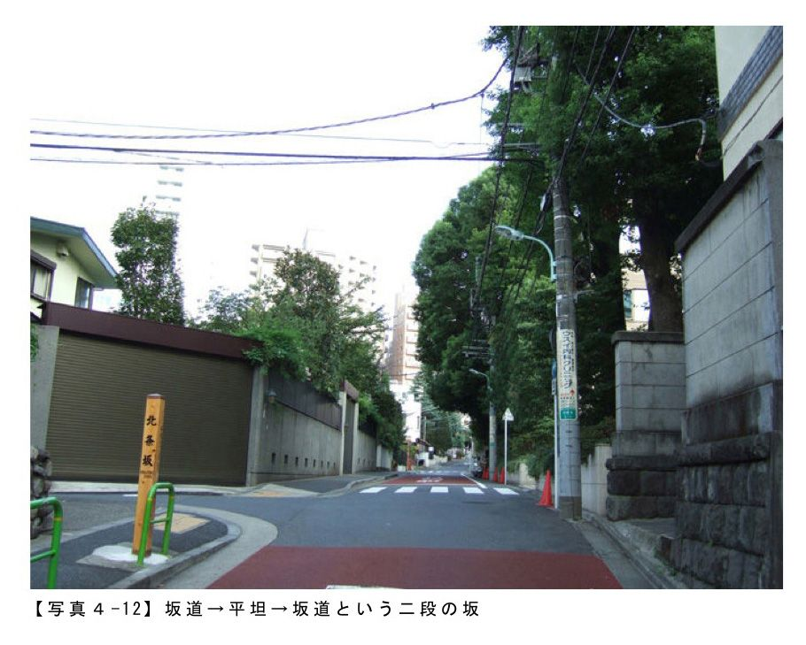
北条坂（ほうじょうざか）
六本木ヒルズの南側エリアというか広尾駅近くに有栖川宮記念公園という都立中央図書館とセットになったような公園があるのですが、北条坂はそのすぐ近くにあります【写真４‐12】。この坂道もかつて坂下あたりに北条家の下屋敷があったことからその名がついたそうです。また坂道自体のつくりもすこし変わっていて、坂道平坦坂道という具合に二段の坂になっていて距離もかなり長く歩くたびにいろんな風景が目に飛び込んできます。
あと、有栖川宮記念公園わきにも南部坂という名の坂道があるんですが、実はここも赤坂の南部坂と同じ南部家が坂名の由来で、ただたんにかつて赤坂（江戸時代は違う地名だったと思いますけど）にあった南部家が麻布に越してきたことから同じ名前の坂道ができてしまったということみたいです。
六本木ヒルズの南側エリアというか広尾駅近くに有栖川宮記念公園という都立中央図書館とセットになったような公園があるのですが、北条坂はそのすぐ近くにあります【写真４‐12】。この坂道もかつて坂下あたりに北条家の下屋敷があったことからその名がついたそうです。また坂道自体のつくりもすこし変わっていて、坂道平坦坂道という具合に二段の坂になっていて距離もかなり長く歩くたびにいろんな風景が目に飛び込んできます。
あと、有栖川宮記念公園わきにも南部坂という名の坂道があるんですが、実はここも赤坂の南部坂と同じ南部家が坂名の由来で、ただたんにかつて赤坂（江戸時代は違う地名だったと思いますけど）にあった南部家が麻布に越してきたことから同じ名前の坂道ができてしまったということみたいです。
このほかにも玄磧坂（げんせきざか）という今は存在しない坂道なんかもありました。場所はなんと今の六本木ヒルズのあるあたりにあったらしく、今はヒルズの再開発で地形ごと造成されてしまったため坂道の痕跡すら残っていません。名前の由来はかってこの周辺に玄磧（げんせき）という僧が住んでいたために玄磧坂と名づけられたそうです。
というわけで、今回は港区を中心に人にまつわる坂道をまわってみましたが、このほかにもいくつかあるようですので、興味があるかたは自分で調べてぶらりとみちくさしてみるのもいいかもしれないですね。
【写真４‐11】 坂道自体のポテンシャルも高い南部坂 港区、南部坂
【写真４‐12】 坂道平坦坂道という二段の坂 港区、北条坂
【写真４‐13】 かつての玄磧坂の坂上はこのあたりだったのかも？ 港区、けやき坂
■５ 目黒のパワースポットを上り下りしてみる
前節に港区の愛宕山にある男坂と女坂をとりあげてみましたが、それから "男坂＆女坂"という坂名の響きがすごく気になり、今回は目黒区にある男坂と女坂をみちくさしてきました。
なぜ隣り合う坂道を男坂と女坂などという名前にしたのか？ そしてそれがなぜ神社仏閣の境内にあるのか？ という疑問を持ちつつ、これらのことはおいおい調べていくとして（もしかしたら永遠に解けない問題かもしれませんけど......笑）、まずは今回の男坂と女坂の舞台である目黒区は下目黒にある目黒不動尊へ。
ここは東急目黒線の不動前駅なんていう駅名があるくらい有名なお寺のようで（すごく単純な見方ですけど......）、お寺の入口あたりの案内板にも書いてありましたが、この目黒不動は江戸時代に五色不動（目黒不動、目赤不動／駒込、目白不動／小石川、目青不動／世田谷、目黄不動／小松川）のひとつとして有名な行楽地だったらしく、昔から多くの人手でにぎわっていたそうです。
また「瀧泉寺」というのがこのお寺の正式な名称らしく「目黒不動」というのは通称名でいわばニックネームみたいなものみたいですね。
というわけで、今回は港区を中心に人にまつわる坂道をまわってみましたが、このほかにもいくつかあるようですので、興味があるかたは自分で調べてぶらりとみちくさしてみるのもいいかもしれないですね。
【写真４‐11】 坂道自体のポテンシャルも高い南部坂 港区、南部坂
【写真４‐12】 坂道平坦坂道という二段の坂 港区、北条坂
【写真４‐13】 かつての玄磧坂の坂上はこのあたりだったのかも？ 港区、けやき坂
■５ 目黒のパワースポットを上り下りしてみる
前節に港区の愛宕山にある男坂と女坂をとりあげてみましたが、それから "男坂＆女坂"という坂名の響きがすごく気になり、今回は目黒区にある男坂と女坂をみちくさしてきました。
なぜ隣り合う坂道を男坂と女坂などという名前にしたのか？ そしてそれがなぜ神社仏閣の境内にあるのか？ という疑問を持ちつつ、これらのことはおいおい調べていくとして（もしかしたら永遠に解けない問題かもしれませんけど......笑）、まずは今回の男坂と女坂の舞台である目黒区は下目黒にある目黒不動尊へ。
ここは東急目黒線の不動前駅なんていう駅名があるくらい有名なお寺のようで（すごく単純な見方ですけど......）、お寺の入口あたりの案内板にも書いてありましたが、この目黒不動は江戸時代に五色不動（目黒不動、目赤不動／駒込、目白不動／小石川、目青不動／世田谷、目黄不動／小松川）のひとつとして有名な行楽地だったらしく、昔から多くの人手でにぎわっていたそうです。
また「瀧泉寺」というのがこのお寺の正式な名称らしく「目黒不動」というのは通称名でいわばニックネームみたいなものみたいですね。
そんなわけでさっそく立派な入口の門をくぐり境内に入ると正面に「不動男坂」とよばれている本堂へ行くための急勾配な石段が見えていました（【写真４‐15】です。ちなみに【写真４‐14】はその坂の途中からのものです）。
風景的には、男坂の高低差の三倍くらいの高さの樹々がすごく印象的で、その隙間に階段と坂上にある本堂がちらりと見えているのが、なんともおもわせぶりなつくりかもですね。しかも、計算したのか偶然なのかどちらかわかりませんけど、本堂の赤ちょうちんもいい感じに、ちゃんと見えています。
風景的には、男坂の高低差の三倍くらいの高さの樹々がすごく印象的で、その隙間に階段と坂上にある本堂がちらりと見えているのが、なんともおもわせぶりなつくりかもですね。しかも、計算したのか偶然なのかどちらかわかりませんけど、本堂の赤ちょうちんもいい感じに、ちゃんと見えています。
男坂の左隣には「独鈷（どっこ）の滝」とよばれる滝があって【写真４‐16】、かつては信者が滝をあびてはお百度をふんで男坂をのぼりおりしたことでも知られていた滝だそうです。
滝というにはちょっと頼りない感じがしなくもないですけど、水をはきだしている龍の造形はかなり凝っていました。
なんでも１２００年くらい前から涸れずに湧き続けているそうです。
滝というにはちょっと頼りない感じがしなくもないですけど、水をはきだしている龍の造形はかなり凝っていました。
なんでも１２００年くらい前から涸れずに湧き続けているそうです。
そして男坂の右隣には、「女坂」とよばれるゆるやかな勾配の階段坂道がありました【写真４‐17】。
なにやら階段が二つあって複雑なつくりですが、坂上の本堂にいくための階段は右側のほうになります。一度右に大きく曲がり、くいっと１８０度左反転して上にあがっていく階段ですね。
なので、実際にのぼりおりする時にもまわりの景色がくるくるとかわりなかなか楽しい階段だったりします。
あとは手前のお堂も含めて坂のいたるところにいろんな神様にまつわるものが置いてあるのも印象的でした。
なにやら階段が二つあって複雑なつくりですが、坂上の本堂にいくための階段は右側のほうになります。一度右に大きく曲がり、くいっと１８０度左反転して上にあがっていく階段ですね。
なので、実際にのぼりおりする時にもまわりの景色がくるくるとかわりなかなか楽しい階段だったりします。
あとは手前のお堂も含めて坂のいたるところにいろんな神様にまつわるものが置いてあるのも印象的でした。
かなりしっかりと整備された階段で、坂の途中はうっそうとした樹々が上空を覆っていたのでちょっと薄暗い感じではありましたが、坂上にむかうたびになにやら天から光がさしこむように明るくなっていきます【写真４‐18】。
そして坂上には、立派な本殿がでーんと構えていました【写真４‐19】。１９８１年に再建された鉄筋コンクリート造の建物だそうです。お参りするためには、さらに階段をのぼっていくことになります。
ちょっとわかりにくいかもしれませんけど、絵馬がいっぱい掛けられた赤い柵に囲まれた灯籠のようなものがみえる場所の右側が男坂で左側が女坂です【写真４‐20】。
というわけで、今回はすこしこまかく写真も多めに坂道散歩というかみちくさしてみました。
とりあえず、この男坂＆女坂という組み合わせについては、まだ都内にいくつかあるみたいなので、連続ではないですけどタイミングをみながらぼちぼちとシリーズ化していこうかなとも思ってます。
【写真４‐14】 石段の途中で一枚パチリ 目黒区、目黒不動尊境内の不動男坂
【写真４‐15】 かなり急勾配な石段！「不動男坂」 目黒区、目黒不動尊境内の不動男坂
【写真４‐16】 独鈷の滝 目黒区、目黒不動尊境内
【写真４‐17】 ゆるやかな勾配 女坂 目黒区、目黒不動尊境内の女坂
【写真４‐18】 くいっと１８０度左反転 女坂の坂上からの眺めです 目黒区、目黒不動尊境内の女坂
【写真４‐19】 でーんとした立派な本殿 目黒区、目黒不動尊境内
【写真４‐20】 本堂側からみた男坂と女坂の坂上の風景 目黒区、目黒不動尊境内
■６ 昼も夜も歩くのが楽しい港区の大人な坂道
はじめの節のほうでポップな坂道が渋谷界隈に多いということを取り上げたと思いますが、今回はそれらと似ているようで似ていないアーバンポップな坂道についてはらりと。
坂道散歩をするときの楽しみ方のひとつに「時間の変化をたのしむ」という考え方があります。朝、昼、夕、そして夜。当たり前だよと言われればそれまでなんですけど、坂道が坂道として見えているのはやっぱり光（と影）のおかげであって、それはもちろん明るいうちなら太陽光、暗くなれば月あかりや街灯などの照明などが考えられます。
というわけで、今回はすこしこまかく写真も多めに坂道散歩というかみちくさしてみました。
とりあえず、この男坂＆女坂という組み合わせについては、まだ都内にいくつかあるみたいなので、連続ではないですけどタイミングをみながらぼちぼちとシリーズ化していこうかなとも思ってます。
【写真４‐14】 石段の途中で一枚パチリ 目黒区、目黒不動尊境内の不動男坂
【写真４‐15】 かなり急勾配な石段！「不動男坂」 目黒区、目黒不動尊境内の不動男坂
【写真４‐16】 独鈷の滝 目黒区、目黒不動尊境内
【写真４‐17】 ゆるやかな勾配 女坂 目黒区、目黒不動尊境内の女坂
【写真４‐18】 くいっと１８０度左反転 女坂の坂上からの眺めです 目黒区、目黒不動尊境内の女坂
【写真４‐19】 でーんとした立派な本殿 目黒区、目黒不動尊境内
【写真４‐20】 本堂側からみた男坂と女坂の坂上の風景 目黒区、目黒不動尊境内
■６ 昼も夜も歩くのが楽しい港区の大人な坂道
はじめの節のほうでポップな坂道が渋谷界隈に多いということを取り上げたと思いますが、今回はそれらと似ているようで似ていないアーバンポップな坂道についてはらりと。
坂道散歩をするときの楽しみ方のひとつに「時間の変化をたのしむ」という考え方があります。朝、昼、夕、そして夜。当たり前だよと言われればそれまでなんですけど、坂道が坂道として見えているのはやっぱり光（と影）のおかげであって、それはもちろん明るいうちなら太陽光、暗くなれば月あかりや街灯などの照明などが考えられます。
なんだかうんちく先生みたいなはじまり方をしてしまいましたが、要はこれらのことなども総合的に考慮にいれながら計画された新しい坂道は特に暗くなってからぶらりとしてみるとなかなかおもしろい場所も多いというわけなんですよ。
と言いつつ、まずは明るいうちに撮ってみた赤坂サカス内にあるさくら坂の風景です【写真４‐22】。
ご存知の人も多いとは思いますが、ここは２００８年に赤坂サカスとともに完成した坂道で、敷地内にはテレビ局（ＴＢＳ）もありなんとなくテーマパークっぽいにおいのする坂道ですが、春になると夜桜（もちろんきれいにライトアップされています）を眺めながら坂道散歩ができる場所でもあります。
ちなみに赤坂サカスという名は、三分坂（さんぶざか）、薬研坂（やげんざか）、丹後坂（たんござか）、氷川坂（ひかわざか）など施設周辺の赤坂界隈に存在している坂をまとめて「坂ｓ」とダジャレっぽくまとめて、それが「さかＳ（す）」となり「サカスいう意味につながっているとのことです。
ご存知の人も多いとは思いますが、ここは２００８年に赤坂サカスとともに完成した坂道で、敷地内にはテレビ局（ＴＢＳ）もありなんとなくテーマパークっぽいにおいのする坂道ですが、春になると夜桜（もちろんきれいにライトアップされています）を眺めながら坂道散歩ができる場所でもあります。
ちなみに赤坂サカスという名は、三分坂（さんぶざか）、薬研坂（やげんざか）、丹後坂（たんござか）、氷川坂（ひかわざか）など施設周辺の赤坂界隈に存在している坂をまとめて「坂ｓ」とダジャレっぽくまとめて、それが「さかＳ（す）」となり「サカスいう意味につながっているとのことです。
さらにもうひとつ。こちらも明るい時のものですが、赤坂サカスから徒歩10分くらいの場所にあるアークヒルズのすぐ南隣にある坂道です【写真４‐23】。
１９８６年にできた坂で、坂上にスペイン大使館があることからスペイン坂と名付けられています。ここも道の両側には桜が植えられており、春にはライトアップされた夜桜を楽しむことができます。
１９８６年にできた坂で、坂上にスペイン大使館があることからスペイン坂と名付けられています。ここも道の両側には桜が植えられており、春にはライトアップされた夜桜を楽しむことができます。
そして、【写真４‐24】はやっと暗くなってから撮った六本木ヒルズ内にあるけやき坂（＝六本木けやき坂通り）のものです。
この坂道は暗くなってから歩くと、坂下あたりでは【写真４‐21】のような白く光っている壁に数字が浮かんで見える宮島達男氏による「カウンターヴォイド」なるパブリックアートがまず目に飛び込んできたり、坂の途中からはライトアップされた東京タワーがちょうど坂の軸線上に見えたりもします。
この坂道は暗くなってから歩くと、坂下あたりでは【写真４‐21】のような白く光っている壁に数字が浮かんで見える宮島達男氏による「カウンターヴォイド」なるパブリックアートがまず目に飛び込んできたり、坂の途中からはライトアップされた東京タワーがちょうど坂の軸線上に見えたりもします。
あとはもうすこしすると毎年恒例のクリスマスイルミネーションなんかもはじまるはずなので、気になる方は仕事帰りにでもぶらりとみちくさしてみるのもいいかもですね。
【写真４‐21】 時間の変化をたのしむ 港区、六本木ヒルズ
【写真４‐22】 お昼のさくら坂 港区、赤坂サカス内のさくら坂
【写真４‐23】 アークヒルズ近くの坂道 港区、スペイン坂
【写真４‐24】 暗くなったけやき坂 港区、六本木ヒルズ内けやき坂
【写真４‐25】 冬にはクリスマスイルミネーションも楽しめます 港区、六本木ヒルズ内けやき坂
■７ 関西坂道ツアー（前編）
いつもは東京都内の坂道を中心にぶらりとまわることが多かったのですけど、今回はちょうど正月帰省のため神戸に数日間滞在したこともあり、せっかくなのでその足で関西にもいくつか存在する名前のある坂道をすこしばかしまわってみることにしてみました。
散歩の前には、念のためガイド本やネット、そして過去の記憶をたどりそれなりに下調べをしてみると、やはり神戸、京都に有名な坂道が多く、生粋の関西人の母でも知っているくらいの坂道がそのあたりにはいくつかあることがわかり、都内のようにちょっとぶらりと坂道散歩という感じではなかったですけど、時間的制限とここ数日の天候不順（特に雪ですね）が心配されたなかでなんとかまわりきることができました。
【写真４‐21】 時間の変化をたのしむ 港区、六本木ヒルズ
【写真４‐22】 お昼のさくら坂 港区、赤坂サカス内のさくら坂
【写真４‐23】 アークヒルズ近くの坂道 港区、スペイン坂
【写真４‐24】 暗くなったけやき坂 港区、六本木ヒルズ内けやき坂
【写真４‐25】 冬にはクリスマスイルミネーションも楽しめます 港区、六本木ヒルズ内けやき坂
■７ 関西坂道ツアー（前編）
いつもは東京都内の坂道を中心にぶらりとまわることが多かったのですけど、今回はちょうど正月帰省のため神戸に数日間滞在したこともあり、せっかくなのでその足で関西にもいくつか存在する名前のある坂道をすこしばかしまわってみることにしてみました。
散歩の前には、念のためガイド本やネット、そして過去の記憶をたどりそれなりに下調べをしてみると、やはり神戸、京都に有名な坂道が多く、生粋の関西人の母でも知っているくらいの坂道がそのあたりにはいくつかあることがわかり、都内のようにちょっとぶらりと坂道散歩という感じではなかったですけど、時間的制限とここ数日の天候不順（特に雪ですね）が心配されたなかでなんとかまわりきることができました。
ということで、まずは神戸の坂道の話からです。
神戸といってもいろいろな場所があるのは周知のとおりですけど、今回は三宮駅界隈にある坂道をいくつかぶらりとしてみることにしました。
知っている方も多いとは思いますが、三宮というのは神戸市中央区の地名のひとつで、神戸のダウンタウンというか中心繁華街というべきかなんともうまい表現ができませんけど、そういう場所です。
そしてそんな場所から徒歩数分のところに名前のつけられた坂道がいくつか点在しています。
神戸といってもいろいろな場所があるのは周知のとおりですけど、今回は三宮駅界隈にある坂道をいくつかぶらりとしてみることにしました。
知っている方も多いとは思いますが、三宮というのは神戸市中央区の地名のひとつで、神戸のダウンタウンというか中心繁華街というべきかなんともうまい表現ができませんけど、そういう場所です。
そしてそんな場所から徒歩数分のところに名前のつけられた坂道がいくつか点在しています。
まず代表的なのが「北野坂」とよばれる坂道です。
三宮駅北側の広場からすぐの場所に案内標識があり、それをたよりに駅前らしいごちゃごちゃした繁華街を山のほう（北側）にすこし歩くと北野坂の坂下あたりにやってきます【写真４‐27】。
よく僕も高校から20代のころに、この坂に行く途中の道にある靴屋をひやかしついでに立ち寄りがてらよく通った道だったので、今回あらためてここが北野坂だったことを知り、ちょっと驚いてしまいました。
三宮駅北側の広場からすぐの場所に案内標識があり、それをたよりに駅前らしいごちゃごちゃした繁華街を山のほう（北側）にすこし歩くと北野坂の坂下あたりにやってきます【写真４‐27】。
よく僕も高校から20代のころに、この坂に行く途中の道にある靴屋をひやかしついでに立ち寄りがてらよく通った道だったので、今回あらためてここが北野坂だったことを知り、ちょっと驚いてしまいました。
それからちょっと長めの距離を上ると北野坂の坂上あたりにやってきます【写真４‐28】。時間で言えば三宮の駅前から徒歩10分もかからない場所でもあります。ちなみにこのあたりの坂道は北野坂も含めて海にむかってくだるパターンが多く、いうなれば山の斜面に道があるという感じの風景がひろがっていました。
そして、これより山側あたりからが有名な北野異人館街のエリアになります（それにしても、オフシーズンのためか人がいないですね......笑）。
そして、これより山側あたりからが有名な北野異人館街のエリアになります（それにしても、オフシーズンのためか人がいないですね......笑）。
北野坂を上りきると東西に走る北野通りという道があり、そこをすこし東に歩くと旧パナマ領事館という建物があります。そしてその西側に「天神坂」とよばれる坂道があります【写真４‐29】。
ここは坂の途中にパラスティン邸なる洋館などがあり、坂上からすぐの場所には風見鶏の館もあるためか舗装もしっかり整備されており、坂上から海のほうを眺めると神戸の市街地もちょっと見えたりします。
坂名については、風見鶏の館のすぐ横に北野天満神社があるため天神坂と名付けられたようです。
ここは坂の途中にパラスティン邸なる洋館などがあり、坂上からすぐの場所には風見鶏の館もあるためか舗装もしっかり整備されており、坂上から海のほうを眺めると神戸の市街地もちょっと見えたりします。
坂名については、風見鶏の館のすぐ横に北野天満神社があるため天神坂と名付けられたようです。
それから天神坂の坂上から風見鶏の館へと向かう道と反対側（東側）の道を歩いていると急に道幅がせまくなり、その途中に「おらんだ坂」とかかれた案内看板があり、山の上（北側）のほうを見ると、人二人がなんとかならんで歩けるくらいの道幅の坂道がありました【写真４‐30】。
道幅がせまく抜け道的な感じの坂道でしたが、れっきとした観光コースの道らしく人通りはそれなりに多かったです。
ここの坂名は坂の途中にオランダ人貿易商、チャーリー・エリオン邸宅があったことからそうよばれるようになったらしく、かつてのチャーリー・エリオン邸は現在「本家オランダ館」として保存されており今も見学ができます。
坂上まで上ってみると、地上からかなりの高低差になることもあり、海のほうを眺めてみると神戸の市街地のむこうにちらりとですけど海を見ることもできます。
ということはこのあたり、三宮駅あたりから頂上側をみると北野坂天神坂オランダ坂と続き、３坂ぶんの高低差があるわけで、さすがにこれだけ連続している坂道もなかなかないかもしれないですね。
ですので、このオランダ坂の坂上あたりが異人館の最北部、要ははしっこの場所ということになります。
そして、このころになると小雪がぱらぱらとちらつきだすなか、オランダ坂よりさらに山側（北側）にちょっとした登山道のような道があったのでふらりと急な坂道を歩いていくと「港みはらし台」なる場所がありました。はじめの【写真４‐26】はそこからのもので、神戸の市街地から港のほうまでかなり気持よく見晴らせる場所でした。ただその割には人が誰もいなくてびっくりしましたけどね。
【写真４‐26】 神戸の市街地から港のほうまでかなり気持よく見晴らせる場所 神戸市中央区、港みはらし台
【写真４‐27】 神戸の代表的な坂「北野坂」 神戸市中央区、北野坂
【写真４‐28】 海にむかってくだる北野坂 神戸市中央区、北野坂
【写真４‐29】 異人館街にある天神坂 神戸市中央区、天神坂
【写真４‐30】 抜け道的な坂道「おらんだ坂」 神戸市中央区、おらんだ坂
■８ 関西坂道ツアー（後編）
前節の神戸に続き、今回は京都の坂道をいくつかぶらりとみちくさしてみました。
道幅がせまく抜け道的な感じの坂道でしたが、れっきとした観光コースの道らしく人通りはそれなりに多かったです。
ここの坂名は坂の途中にオランダ人貿易商、チャーリー・エリオン邸宅があったことからそうよばれるようになったらしく、かつてのチャーリー・エリオン邸は現在「本家オランダ館」として保存されており今も見学ができます。
坂上まで上ってみると、地上からかなりの高低差になることもあり、海のほうを眺めてみると神戸の市街地のむこうにちらりとですけど海を見ることもできます。
ということはこのあたり、三宮駅あたりから頂上側をみると北野坂天神坂オランダ坂と続き、３坂ぶんの高低差があるわけで、さすがにこれだけ連続している坂道もなかなかないかもしれないですね。
ですので、このオランダ坂の坂上あたりが異人館の最北部、要ははしっこの場所ということになります。
そして、このころになると小雪がぱらぱらとちらつきだすなか、オランダ坂よりさらに山側（北側）にちょっとした登山道のような道があったのでふらりと急な坂道を歩いていくと「港みはらし台」なる場所がありました。はじめの【写真４‐26】はそこからのもので、神戸の市街地から港のほうまでかなり気持よく見晴らせる場所でした。ただその割には人が誰もいなくてびっくりしましたけどね。
【写真４‐26】 神戸の市街地から港のほうまでかなり気持よく見晴らせる場所 神戸市中央区、港みはらし台
【写真４‐27】 神戸の代表的な坂「北野坂」 神戸市中央区、北野坂
【写真４‐28】 海にむかってくだる北野坂 神戸市中央区、北野坂
【写真４‐29】 異人館街にある天神坂 神戸市中央区、天神坂
【写真４‐30】 抜け道的な坂道「おらんだ坂」 神戸市中央区、おらんだ坂
■８ 関西坂道ツアー（後編）
前節の神戸に続き、今回は京都の坂道をいくつかぶらりとみちくさしてみました。
京都の坂道といえば、一年坂、二年坂、三年坂が有名ですよね。ただ本書ではやはりそれらを紹介するだけではなんかとなくおもしろくないと（僕が勝手に思っているだけですけど）いうことで、今回はこの界隈にはその他にもいくつかの坂道があったのでそちらの話をメインにしていきたいと思います。
※高台寺：豊臣秀吉没後、その菩提を弔うために秀吉夫人の北政所（ねね）が慶長11年（1606）開創した寺。公式HPより抜粋
その高台寺へと続く小道というか参道がちょっとした坂道になっており「台所坂」という名がつけられていました【写真４‐32】。
なぜ台所坂と名づけられたかについては、ちょっと詳しく調べてみないとわかりませんが、とにかくこの坂道をあのねねさんが何度も行き来したことだけは事実のようです。さすがにしっかりと整備された勾配具合といい道の距離といいちょうど良い具合の階段坂道でした。
その高台寺へと続く小道というか参道がちょっとした坂道になっており「台所坂」という名がつけられていました【写真４‐32】。
なぜ台所坂と名づけられたかについては、ちょっと詳しく調べてみないとわかりませんが、とにかくこの坂道をあのねねさんが何度も行き来したことだけは事実のようです。さすがにしっかりと整備された勾配具合といい道の距離といいちょうど良い具合の階段坂道でした。
そしてこちらが今回の大収穫の坂道だったのですが、ねねの道をぬけて一年坂をぬけ二年坂を歩いている途中に、なんと「龍馬坂」なる坂道があったんです【写真４‐33】。
名前のとおりあの坂本龍馬さんにまつわる坂道です。龍馬マニアにとってはあたりまえの場所なのかもしれませんが、このすぐ近くには龍馬さんのお墓もあります。ですので、だいたいはご想像のとおりです。
ただここは、この龍馬坂と並行してすぐとなりにある「維新の道」という通りのほうが有名なためかこちらは人通りも少なく、坂下の二年坂の賑わいがうそのように静かな坂道でした。しかも遠くには八坂の塔も見えていました。
名前のとおりあの坂本龍馬さんにまつわる坂道です。龍馬マニアにとってはあたりまえの場所なのかもしれませんが、このすぐ近くには龍馬さんのお墓もあります。ですので、だいたいはご想像のとおりです。
ただここは、この龍馬坂と並行してすぐとなりにある「維新の道」という通りのほうが有名なためかこちらは人通りも少なく、坂下の二年坂の賑わいがうそのように静かな坂道でした。しかも遠くには八坂の塔も見えていました。
【写真４‐34】は、さらに龍馬坂を上り、坂上のほうをみたものです。このあたりから坂上はうっそうとした竹林がせまってくるとともになかなかに急な階段坂道となっていました。この日はまだ京都にもすこし雪が残っていたので、かなり足元に注意をむけないといけないくらいの勾配具合で階段自体は整備がしっかりと行き届いているといえばちょっと疑問な感じではありましたが、つくりはしっかりとしたものでした。
また【写真４‐34】の場所のすぐ隣には「２０１０年10月歴史地理学者中村武生」という署名入りで、『坂本龍馬、中岡慎太郎など幕末志士葬送の道』と書かれた案内板が設置されていました（ということはつい最近ですね......）。説明文は長いのでここでは抜粋しませんけど、とにかくここが龍馬坂なんだろうということだけは確信できたかもです。
また【写真４‐34】の場所のすぐ隣には「２０１０年10月歴史地理学者中村武生」という署名入りで、『坂本龍馬、中岡慎太郎など幕末志士葬送の道』と書かれた案内板が設置されていました（ということはつい最近ですね......）。説明文は長いのでここでは抜粋しませんけど、とにかくここが龍馬坂なんだろうということだけは確信できたかもです。
そして最後は、過去の坂と現代のテクノロジーが出会う場所というかそんな坂道もありました【写真４‐35】。
「五条坂」といって三年坂とちょうど坂上を同じくする坂道なのですけど、今回歩いていてふと遠くを眺めていたら、なんと京都タワーがちょうど坂道の軸線上にぽっかりと見えていました。これはわざと計画されたものなのか、はたまた偶然なのかわかりませんがとにかく気になる風景というか坂道でした。
というわけで、一年坂、二年坂、三年坂はともかく、その他のこの界隈の坂道はなにやら京都の有名な建物とも関係がふかそうだなあと妄想しつつこの地をあとにしました。
「五条坂」といって三年坂とちょうど坂上を同じくする坂道なのですけど、今回歩いていてふと遠くを眺めていたら、なんと京都タワーがちょうど坂道の軸線上にぽっかりと見えていました。これはわざと計画されたものなのか、はたまた偶然なのかわかりませんがとにかく気になる風景というか坂道でした。
というわけで、一年坂、二年坂、三年坂はともかく、その他のこの界隈の坂道はなにやら京都の有名な建物とも関係がふかそうだなあと妄想しつつこの地をあとにしました。
ちなみにトップの【写真４‐31】は、三年坂の途中で撮ったものです。なんともタイミングがよく舞妓さんが歩いていたので思わず撮ってみました（画像はちょっと加工してあります）。
そして【写真４‐36】も同じく三年坂ですが、見てのとおり夜のものです。昼間の人通りとはうってかわって誰もいませんでした。おかげでまわりのまちなみ探索はできましたけど。
ただ昔はもっと暗かったんでしょうね。
【写真４‐31】 京都の坂道 京都市東山区、三年坂
【写真４‐32】 高台寺の参道「台所坂」 京都市東山区、台所坂
【写真４‐33】 八坂の塔も見える「龍馬坂」 京都市東山区、龍馬坂
【写真４‐34】 龍馬坂を上っています 京都市東山区、龍馬坂
【写真４‐35】 過去の坂と現代のテクノロジーが出会う場所「五条坂」 京都市東山区、五条坂
【写真４‐36】 夜の三年坂 京都市東山区、三年坂
■９ お江ゆかりの坂道を歩いてみる
あまりにもストレートなタイトルですけど、今回はあのお江さんゆかりの神社境内にある男坂＆女坂をみちくさしてみました。
そして【写真４‐36】も同じく三年坂ですが、見てのとおり夜のものです。昼間の人通りとはうってかわって誰もいませんでした。おかげでまわりのまちなみ探索はできましたけど。
ただ昔はもっと暗かったんでしょうね。
【写真４‐31】 京都の坂道 京都市東山区、三年坂
【写真４‐32】 高台寺の参道「台所坂」 京都市東山区、台所坂
【写真４‐33】 八坂の塔も見える「龍馬坂」 京都市東山区、龍馬坂
【写真４‐34】 龍馬坂を上っています 京都市東山区、龍馬坂
【写真４‐35】 過去の坂と現代のテクノロジーが出会う場所「五条坂」 京都市東山区、五条坂
【写真４‐36】 夜の三年坂 京都市東山区、三年坂
■９ お江ゆかりの坂道を歩いてみる
あまりにもストレートなタイトルですけど、今回はあのお江さんゆかりの神社境内にある男坂＆女坂をみちくさしてみました。
神社の名前は西久保八幡神社とよばれ、場所は港区虎ノ門というわかりやすくいえば東京タワーから徒歩数分のところにあり、神社の入口は桜田通りというあの桜田門につながっているとおりに面しています。
『（略）そのお江（崇源院）ですが、家康公と秀忠公が関ヶ原の戦いに臨むに際し、当社を参拝し、その戦勝と心身の安全を祈願しています。
そのお礼参りに際して、当社を鶴ヶ岡八幡宮と同じように崇敬し、社殿を造営するようにとの直書を持参していました。その意志により、家光公の御代（寛永11年･１６３４）に社殿が造営され、同時に御神体の木像（八幡宮座像･仲哀天皇座像･神功皇后座像）と明王像（不動明王立像･愛染明王座像）も奉納されています。しかし、享保８年（１７２３）の火災により焼失しています。』
という具合に西久保八幡神社とお江さんとの関係についてもしっかりと書かれています。
ただ、ここではさらに詳しい神社の成り立ち話までいってしまうと話が脱線してしまいますので、今回も散歩スタイルでお江さんもかつて上り下りしたであろう坂道をぶらりと歩いてみたいと思います。
『（略）そのお江（崇源院）ですが、家康公と秀忠公が関ヶ原の戦いに臨むに際し、当社を参拝し、その戦勝と心身の安全を祈願しています。
そのお礼参りに際して、当社を鶴ヶ岡八幡宮と同じように崇敬し、社殿を造営するようにとの直書を持参していました。その意志により、家光公の御代（寛永11年･１６３４）に社殿が造営され、同時に御神体の木像（八幡宮座像･仲哀天皇座像･神功皇后座像）と明王像（不動明王立像･愛染明王座像）も奉納されています。しかし、享保８年（１７２３）の火災により焼失しています。』
という具合に西久保八幡神社とお江さんとの関係についてもしっかりと書かれています。
ただ、ここではさらに詳しい神社の成り立ち話までいってしまうと話が脱線してしまいますので、今回も散歩スタイルでお江さんもかつて上り下りしたであろう坂道をぶらりと歩いてみたいと思います。
まずは入口すぐの場所に神社の参道でもある「西久保八幡男坂」なる階段があります【写真４‐38】。
このちかくにある前にも取り上げた愛宕山の階段坂道にも負けないくらいの高低差のある急勾配な階段で、両サイドの石でつくられた立派な手摺が４年ほど前に撮った坂道写真と見比べてみるとあたらしくつくり替えられているようでした。
このちかくにある前にも取り上げた愛宕山の階段坂道にも負けないくらいの高低差のある急勾配な階段で、両サイドの石でつくられた立派な手摺が４年ほど前に撮った坂道写真と見比べてみるとあたらしくつくり替えられているようでした。
階段を上りきるとすぐに社殿が見えてきます【写真４‐39】。上記でもふれた史実の神社の割には規模が小さいかもね、なんて声が聞こえてきそうですけど、この社殿は戦後に建てられたものだそうです。
そしてこちらが女坂のほうです【写真４‐40】。正式には「西久保八幡女坂」というそうです。今は身障者と車のためにある坂道と言ってもいいかもです。
正面下にはちょうど男坂の立派な石の手摺もちらりと見えているとおりここの男坂と女坂は坂下でつながっています。
また坂下の両サイドにはビルも見えているのでこの両坂道の高低差具合もわかりやすいかもですね（おそらく４階分くらいあるかと思われます）。
正面下にはちょうど男坂の立派な石の手摺もちらりと見えているとおりここの男坂と女坂は坂下でつながっています。
また坂下の両サイドにはビルも見えているのでこの両坂道の高低差具合もわかりやすいかもですね（おそらく４階分くらいあるかと思われます）。
あと境内の南西側にも抜け道のような階段がありました。【写真４‐41】はその坂下あたりの様子です。手前の近代的なつくりの階段があると思えば奥には古めかしい石段と小さな鳥居があるという、なんだか不思議な感じの場所でした。
さっきの階段を降りて外にでてみると、なんとも近未来的な風景がひろがっていました【写真４‐42】。
特に左側の建物はここからみただけでもなんとなくわかるかもしれませんが、つくりが個性的で霊友会釈迦殿という名前まであるようです（ちなみに【写真４‐39】の社殿からの写真にもここの屋根がちらりと見えてますよ）。とにかく変わった外観の建物なので「霊友会釈迦殿」と検索してみるといろいろとでてくると思いますのでよかったらどうぞ。
特に左側の建物はここからみただけでもなんとなくわかるかもしれませんが、つくりが個性的で霊友会釈迦殿という名前まであるようです（ちなみに【写真４‐39】の社殿からの写真にもここの屋根がちらりと見えてますよ）。とにかく変わった外観の建物なので「霊友会釈迦殿」と検索してみるといろいろとでてくると思いますのでよかったらどうぞ。
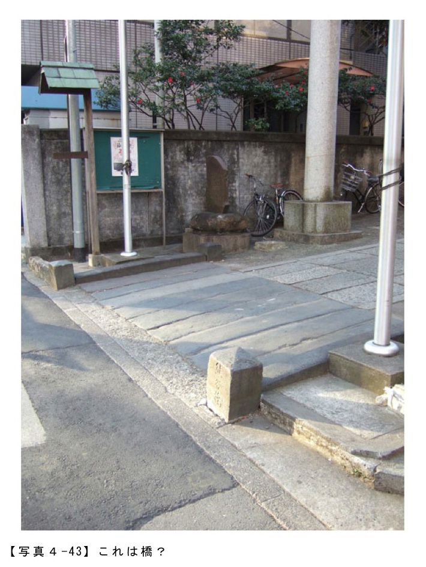
最後は、また神社の入口にもどりますが、坂道を再びじっくり眺めている時に発見しました【写真４‐43】。
これなんだと思います？ はじめは目を疑いました。でもどう見ても橋ですよね。しかも地中に半分以上埋まっていますね。
いちおう名前も確認できました。
「熊谷橋」というみたいです。
というわけで、この橋については門外漢なのでどなたか興味のある人は調べてみてください。ご報告お待ちしております（笑）。
あっ、そうそう。いい忘れていましたけど、たまたま取材に行った日は節分の日だったので、幸運にも節分祭に参加できましたよ。
なので【写真４‐39】の社殿の前にはひとだかりができていますよね。このあとさらに人があつまって豆まき行事が行われました。というわけで僕も福豆いただきましたよ（笑）。
【写真４‐37】 西久保八幡神社の入口より 港区、西久保八幡神社
【写真４‐38】 西久保八幡男坂 港区、西久保八幡男坂
【写真４‐39】 坂上にある社殿 港区、西久保八幡神社境内
【写真４‐40】 女坂 港区、西久保八幡女坂
【写真４‐41】 抜け道のような階段 港区、西久保八幡神社境内
【写真４‐42】 近未来的な風景 港区、霊友会釈迦殿
【写真４‐43】 これは橋？ 港区、西久保八幡神社境内
■10 坂道から地震後の渋谷を眺めてみる。
２０１１年の東日本大震災の地震直後は東京でもそれなりに混乱が生じていたわけですが、最後のこの節では、前節までとは趣向をすこし変えて震災直後の渋谷はどうなっているのだろう？ ということで渋谷にあるいくつかの坂道を地震後の街観察と記録もかねて歩いた時のことを写真も交えながら報告してみたいと思います。
これなんだと思います？ はじめは目を疑いました。でもどう見ても橋ですよね。しかも地中に半分以上埋まっていますね。
いちおう名前も確認できました。
「熊谷橋」というみたいです。
というわけで、この橋については門外漢なのでどなたか興味のある人は調べてみてください。ご報告お待ちしております（笑）。
あっ、そうそう。いい忘れていましたけど、たまたま取材に行った日は節分の日だったので、幸運にも節分祭に参加できましたよ。
なので【写真４‐39】の社殿の前にはひとだかりができていますよね。このあとさらに人があつまって豆まき行事が行われました。というわけで僕も福豆いただきましたよ（笑）。
【写真４‐37】 西久保八幡神社の入口より 港区、西久保八幡神社
【写真４‐38】 西久保八幡男坂 港区、西久保八幡男坂
【写真４‐39】 坂上にある社殿 港区、西久保八幡神社境内
【写真４‐40】 女坂 港区、西久保八幡女坂
【写真４‐41】 抜け道のような階段 港区、西久保八幡神社境内
【写真４‐42】 近未来的な風景 港区、霊友会釈迦殿
【写真４‐43】 これは橋？ 港区、西久保八幡神社境内
■10 坂道から地震後の渋谷を眺めてみる。
２０１１年の東日本大震災の地震直後は東京でもそれなりに混乱が生じていたわけですが、最後のこの節では、前節までとは趣向をすこし変えて震災直後の渋谷はどうなっているのだろう？ ということで渋谷にあるいくつかの坂道を地震後の街観察と記録もかねて歩いた時のことを写真も交えながら報告してみたいと思います。
※ここでの地震直後とは震災後２週間以内のことですのであしからず。
【写真４‐45】は「道玄坂」の坂下にある渋谷１０９のあたりの様子です。震災前はもうすこし建物全体が明るくてネオンが輝いていたような気もしますが、以前の記憶があいまいなためここではあまり違いがわかりませんでした。
そして写真左側がいわゆる道玄坂なのですが、さらりと歩いた分には被害もほとんどなくネオンの明るさもそれほどの変化はないようでした。
ただ１箇所だけ、上からガラスが落ちてくるかもしれないので、という注意書きの張り紙とともに、カラーコーンでちょっとしたバリケードをつくってビルのそばを人が歩けないようにしているところはありましたけどね。
そして写真左側がいわゆる道玄坂なのですが、さらりと歩いた分には被害もほとんどなくネオンの明るさもそれほどの変化はないようでした。
ただ１箇所だけ、上からガラスが落ちてくるかもしれないので、という注意書きの張り紙とともに、カラーコーンでちょっとしたバリケードをつくってビルのそばを人が歩けないようにしているところはありましたけどね。
次は夕暮れ時の「宮益坂」です【写真４‐46】。こちらも見た感じは普通でした。ただなんとなく両サイドのビルが暗いというか震災前より広告看板のネオンがチカチカしていないような気もしますけど、ちょっとこの時間帯ではよくわかりませんでした。
ただこちらも道行く人の表情がちょっと固いかなあという気分的なことと実際に信号待ちしている時に性能よさげな自転車に乗った青年がスペアのタイア（ゴムの部分だけ）を肩にかけてとまっていたのを見て「ああやっぱりそういう時期なんだな」という具合に再確認したりもしました。
ただこちらも道行く人の表情がちょっと固いかなあという気分的なことと実際に信号待ちしている時に性能よさげな自転車に乗った青年がスペアのタイア（ゴムの部分だけ）を肩にかけてとまっていたのを見て「ああやっぱりそういう時期なんだな」という具合に再確認したりもしました。
そしてこちらは宮益坂の坂上にあるガソリンスタンドです【写真４‐47】。まだ夕方の６時前なのに、チェーンで車はもう店に入れないようにしてしまって店じまいの準備をしていました。普段ならもっと遅くまでやっているはずなので、あきらかに節電の影響を感じざるをえませんでした。
またそういう目線で坂道沿いの店をあらためて見てまわっていると、店頭に現在節電中です、という張り紙がいたるところに張ってあったのは印象的だったかもです。
またそういう目線で坂道沿いの店をあらためて見てまわっていると、店頭に現在節電中です、という張り紙がいたるところに張ってあったのは印象的だったかもです。
【写真４‐48】は、渋谷ロフト横にある「間坂」の坂上からの写真です。
本屋によったり、その他のお店をひやかしているうちに日は沈み、さすがにこの時間帯（７時前です）になってくると、いつもはネオンでピカピカの渋谷の街も節電のための自粛効果ですこし暗めの雰囲気になっていました。
写真でいえば、坂下正面のビルはフォーエバー21が入居しているのですが、上のほうを見上げると夜中と思うくらい真っ暗ですよね。
こんな感じで震災前はこの時間帯は道路レベルではお店の照明でけっこう明るかったのですけど、見上げれば真っ暗な場所が多くなっているところも多かったです。
ただこの近くにあるスペイン坂やオランダ坂は歩いている分には地震前とそれほど違いは感じませんでした（なので今回は写真も撮っていません）。
ちなみに右に見えているロフト、この日は６時閉店ということで、写真では光々と照明がついていますけど、すでに店じまいしています。なので閉店していることを知らない若者が店の前まできては立ち去るという光景が何度も続いていました。
本屋によったり、その他のお店をひやかしているうちに日は沈み、さすがにこの時間帯（７時前です）になってくると、いつもはネオンでピカピカの渋谷の街も節電のための自粛効果ですこし暗めの雰囲気になっていました。
写真でいえば、坂下正面のビルはフォーエバー21が入居しているのですが、上のほうを見上げると夜中と思うくらい真っ暗ですよね。
こんな感じで震災前はこの時間帯は道路レベルではお店の照明でけっこう明るかったのですけど、見上げれば真っ暗な場所が多くなっているところも多かったです。
ただこの近くにあるスペイン坂やオランダ坂は歩いている分には地震前とそれほど違いは感じませんでした（なので今回は写真も撮っていません）。
ちなみに右に見えているロフト、この日は６時閉店ということで、写真では光々と照明がついていますけど、すでに店じまいしています。なので閉店していることを知らない若者が店の前まできては立ち去るという光景が何度も続いていました。
こちらは暗くなってから再度、「宮益坂」を歩いたときに撮ったものです【写真４‐49】。ぱっと見た感じでは坂の両サイドのお店の照明のおかげでかなり明るく見えていますけど、よく見てみると街路樹の高さあたりにある街灯が消えていてまるで夜中のように真っ暗です。
個人的には外国の夜の暗さ具合に近い風景かなという感想をもったりもしました。ただ実際に坂道を歩いてみると写真でみえる感じよりはずっと暗く感じました。
というわけで、震災直後の夕方から暗くなる時間帯の渋谷を歩いてみましたが、たしかに暗くなってからの駅前あたりは渋谷名物の大型液晶は真っ暗でネオンもついてなかったのでかなりうす暗い印象はありましたが、全体的（坂道界隈だけですけど）には思っていたよりそれほど暗いなあというわけでもなかったので、とりあえず、ひと安心といった感じでした。
そして最後にあらためて、まだまだ先が見えない状況が続いておりますが、この震災で被害にあわれた方々には心からお見舞い申し上げます。
【写真４‐44】 渋谷宮益坂＆金王坂 渋谷区、宮益坂
【写真４‐45】 渋谷道玄坂と１０９ 渋谷区、道玄坂
【写真４‐46】 やはりいつもと違う宮益坂の坂下 渋谷区、宮益坂
【写真４‐47】 坂上のガソリンスタンド 渋谷区、宮益坂
【写真４‐48】 渋谷ロフト前 渋谷区、間坂
【写真４‐49】 震災直後の宮益坂 渋谷区、宮益坂
個人的には外国の夜の暗さ具合に近い風景かなという感想をもったりもしました。ただ実際に坂道を歩いてみると写真でみえる感じよりはずっと暗く感じました。
というわけで、震災直後の夕方から暗くなる時間帯の渋谷を歩いてみましたが、たしかに暗くなってからの駅前あたりは渋谷名物の大型液晶は真っ暗でネオンもついてなかったのでかなりうす暗い印象はありましたが、全体的（坂道界隈だけですけど）には思っていたよりそれほど暗いなあというわけでもなかったので、とりあえず、ひと安心といった感じでした。
そして最後にあらためて、まだまだ先が見えない状況が続いておりますが、この震災で被害にあわれた方々には心からお見舞い申し上げます。
【写真４‐44】 渋谷宮益坂＆金王坂 渋谷区、宮益坂
【写真４‐45】 渋谷道玄坂と１０９ 渋谷区、道玄坂
【写真４‐46】 やはりいつもと違う宮益坂の坂下 渋谷区、宮益坂
【写真４‐47】 坂上のガソリンスタンド 渋谷区、宮益坂
【写真４‐48】 渋谷ロフト前 渋谷区、間坂
【写真４‐49】 震災直後の宮益坂 渋谷区、宮益坂
子どもの頃は、歩道橋を渡りなさいと教えられていたっけなぁ......。でも、社会人になった今、歩道橋と横断歩道が併設されていたら、忙しいし、登るのもしんどいし、ついつい横断歩道を選んでしまいますよね。でも、一度、歩道橋の前で足を止め、そして歩道橋に登ってみましょう。歩道橋にも、実に様々な種類が存在するのです。歩道橋の上からは、きっと普段見えなかった景色が広がっているはず。意外なご高齢？ で頑張っている歩道橋も沢山ありますよ。講師の歩道教さんによると、歩道橋は純減傾向にあるそう。渡るなら今がチャンス！
著者：歩道教
本格的に歩道橋観察をするようになったのが２０１０年春頃、観察すると実にさまざまな事が見えてくる、その面白さを歩道橋愛好歴が少ないなりに伝えていけたらなと思います、そして一人でも多く愛好者が増える事を願っています。
１ 「歩道橋」についてどんなイメージを持っていますか
歩道橋についてどんなイメージを持っていますか
・階段の昇り降りが面倒くさい
・信号を渡るのに比べて疲れる・体力がいる
・（景観的に）邪魔
などなど......。
どうしても"負のイメージ"の印象が強いのが現状です。
このように嫌われ者扱いされがちな歩道橋へスポットを当てて少しでもイメージを向上させたいと思っています。
著者：歩道教
本格的に歩道橋観察をするようになったのが２０１０年春頃、観察すると実にさまざまな事が見えてくる、その面白さを歩道橋愛好歴が少ないなりに伝えていけたらなと思います、そして一人でも多く愛好者が増える事を願っています。
１ 「歩道橋」についてどんなイメージを持っていますか
歩道橋についてどんなイメージを持っていますか
・階段の昇り降りが面倒くさい
・信号を渡るのに比べて疲れる・体力がいる
・（景観的に）邪魔
などなど......。
どうしても"負のイメージ"の印象が強いのが現状です。
このように嫌われ者扱いされがちな歩道橋へスポットを当てて少しでもイメージを向上させたいと思っています。
私が歩道橋愛好家となった経緯は五つのステップがあります
ステップ１ 歩道橋の上から景色を楽しむ。目線が高くなることで景色が違って見えるようになる。
ステップ２ 撤去により徐々に減りつつある存在が愛おしくなる。
ステップ３ 形・色など様々なタイプがあり、分類心をくすぐられる。
ステップ４ "履歴書"があることを知る。
ステップ５ 実際に各地を探訪するようになり愛好家の道を進む。
最大の謎はステップ４の"履歴書"だと思います。
普段、何気に見る歩道橋にこんな情報が記されているなんて思いもよらない事だと思う
意識して歩道橋を観察すれば"それ"は簡単に発見できる
生年月日、建造主、材質、塗装歴などの情報が得ることが出来て、歩道橋への関心も一気に高まること間違いなし!?
ステップ１ 歩道橋の上から景色を楽しむ。目線が高くなることで景色が違って見えるようになる。
ステップ２ 撤去により徐々に減りつつある存在が愛おしくなる。
ステップ３ 形・色など様々なタイプがあり、分類心をくすぐられる。
ステップ４ "履歴書"があることを知る。
ステップ５ 実際に各地を探訪するようになり愛好家の道を進む。
最大の謎はステップ４の"履歴書"だと思います。
普段、何気に見る歩道橋にこんな情報が記されているなんて思いもよらない事だと思う
意識して歩道橋を観察すれば"それ"は簡単に発見できる
生年月日、建造主、材質、塗装歴などの情報が得ることが出来て、歩道橋への関心も一気に高まること間違いなし!?
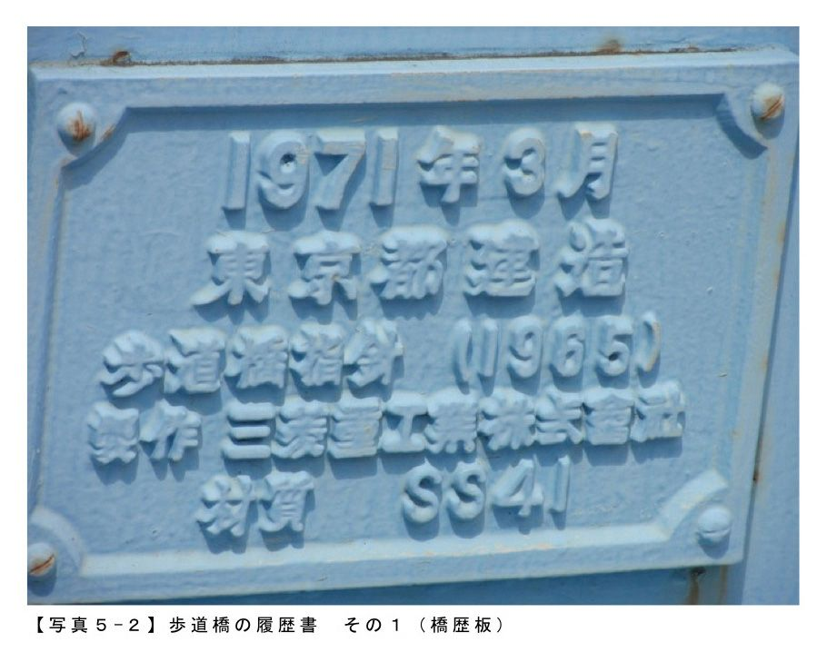
１９７１年３月、東京都によって建造され材質がＳＳ４１、塗装年月が２００２年２月であること等が判明する。
まさに歩道橋にとっての"履歴書"と呼んでもいいのではないだろうか
私が履歴書と勝手に呼んでいるこれらの情報は正式には橋歴板、塗歴板と言うそうです。
他に得られる情報として橋名板がある。
その名の通り、歩道橋の名称
階段の部分で見る事が出来るケースが多々あり漢字＆平仮名のバージョンがある。
まさに歩道橋にとっての"履歴書"と呼んでもいいのではないだろうか
私が履歴書と勝手に呼んでいるこれらの情報は正式には橋歴板、塗歴板と言うそうです。
他に得られる情報として橋名板がある。
その名の通り、歩道橋の名称
階段の部分で見る事が出来るケースが多々あり漢字＆平仮名のバージョンがある。
こんな風に歩道橋の"履歴書"をチェックする事で歩道橋への関心がアップするかと思いますので通勤・通学などで目にする歩道橋があれば橋歴板・塗歴板・橋名板を見てみてはいかがでしょうか
【写真５‐１】 歩道橋にもつイメージって？
【写真５‐２】 歩道橋の履歴書 その１（橋歴板）
【写真５‐３】 歩道橋の履歴書 その２（塗歴板）
【写真５‐４】 歩道橋の履歴書 その３（橋名板）
２ 定番
『歩道橋ってなに？』と聞かれると何となくは説明できるけど明確に答えることができません。
基本中の基本なので困ったときのウィキペディアで調べておきましょう。
【車道または鉄道を跨ぐように架けられた歩行者・自転車専用の橋である。正式には横断歩道橋と呼ぶ】
ほぼ１００％イメージした通りの内容で一安心です。歩道橋って短縮言葉だったんですね。
【写真５‐１】 歩道橋にもつイメージって？
【写真５‐２】 歩道橋の履歴書 その１（橋歴板）
【写真５‐３】 歩道橋の履歴書 その２（塗歴板）
【写真５‐４】 歩道橋の履歴書 その３（橋名板）
２ 定番
『歩道橋ってなに？』と聞かれると何となくは説明できるけど明確に答えることができません。
基本中の基本なので困ったときのウィキペディアで調べておきましょう。
【車道または鉄道を跨ぐように架けられた歩行者・自転車専用の橋である。正式には横断歩道橋と呼ぶ】
ほぼ１００％イメージした通りの内容で一安心です。歩道橋って短縮言葉だったんですね。
さて、今回は歩道橋のタイプを形・色などの面から紹介させて頂きます。まだまだ愛好家歴は浅いですが定番の型があることが見えてきます。
【形】
カタカナ、アルファベット、記号などでいつも表現するようにしていて、「コ」型が一番多く見かけます。
【形】
カタカナ、アルファベット、記号などでいつも表現するようにしていて、「コ」型が一番多く見かけます。
実物を見たのならまだしも写真だけじゃピンとこない時は地図上にて確認すると一目瞭然である。
カタカナの「コ」に見えませんか？
地図を見た後、【写真５‐５】を見れば納得して頂けるかと思います。
他には「Ｈ」「Ч」など様々なタイプが存在しますが、やはり「コ」が最もポピュラーかつ基本形だと思っています。
観賞した際には真っ先にどんな形かを見て分類する癖がついてしまった。
【階段】
歩道橋を渡るにはもちろん階段を昇り降りしなければなりません。多くは途中に踊り場がある
「階段＋踊り場＋階段」ってパターンが実に多い。
地図を見た後、【写真５‐５】を見れば納得して頂けるかと思います。
他には「Ｈ」「Ч」など様々なタイプが存在しますが、やはり「コ」が最もポピュラーかつ基本形だと思っています。
観賞した際には真っ先にどんな形かを見て分類する癖がついてしまった。
【階段】
歩道橋を渡るにはもちろん階段を昇り降りしなければなりません。多くは途中に踊り場がある
「階段＋踊り場＋階段」ってパターンが実に多い。
そして何故か階段の段数は17段が最も多いですね。
だから17条の憲法ならぬ"17段の憲法"と言うようにしている。建造年が古い程、この傾向は強い気がします。個性よりも横並び意識が強い時代だったことが影響している??
【色】
これぞ定番と呼べるカラーリングの傾向は見られない。
ここの歩道橋の場合はアイボリーですね。他には青、クリーム、緑なんていうのもあります。
自治体によってある程度、使われる色が固まっている感じがします。
横浜市ブルー
大阪市黄緑
私事ですが好みの色はあります、それは珍しい色。朱、桃、茶などを見たらテンションが上がってしまう。
一例を挙げると、横浜市青葉区にある朱色の歩道橋。
だから17条の憲法ならぬ"17段の憲法"と言うようにしている。建造年が古い程、この傾向は強い気がします。個性よりも横並び意識が強い時代だったことが影響している??
【色】
これぞ定番と呼べるカラーリングの傾向は見られない。
ここの歩道橋の場合はアイボリーですね。他には青、クリーム、緑なんていうのもあります。
自治体によってある程度、使われる色が固まっている感じがします。
横浜市ブルー
大阪市黄緑
私事ですが好みの色はあります、それは珍しい色。朱、桃、茶などを見たらテンションが上がってしまう。
一例を挙げると、横浜市青葉区にある朱色の歩道橋。
定番の型を抑えつつ、その定番から逸れる型を発見し歩道橋のバリエーションの豊富さを体感したいものですね。
【写真５‐５】 歩道橋の定番
【写真５‐６】 基本の「コ」型歩道橋
【写真５‐７】 地図上での基本の「コ」型歩道橋
【写真５‐８】 階段は17段が最も多い
【写真５‐９】 珍しい朱色
３ 色だっていろいろ
今回は歩道橋の色（カラー）について。
塗装に使われる色なんてほぼ決まっています。
普段、目にする歩道橋を思い出してみてください。青・水色系、ベージュ系ではないでしょうか。
【写真５‐５】 歩道橋の定番
【写真５‐６】 基本の「コ」型歩道橋
【写真５‐７】 地図上での基本の「コ」型歩道橋
【写真５‐８】 階段は17段が最も多い
【写真５‐９】 珍しい朱色
３ 色だっていろいろ
今回は歩道橋の色（カラー）について。
塗装に使われる色なんてほぼ決まっています。
普段、目にする歩道橋を思い出してみてください。青・水色系、ベージュ系ではないでしょうか。
視覚的にすんなり街に溶け込めるのが大きい理由なのでしょう。
それを考えると黒なんてまずありえないでしょうね
さて、この写真の色は「緑」。
単なる「緑」と一言で表現したのでは全く面白みがないと思います。 ケータイの色の表記みたいにちょっと仰々しい表現を理想としています。
それを考えると黒なんてまずありえないでしょうね
さて、この写真の色は「緑」。
単なる「緑」と一言で表現したのでは全く面白みがないと思います。 ケータイの色の表記みたいにちょっと仰々しい表現を理想としています。
最近のドコモの緑系だとＦ－08でパールグリーンがあります。因みにＳＨ－05 Ｂではオトコマエピンクなんていうのもあります。もうなんだか理解不能な世界（笑）。
このように「緑」に何かプラスすることで変哲もない無機質な歩道橋に個性が付くのだと信じている。
それでは頭を捻ってぴったりのネーミングを考えましょうか。
オキシダイズ シルバー グリーン（oxidized silver green）。単純に日本語訳で「いぶし銀の緑」。
このように「緑」に何かプラスすることで変哲もない無機質な歩道橋に個性が付くのだと信じている。
それでは頭を捻ってぴったりのネーミングを考えましょうか。
オキシダイズ シルバー グリーン（oxidized silver green）。単純に日本語訳で「いぶし銀の緑」。
歩道橋に記載のある塗装年月をチェックすると１９９２年３月、ざっと20年近く経過している。
風雨にさらされ、排気ガスを浴びながら多くの年月が経過しているベテランの域であるこの傷み具合を見てしまったら"いぶし銀"の称号を与えたくなってしまった。
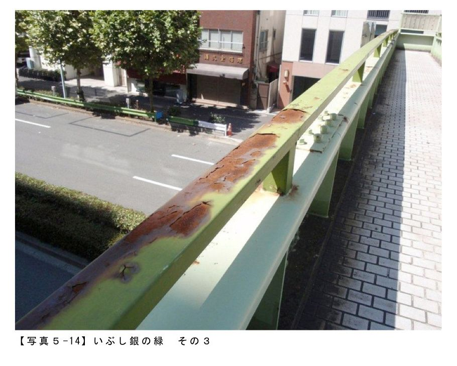
塗装については年代によって流行りや地域において規則性を見つけることができるかもしれません。
コツコツとデータを集めて統計を取っていけば何かが見えてくるかもしれませんね。
尚、残念ながらいい味を醸し出しているこの歩道橋ですが現在は撤去されてしまった（撤去工事、道路維持工事 平成23年10月中旬～平成24年１月末）。
コツコツとデータを集めて統計を取っていけば何かが見えてくるかもしれませんね。
尚、残念ながらいい味を醸し出しているこの歩道橋ですが現在は撤去されてしまった（撤去工事、道路維持工事 平成23年10月中旬～平成24年１月末）。
このように無惨にも階段が取り外され、最重要とも言えるパーツがない滑稽な姿へ変貌してしまった。
そして跡地には信号機が設置された。安全面は置いておくとして老若男女誰もが反対側へ渡り易い仕様となった。
【写真５‐10】 歩道橋の色
【写真５‐11】 緑の歩道橋
【写真５‐12】 いぶし銀の緑 その１
【写真５‐13】 いぶし銀の緑 その２
【写真５‐14】 いぶし銀の緑 その３
【写真５‐15】 階段が撤去されている
【写真５‐16】 歩道橋の撤去後は信号が設置
４ 歩道橋とスカイツリー
話題沸騰中の東京スカイツリーと歩道橋とのコラボ企画。
【写真５‐10】 歩道橋の色
【写真５‐11】 緑の歩道橋
【写真５‐12】 いぶし銀の緑 その１
【写真５‐13】 いぶし銀の緑 その２
【写真５‐14】 いぶし銀の緑 その３
【写真５‐15】 階段が撤去されている
【写真５‐16】 歩道橋の撤去後は信号が設置
４ 歩道橋とスカイツリー
話題沸騰中の東京スカイツリーと歩道橋とのコラボ企画。
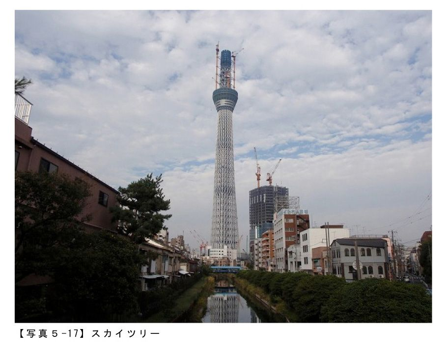
人気者のスカイツリーに便乗して歩道橋へのハードルを下げる突破口になってくれればと思っていますがそう現実は甘くないのだろうなと......。
さて、スカイツリー近くに浅草通りがあります。
この通り沿いで尚且つスカイツリー付近には三つの歩道橋が確認できます。
【柳島歩道橋】
１９７０年３月建造
形はけっこう複雑で強いて言えば「Ｅ」
道路を跨ぐのが一般的でしょうが柳島歩道橋は川を跨いでいます。
この北十間川に架かる十間橋はスカイツリーが見えるポイントとして人気撮影ポイント（トップの【写真５‐17】がそれ）です。
歩道橋の上にはスカイツリー目当ての人が多く、カメラ持参だと仲間意識からか語りかけられることもしばしば。
『上手に撮れますか？』などとフレンドリーに話かけられても『まあまあ撮れますよ』と答えるが実際のところは歩道橋撮影に来ているだけなんですけどね。
超人気者でも歩道橋を前にしたらボクにとっては鉄の塊でしかない。世間の常識からしたら異常ともいえる感覚です。
【業平歩道橋】
１９６８年８月建造
日本で一番、スカイツリーの近くに位置する歩道橋です。
日本一ってことは当然世界一でもある。考えようによってはギネス級なのだ。
逆に近すぎるせいかコラボ画像は撮りにくくセンスが問われます。
この通り沿いで尚且つスカイツリー付近には三つの歩道橋が確認できます。
【柳島歩道橋】
１９７０年３月建造
形はけっこう複雑で強いて言えば「Ｅ」
道路を跨ぐのが一般的でしょうが柳島歩道橋は川を跨いでいます。
この北十間川に架かる十間橋はスカイツリーが見えるポイントとして人気撮影ポイント（トップの【写真５‐17】がそれ）です。
歩道橋の上にはスカイツリー目当ての人が多く、カメラ持参だと仲間意識からか語りかけられることもしばしば。
『上手に撮れますか？』などとフレンドリーに話かけられても『まあまあ撮れますよ』と答えるが実際のところは歩道橋撮影に来ているだけなんですけどね。
超人気者でも歩道橋を前にしたらボクにとっては鉄の塊でしかない。世間の常識からしたら異常ともいえる感覚です。
【業平歩道橋】
１９６８年８月建造
日本で一番、スカイツリーの近くに位置する歩道橋です。
日本一ってことは当然世界一でもある。考えようによってはギネス級なのだ。
逆に近すぎるせいかコラボ画像は撮りにくくセンスが問われます。
歩道橋の裏側から覗き込むように撮ってみました。
まるでエスカレーターで盗撮犯になった気持ちで（笑）。こんな角度でスカートの中を撮ったら立派な犯罪だけど、こんな角度でスカイツリーを撮っても合法です。
【吾妻一丁目道橋】
１９７１年３月建造
ここからのスカイツリーがお気に入りです。ボクの中では超穴場スポットです【写真５‐21】。
都バス（門33系統）で亀戸方面へ向かう途中、車窓から見る歩道橋から突き出たように見えるツリーは見事!! 試したい場合は一番前の座席（運転手横）に座ってみてください。
まるでエスカレーターで盗撮犯になった気持ちで（笑）。こんな角度でスカートの中を撮ったら立派な犯罪だけど、こんな角度でスカイツリーを撮っても合法です。
【吾妻一丁目道橋】
１９７１年３月建造
ここからのスカイツリーがお気に入りです。ボクの中では超穴場スポットです【写真５‐21】。
都バス（門33系統）で亀戸方面へ向かう途中、車窓から見る歩道橋から突き出たように見えるツリーは見事!! 試したい場合は一番前の座席（運転手横）に座ってみてください。
バス繋がりでこの三つのすべてに共通しているのはバス停が歩道橋の傍に設置されている。
バス停に限らず市民が利用する公共的な設備が歩道橋には付き物ってケースが多々あります。
統計上、バス停・電話ＢＯＸ・郵便ポストが御三家だと断言しても問題ありません。
※写真はすべて２０１０年10月16日に撮影したものです。
【写真５‐17】 スカイツリー
【写真５‐18】 スカイツリーと柳島歩道橋
【写真５‐19】 みごとなコラボレーション
【写真５‐20】 超穴場スポット
【写真５‐21】 吾妻一丁目歩道橋からみたスカイツリー
５ 東京以外の歩道橋も見てみよう♪
公共施設などを中心にネーミングライツが売りだされていますが歩道橋も対象にしている自治体があります（大阪市、名古屋市）。
価格は30万以上、安いのか、高いのか微妙......ですが。
バス停に限らず市民が利用する公共的な設備が歩道橋には付き物ってケースが多々あります。
統計上、バス停・電話ＢＯＸ・郵便ポストが御三家だと断言しても問題ありません。
※写真はすべて２０１０年10月16日に撮影したものです。
【写真５‐17】 スカイツリー
【写真５‐18】 スカイツリーと柳島歩道橋
【写真５‐19】 みごとなコラボレーション
【写真５‐20】 超穴場スポット
【写真５‐21】 吾妻一丁目歩道橋からみたスカイツリー
５ 東京以外の歩道橋も見てみよう♪
公共施設などを中心にネーミングライツが売りだされていますが歩道橋も対象にしている自治体があります（大阪市、名古屋市）。
価格は30万以上、安いのか、高いのか微妙......ですが。
群馬県前橋市へ野暮用で行ったときのレポートです。前橋駅から群馬県庁への道すがら三つの歩道橋と出会えました。
形はどれもオーソドックスな「コ」型ばかり。撮影時刻は日曜の昼間で車は走っていますが歩行者をあまり見かけず。当然、歩道橋を渡る人も皆無に近かった。
寂しげな雰囲気が思考をおかしくしてしまうのか、傷みもあり塗装も落ちてきて現役引退を悟ったスポーツ選手のようにも見えてしまいます。
『オレ達が全盛期のころは多くの人が渡ったんだよなー、今じゃ人口も減ってきて......』と昔を思い出し嘆いているようです（考えすぎか??）。
これら三つに共通している箇所を橋脚に見ることができます。
『オレ達が全盛期のころは多くの人が渡ったんだよなー、今じゃ人口も減ってきて......』と昔を思い出し嘆いているようです（考えすぎか??）。
これら三つに共通している箇所を橋脚に見ることができます。
歩道橋のカラーリングに合わせたボーダー柄に塗装されています
自治体毎に特色が出る箇所があるので前橋市の場合は橋脚をボーダーにするのが得意技なのかもしれません（如何せんサンプルが少ないので１２０％推測の域）。
自治体毎に特色が出る箇所があるので前橋市の場合は橋脚をボーダーにするのが得意技なのかもしれません（如何せんサンプルが少ないので１２０％推測の域）。
そしてどれも白は使われていますね。塗装コストが節約できると予想しているけど果たして......。
歩道橋観察の際に必ずチェックしている「建造年月」「塗装年月」の表記がありませんでした。見落とした可能性も考えられるけど、三つとも確認できず。これも前橋市の特徴なのかもしれません。
歩道橋観察の際に必ずチェックしている「建造年月」「塗装年月」の表記がありませんでした。見落とした可能性も考えられるけど、三つとも確認できず。これも前橋市の特徴なのかもしれません。
歩道橋と一口に言っても所変われば雰囲気も変わるものだと実感できました。
大半は都内ばかりをウォッチしているので馴染みのない土地の歩道橋を見れば面白い発見が待っているんじゃないかと期待しています。
地方都市へ行った際の楽しみが増えました。
【写真５‐22】 前橋市の歩道橋
【写真５‐23】 オーソドックスな「コ」型
【写真５‐24】 現役引退を悟ったスポーツ選手のよう？
【写真５‐25】 ボーダー柄 その１
【写真５‐26】 ボーダー柄 その２
【写真５‐27】 ボーダー柄 その３
６ リニューアル
さて今回、紹介をするのはリニューアルです。歩道橋だって時間の経過とともに劣化をします。そこである一定のサイクルで改良工事が行われる。
大半は都内ばかりをウォッチしているので馴染みのない土地の歩道橋を見れば面白い発見が待っているんじゃないかと期待しています。
地方都市へ行った際の楽しみが増えました。
【写真５‐22】 前橋市の歩道橋
【写真５‐23】 オーソドックスな「コ」型
【写真５‐24】 現役引退を悟ったスポーツ選手のよう？
【写真５‐25】 ボーダー柄 その１
【写真５‐26】 ボーダー柄 その２
【写真５‐27】 ボーダー柄 その３
６ リニューアル
さて今回、紹介をするのはリニューアルです。歩道橋だって時間の経過とともに劣化をします。そこである一定のサイクルで改良工事が行われる。
改良前が【写真５‐29】。パッと見、まだまだ十分に使えそうですが人間の眼では判別できない所がきっと傷んでいるのでしょうね。
工事は平成22年６月24日～平成22年９月15日の予定で組まれていた（実際には予定は後ろ倒しとなり９月下旬まで工事をしていました）。
思いのほか長丁場なんだなぁーって率直に感じましたね。【写真５‐28】の工事時間をみてみると夜間も含め20時間体制を敷いているのが分かる。
歩道橋一基を維持していくって随分とコスト（＝税金）がかかっているのだと実感しちゃいます。
そして生まれ変わった姿がコレです【写真５‐30】
工事は平成22年６月24日～平成22年９月15日の予定で組まれていた（実際には予定は後ろ倒しとなり９月下旬まで工事をしていました）。
思いのほか長丁場なんだなぁーって率直に感じましたね。【写真５‐28】の工事時間をみてみると夜間も含め20時間体制を敷いているのが分かる。
歩道橋一基を維持していくって随分とコスト（＝税金）がかかっているのだと実感しちゃいます。
そして生まれ変わった姿がコレです【写真５‐30】
色が明らかに変化しましたね。
アイボリー クリーム
たかが変色、されど変色ですが印象はだいぶ変わります。比較するとリニューアル前は昭和時代に撮ったのではないかと錯覚するほど色あせた感じにみえませんか？
２０１０年９月に塗装したというれっきとした証拠「塗歴板」【写真５‐31】
アイボリー クリーム
たかが変色、されど変色ですが印象はだいぶ変わります。比較するとリニューアル前は昭和時代に撮ったのではないかと錯覚するほど色あせた感じにみえませんか？
２０１０年９月に塗装したというれっきとした証拠「塗歴板」【写真５‐31】
ここから分かることは種類の異なる塗料を下塗・中塗・上塗と三回も塗っている。他の歩道橋のも調べてみると同様の作業をしていることがわかります。
ビフォーとアフターの間の途中経過の写真のほんの一部を掲載させていただきます。
ビフォーとアフターの間の途中経過の写真のほんの一部を掲載させていただきます。
個人的なことですけど２００９年の７月にこの辺にオフィスが移転したことで、週に３、４回は見に行き歩道橋改良工事の一端を垣間見る事が叶ったわけでした。
そして「大改造!! 劇的ビフォーアフター」の音楽を聞きながら工事の進捗写真を見た方が、より一層臨場感がでるかと思いますよ（笑）。
【写真５‐28】 改良工事期間
【写真５‐29】 改良前
【写真５‐30】 改良後
【写真５‐31】 れっきとした証拠
【写真５‐32】 改良途中 その１
【写真５‐33】 改良途中 その２
【写真５‐34】 改良途中 その３
７ 超希少なベランダ型歩道橋
数多くの歩道橋に触れていくうちにありきたりなタイプを見ても何ら感動しない自分がいます。
この境地に達すると歩道橋愛好家としてはステータスがワンランクアップしたと思いますね。
そして「大改造!! 劇的ビフォーアフター」の音楽を聞きながら工事の進捗写真を見た方が、より一層臨場感がでるかと思いますよ（笑）。
【写真５‐28】 改良工事期間
【写真５‐29】 改良前
【写真５‐30】 改良後
【写真５‐31】 れっきとした証拠
【写真５‐32】 改良途中 その１
【写真５‐33】 改良途中 その２
【写真５‐34】 改良途中 その３
７ 超希少なベランダ型歩道橋
数多くの歩道橋に触れていくうちにありきたりなタイプを見ても何ら感動しない自分がいます。
この境地に達すると歩道橋愛好家としてはステータスがワンランクアップしたと思いますね。
珍しいタイプを探し彷徨っていたら渋谷で発見。【写真５‐35】の金王坂下歩道橋がそれです。
塗装が茶色である事も都内ではなかなかお目にかかれないですがそれ以上に物珍しいものが付属しています。
"屋根が付いている"
これなら雨が降った時でも濡れずに安心。
塗装が茶色である事も都内ではなかなかお目にかかれないですがそれ以上に物珍しいものが付属しています。
"屋根が付いている"
これなら雨が降った時でも濡れずに安心。
住宅の世界では屋根があるとベランダ、ないとバルコニー、数的にはベランダ＞バルコニーのように思うのですけど、歩道橋の世界においてはバルコニー型が圧倒的に多いのが現状、個人的には99％以上だと認識しています
それだけ屋根のあるベランダ型は貴重な存在だと言えますね。
それだけ屋根のあるベランダ型は貴重な存在だと言えますね。
歩道橋の観賞ポイントの一つに階段下のスペースが挙げられます。この空いたスペース（鉄道に例えるなら高架下かな）は歩道橋の隠れた顔であって色んな物が置かれています。
代表的なのが電話ＢＯＸや違法駐輪と思われるチャリなど。
代表的なのが電話ＢＯＸや違法駐輪と思われるチャリなど。
ここではコインパーキングになっていて狭く土地の高い東京ならではの商売が成立しています。12時間１００円と良心的な価格設定のせいかほぼ満車状態でした。
屋根付きって他にも無いのかなと思っていた矢先、栃木県日光市へ行った際にたまたま発見できました。
見つけた時は感激で涙が出るほどであった。
屋根付きって他にも無いのかなと思っていた矢先、栃木県日光市へ行った際にたまたま発見できました。
見つけた時は感激で涙が出るほどであった。
階段部分に注目すると歩道橋全体が屋根で覆われているのが分かります（金王坂下歩道橋では階段には屋根がなし）。
素材はアクリル板だろうけどこの分だけ建設のコストはアップするわけだから屋根を付けるのには目的があるのだと思われる。
素材はアクリル板だろうけどこの分だけ建設のコストはアップするわけだから屋根を付けるのには目的があるのだと思われる。
新たに建造される際には屋根が付けられケースもちらほら。
私としては１９６０、70年代の建造で屋根付きだとポイントが高く、多少遠くでもわざわざ見に行ってしまう。
群馬県みなかみ町へ歩道橋のためだけに行ったこともあったりして、ストリートビューの対象外エリアの場合は情報が頼みなので１９６０、70年代建造で屋根付き歩道橋を知っていたら是非、お知らせください。
hodoukyou@mail.goo.ne.jp
【写真５‐35】 珍しいタイプの歩道橋
【写真５‐36】 屋根付き歩道橋 その１
【写真５‐37】 屋根付き歩道橋 その２
【写真５‐38】 歩道橋の二次利用
【写真５‐39】 日光市のベランダ型歩道橋 その１
【写真５‐40】 日光市のベランダ型歩道橋 その２
【写真５‐41】 群馬県みなかみ町のベランダ型歩道橋
８ 歩道橋の付着物
今回は歩道橋そのものではなく歩道橋の付着物に関することです。【写真５‐42】にも付着物がありますよ。目立つ物では道路標識、かなり目立たないところだと街灯があります。
私としては１９６０、70年代の建造で屋根付きだとポイントが高く、多少遠くでもわざわざ見に行ってしまう。
群馬県みなかみ町へ歩道橋のためだけに行ったこともあったりして、ストリートビューの対象外エリアの場合は情報が頼みなので１９６０、70年代建造で屋根付き歩道橋を知っていたら是非、お知らせください。
hodoukyou@mail.goo.ne.jp
【写真５‐35】 珍しいタイプの歩道橋
【写真５‐36】 屋根付き歩道橋 その１
【写真５‐37】 屋根付き歩道橋 その２
【写真５‐38】 歩道橋の二次利用
【写真５‐39】 日光市のベランダ型歩道橋 その１
【写真５‐40】 日光市のベランダ型歩道橋 その２
【写真５‐41】 群馬県みなかみ町のベランダ型歩道橋
８ 歩道橋の付着物
今回は歩道橋そのものではなく歩道橋の付着物に関することです。【写真５‐42】にも付着物がありますよ。目立つ物では道路標識、かなり目立たないところだと街灯があります。
そもそも街灯って歩道橋にはほぼ必需品と言っても過言じゃありません。
昼間は無視されがちな存在でも、夜間になれば通行の安全には欠かせない設備だと思います。
さー残った付着物は何だか分かりますか？
正解は「横断幕」
該当する箇所を拡大したのが【写真５‐44】です。
内容は環２トンネル準備工事のため昼夜間車両規制があるので迂回の協力要請の横断幕です。
さー残った付着物は何だか分かりますか？
正解は「横断幕」
該当する箇所を拡大したのが【写真５‐44】です。
内容は環２トンネル準備工事のため昼夜間車両規制があるので迂回の協力要請の横断幕です。
歩道橋を活用してドライバー向けの広報活動がされるというわけです。
マラソン大会の開催に際しては、大規模に通行止めがあるので、このような幕を見たことがあるという人も多いのではないでしょうか。こちらは今年（２０１１年）バージョンになっています。
マラソン大会の開催に際しては、大規模に通行止めがあるので、このような幕を見たことがあるという人も多いのではないでしょうか。こちらは今年（２０１１年）バージョンになっています。
ちなみに【写真５‐45】の歩道橋はマラソンコース内です
コースを外れた歩道橋でも掲げられる。考えてみたら移動するドライバー（車）にとってコース内外は関係ないですもんね。こちらは正面にスカイツリーがよく見える葛飾区立石。建設途中な点はある意味、貴重はショットとなったのではないだろうか
コースを外れた歩道橋でも掲げられる。考えてみたら移動するドライバー（車）にとってコース内外は関係ないですもんね。こちらは正面にスカイツリーがよく見える葛飾区立石。建設途中な点はある意味、貴重はショットとなったのではないだろうか
花火大会でも同様に横断幕は使われたりします。今年（２０１１年）の隅田川花火の帰り道に撮ったものが【写真５‐47】です。
通行止めではなく迂回を促すお知らせのようです。
２０１１年は中止になった花火大会がいくつかあったので歩道橋にこうした横断幕を目にする機会は少ないですが、例年の夏であれば至る所でこのような光景が見られたことだと思います。
来年のマラソン、花火の両大会では各地の歩道橋を撮り集めたいです。その時々しか見せない光景なので貴重な写真になると踏んでいるのですが......。
もしも２０２０年に東京でオリンピックが開催されたら男女のマラソン大会時の横断幕付き歩道橋は超、超、超......超貴重な光景になります。
何としても開催国になってほしいです。
こんな理由で東京オリンピックを願うのは日本中でボクだけだと自信をもって言えます。
【写真５‐42】 付着物 道路標識
【写真５‐43】 付着物 街灯
【写真５‐44】 付着物 横断幕 その１
【写真５‐45】 付着物 横断幕 その２
【写真５‐46】 付着物 横断幕 その３
【写真５‐47】 付着物 横断幕 その４
９ 環七足立系、ここに誕生。
歩道橋があるのは総じて交通量の激しい道路上です。
歩行者が信号のある横断歩道よりも安全に渡れるのを期待してのことです。
この観点からも環七には数多くの歩道橋が設置されていて一つの共通点を発見するに至ったので報告します。
２０１１年は中止になった花火大会がいくつかあったので歩道橋にこうした横断幕を目にする機会は少ないですが、例年の夏であれば至る所でこのような光景が見られたことだと思います。
来年のマラソン、花火の両大会では各地の歩道橋を撮り集めたいです。その時々しか見せない光景なので貴重な写真になると踏んでいるのですが......。
もしも２０２０年に東京でオリンピックが開催されたら男女のマラソン大会時の横断幕付き歩道橋は超、超、超......超貴重な光景になります。
何としても開催国になってほしいです。
こんな理由で東京オリンピックを願うのは日本中でボクだけだと自信をもって言えます。
【写真５‐42】 付着物 道路標識
【写真５‐43】 付着物 街灯
【写真５‐44】 付着物 横断幕 その１
【写真５‐45】 付着物 横断幕 その２
【写真５‐46】 付着物 横断幕 その３
【写真５‐47】 付着物 横断幕 その４
９ 環七足立系、ここに誕生。
歩道橋があるのは総じて交通量の激しい道路上です。
歩行者が信号のある横断歩道よりも安全に渡れるのを期待してのことです。
この観点からも環七には数多くの歩道橋が設置されていて一つの共通点を発見するに至ったので報告します。
まずは【写真５‐48】＆【写真５‐49】の写真をご覧ください。
どちらも一直線になっています。
たいていの歩道橋は階段を昇りきると90度曲がって通路があり再び90度曲がって階段を下りる事になるかとおもう。
そういった意味ではこの歩道橋は珍しいタイプだと言えなくもありません。
どちらも一直線になっています。
たいていの歩道橋は階段を昇りきると90度曲がって通路があり再び90度曲がって階段を下りる事になるかとおもう。
そういった意味ではこの歩道橋は珍しいタイプだと言えなくもありません。
しらみつぶしに調査した結果、環七には一直線タイプの歩道橋が七基あることが判明しました。
【写真５‐48】＆【写真５‐49】が（1）北鹿浜西歩道橋
（2）北鹿浜南歩道橋
【写真５‐48】＆【写真５‐49】が（1）北鹿浜西歩道橋
（2）北鹿浜南歩道橋
（3）東加平歩道橋
（4）西加平歩道橋
（5）新田歩道橋
（6）豊玉南歩道橋
（7）北新井歩道橋
七基のうち五基も足立区内にあります（1）～（5）。
環七が通過する区は大田、目黒、世田谷、杉並、中野、練馬、板橋、北、足立、葛飾、江戸川と幅広いにもかかわらず足立区の集中ぶりは凄くないですか。
なお、（6）（7）は練馬区にあります。
この現象により一直線の歩道橋を"環七足立系"と呼んでも差し支えないと思うのですが。
歩道橋なんてニッチな趣味の世界なのでこんなネーミングを付けても異論を挟む人もいないでしょうけど......。
環七足立系が量産されたナゾを自分なりに考えてみました
建造年月を調べた結果が下記
（1）１９６８年３月
（2）１９６７年３月
（3）１９６７年11月
（4）１９６７年11月
（5）１９７１年３月
（6）１９７０年３月
（7）１９６４年８月
見事にバラバラ。大量生産説っていうわけじゃなさそうです。
早くもお手上げ。ナゾはそう簡単に解けそうにもありません。単なる歩道橋を設置するスペースを考慮した結果というもっともらしく単純な理由に落ち着きそうです。
環七以外の道路でも何か共通点が潜んでいるかもしれません。しらみつぶしに研究したいと考え中。発見できた際には再び、みちくさ学会にて報告します。
尚、"環七足立系"は東京23区内よりも郊外の方で発見できる率は高いです。
【写真５‐48】 まっすぐな歩道橋 その１
【写真５‐49】 まっすぐな歩道橋 その２
【写真５‐50】 北鹿浜南歩道橋
【写真５‐51】 東加平歩道橋
【写真５‐52】 西加平歩道橋
【写真５‐53】 新田歩道橋
【写真５‐54】 豊玉南歩道橋
【写真５‐55】 北新井歩道橋
10 東京マラソン２０１２
マラソン中継を見ていて選手の走りやレース展開をそっちのけで歩道橋に目がいってしまえば立派なマニアとして認定できると言えます。
もちろん僕も中継で歩道橋が映れば気になって仕方ない状況に陥ります。
環七が通過する区は大田、目黒、世田谷、杉並、中野、練馬、板橋、北、足立、葛飾、江戸川と幅広いにもかかわらず足立区の集中ぶりは凄くないですか。
なお、（6）（7）は練馬区にあります。
この現象により一直線の歩道橋を"環七足立系"と呼んでも差し支えないと思うのですが。
歩道橋なんてニッチな趣味の世界なのでこんなネーミングを付けても異論を挟む人もいないでしょうけど......。
環七足立系が量産されたナゾを自分なりに考えてみました
建造年月を調べた結果が下記
（1）１９６８年３月
（2）１９６７年３月
（3）１９６７年11月
（4）１９６７年11月
（5）１９７１年３月
（6）１９７０年３月
（7）１９６４年８月
見事にバラバラ。大量生産説っていうわけじゃなさそうです。
早くもお手上げ。ナゾはそう簡単に解けそうにもありません。単なる歩道橋を設置するスペースを考慮した結果というもっともらしく単純な理由に落ち着きそうです。
環七以外の道路でも何か共通点が潜んでいるかもしれません。しらみつぶしに研究したいと考え中。発見できた際には再び、みちくさ学会にて報告します。
尚、"環七足立系"は東京23区内よりも郊外の方で発見できる率は高いです。
【写真５‐48】 まっすぐな歩道橋 その１
【写真５‐49】 まっすぐな歩道橋 その２
【写真５‐50】 北鹿浜南歩道橋
【写真５‐51】 東加平歩道橋
【写真５‐52】 西加平歩道橋
【写真５‐53】 新田歩道橋
【写真５‐54】 豊玉南歩道橋
【写真５‐55】 北新井歩道橋
10 東京マラソン２０１２
マラソン中継を見ていて選手の走りやレース展開をそっちのけで歩道橋に目がいってしまえば立派なマニアとして認定できると言えます。
もちろん僕も中継で歩道橋が映れば気になって仕方ない状況に陥ります。
２月２６日（※２０１２年の場合）には東京マラソンが開催され、４２.１９５ｋｍの間には実に多くの歩道橋を見ることができ、通路桁の高欄にはこの時期特有の横断幕が掲げられている（※【写真５‐56】は【新都心歩道橋】）。
スタートの都庁～ゴールの東京ビッグサイトには以下の歩道橋があります。
新都心厚生年金会館前東富久飯田橋飯田橋第２芝公園芝札の辻三田高輪久松築地区立二中前名称不明豊洲２丁目豊洲三丁目名称不明豊洲５中前東雲東雲一丁目都橋通り
全てに通行止めを知らせる横断幕が掲げられているわけでもなく
確率としては半々といったところでした。
レース終盤の豊洲以降では東雲歩道橋のみという状況で、横断幕の「あり」と「なし」の境界線はどこにあるのか謎のままでモヤモヤだけが残った感じ。
【厚生年金会館前、飯田橋、三田、芝（左上から時計回り）】
スタートの都庁～ゴールの東京ビッグサイトには以下の歩道橋があります。
新都心厚生年金会館前東富久飯田橋飯田橋第２芝公園芝札の辻三田高輪久松築地区立二中前名称不明豊洲２丁目豊洲三丁目名称不明豊洲５中前東雲東雲一丁目都橋通り
全てに通行止めを知らせる横断幕が掲げられているわけでもなく
確率としては半々といったところでした。
レース終盤の豊洲以降では東雲歩道橋のみという状況で、横断幕の「あり」と「なし」の境界線はどこにあるのか謎のままでモヤモヤだけが残った感じ。
【厚生年金会館前、飯田橋、三田、芝（左上から時計回り）】
横断幕付きなのは九か所ありました。
東京マラソンの２０１１と２０１２で忘れてはならない重要な相違点が一つ隠されています。
その舞台が「清杉歩道橋」。
状態は錆びが目立ち年季が入っていることがうかがえる。
東京マラソンの２０１１と２０１２で忘れてはならない重要な相違点が一つ隠されています。
その舞台が「清杉歩道橋」。
状態は錆びが目立ち年季が入っていることがうかがえる。
東京マラソンコース内で唯一、ここだけが撤去されてしまいました。工事は２０１１年10月より行われていました。階段が取り外され、橋脚と通路桁を残すのみの痛ましい姿です。
新規建設は細々とあるけど純減がトレンドとなっているのも事実なので、撤去を目の当たりするたびに一つでも多くの歩道橋を写真に記録しておくべきだと肝に銘じます。
その跡地には信号が設置され区営の駐輪場も整備されました。
コース内に新設は一か所ありました。豊洲三丁目歩道橋の隣にあるこの歩道橋です（名称不明）。
橋歴板が見当たらなかったので確実な事が言えませんが２０１１年３月に完成したと推測しています。
新設だけあってエレベーター付きで便利である。
コース内に新設は一か所ありました。豊洲三丁目歩道橋の隣にあるこの歩道橋です（名称不明）。
橋歴板が見当たらなかったので確実な事が言えませんが２０１１年３月に完成したと推測しています。
新設だけあってエレベーター付きで便利である。
マラソン中継の際には結果も気にはなりますが、歩道橋にも注目するのも一興かと思います。
東京マラソンコースにおよそ20基あり、まるで歩道橋の博覧会となるのではないでしょうか。
【写真５‐56】 東京マラソンの通行止のお知らせ その１
【写真５‐57】 東京マラソンの通行止のお知らせ その２
【写真５‐58】 東京マラソンの通行止のお知らせ その３
【写真５‐59】 忘れてはならない重要な相違点
【写真５‐60】 痛ましい姿
【写真５‐61】 撤去後
【写真５‐62】 新設の一カ所
東京マラソンコースにおよそ20基あり、まるで歩道橋の博覧会となるのではないでしょうか。
【写真５‐56】 東京マラソンの通行止のお知らせ その１
【写真５‐57】 東京マラソンの通行止のお知らせ その２
【写真５‐58】 東京マラソンの通行止のお知らせ その３
【写真５‐59】 忘れてはならない重要な相違点
【写真５‐60】 痛ましい姿
【写真５‐61】 撤去後
【写真５‐62】 新設の一カ所
みちくさ学会 研究報告 第１集 自宅の近所・通勤通学路にあるもの
発行日 平成25年４月１日
著 者 みちくさ学会
発 行 Impress Business Development LLC
〒１０２―００７５ 東京都千代田区三番町20番地
（本の内容に関するお問い合わせ先）
mail:quickbooks_info@impress.co.jp
発 売 株式会社インプレスコミュニケーションズ
〒１０２―００７５ 東京都千代田区三番町20番地 2013 Michikusagakkai All rights reserved.
2013 Michikusagakkai All rights reserved.
発行日 平成25年４月１日
著 者 みちくさ学会
発 行 Impress Business Development LLC
〒１０２―００７５ 東京都千代田区三番町20番地
（本の内容に関するお問い合わせ先）
mail:quickbooks_info@impress.co.jp
発 売 株式会社インプレスコミュニケーションズ
〒１０２―００７５ 東京都千代田区三番町20番地
Copyright
2013 Michikusagakkai All rights reserved.
企 画 株式会社デジカル
制 作 株式会社デジタルディレクターズ
表紙写真 松本市の防火水槽の蓋（２０１０年10月撮影） 撮影者 森本庄治
運動指導者が断言！ダイエットは運動1割・食事9割
森 拓郎
お腹を凹ませたい？だったら腹筋運動なんかやめちまえ！
森 拓郎
究極のデトックス ファスティングダイエット
藤原 茜
「冷え」の悩みを瞬間リセット！ あたため美人生活
松岡博子
心身を浄化し、ゆっくり高めていく 「ゆるアロマ」のすすめ
素敵生活総合研究所
愛される聴き方
船見真鈴
サルより低い日本人の危機意識
佐々木良昭
4コママンガで誰でもわかるEvernote超入門
岡野純
夢みるチカラを取り戻す！ 眠る前に読む夢占い＜恋愛編＞
秋月さやか
イケメンカフェの歩きかた
内藤みか